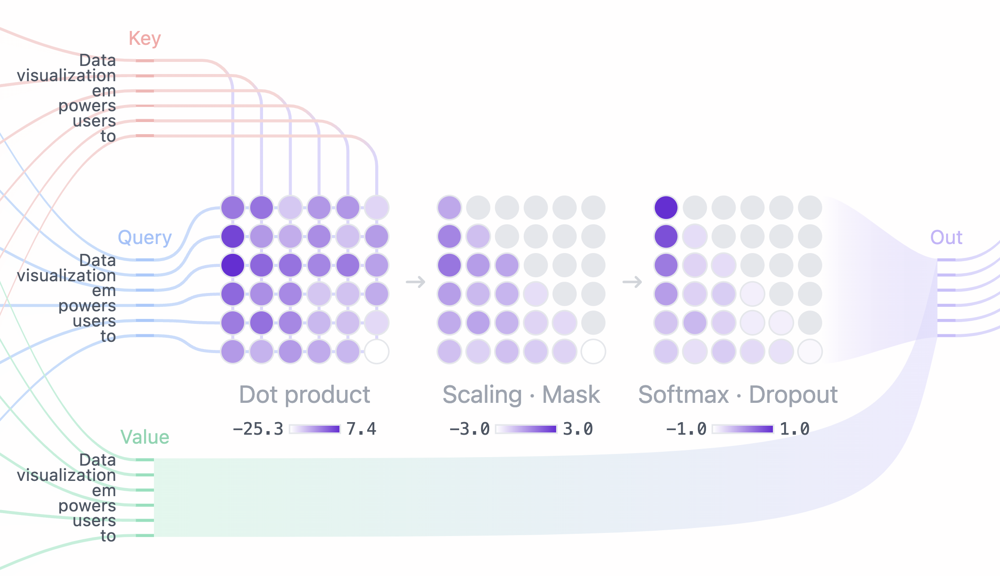
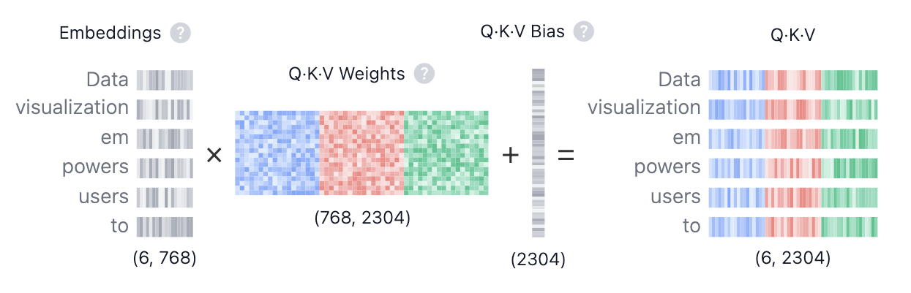
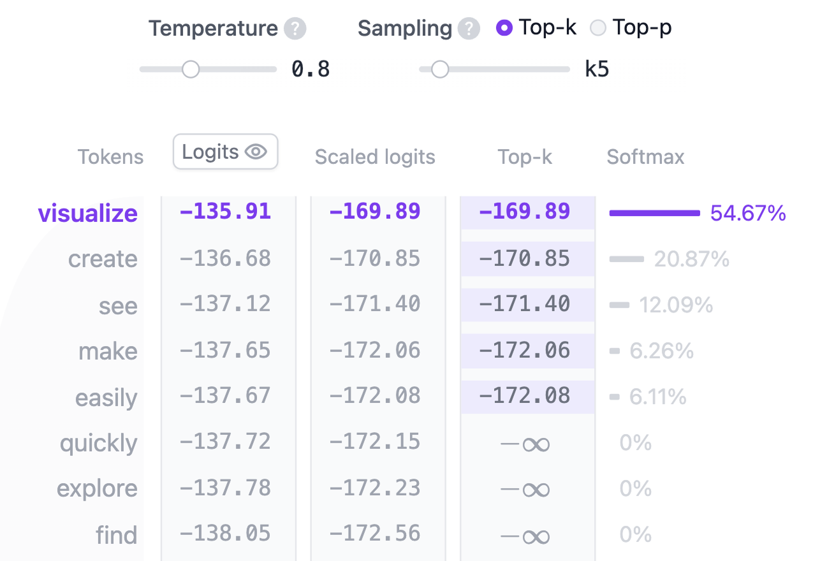
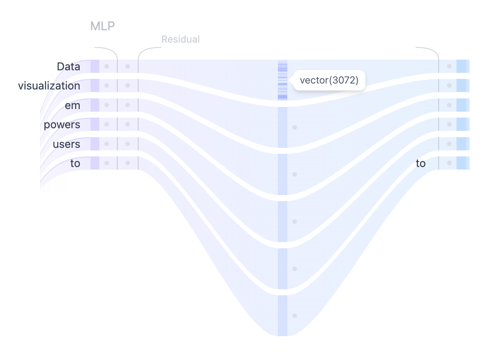

How to read this book#
This book is the companion to the pytorch_nn_training notebooks. You type code
in the notebooks. You learn why that code works in this book. Keep both open.
Most machine-learning tutorials fail in one of two ways. Some give you working code but do not explain the mathematics. You can run that code, but you cannot reason about it, and you cannot fix it when it breaks. Others give you the mathematics but do not show you how to write a training loop. This book and its notebooks close that gap from both sides. Each idea appears in four different forms:
- As mathematics, in this book. We derive each result. We do not just state it.
- As arithmetic that you do yourself, in the By hand exercises. Each exercise is small enough for paper and large enough to be real.
- As code, in the notebook for that chapter. You complete the code and run it.
- As a library call, in the In the wild boxes. These boxes show what production code uses instead, what it adds, and what it hides.
The fourth form is more important than it looks. The goal is not to avoid libraries. The goal is that you can read a paper, find the equation that is new, implement it, and compare a library's version with your own. The Appendix helps with that step. It maps each component in this book to its production API. It also tells you how to read research papers, and it describes the main changes in the field since 2017.
Many people skip the by-hand step. Do not skip it, because it does most of the work. After you
calculate a gradient once with a pencil, it is no longer just a symbol. It is a number that you
know how to check. If your loss becomes nan at three in the morning, that skill is
the difference between a fix and a guess.
The rhythm#
Each chapter of this book goes with one lesson folder. Use this sequence for each chapter:
- Read the full chapter before you open the notebook. Read it from start to end. One chapter takes twenty to forty minutes.
- Do the By hand exercises. Do not read a solution first. An error that you find and understand teaches you more than a correct answer that you read.
- Do the Feel for the numbers box on paper. It is short. After you do it, you read $\mathcal{L} = 2.30$ as this model has learned nothing, not only as a symbol.
- Do the Say it back box before you look at other material. When you explain a mechanism from memory, you find gaps that you do not see when you read again.
- Open
prompt.ipynbin the matching folder and complete theTODOs. You will know each formula, because you just calculated it by hand. - Compare your work with
solution.ipynb. Its cells already contain their outputs, so you can read the results without running the notebook.
There is one exception. Chapter 12 contains the capstone projects. It has one notebook and no solutions, because each of its five projects has many correct answers.
A box like this one contains a pencil-and-paper exercise. The numbers are always easy: small integers, halves, and sometimes $e$. Thus the arithmetic does not hide the idea. Each exercise has a worked answer in a fold below it, like this:
Worked solution
In every exercise box in this book, the answer is behind a fold. You can check your work when you finish, but you do not see the answer first. Do not read an answer early. The value of an exercise is in the attempt.
Answers
The answers are here, in a fold, with all the arithmetic. If you cannot get a number, you can always see how to get it.
Each chapter has one of these boxes too. It names the main mechanism of the chapter. Explain that mechanism in your own words to a language model that you use. Then ask the model to correct you, and to question each part that was not clear. An explanation from memory finds gaps that a second reading does not. Also, a model is patient when you are wrong.
The fold below the box lists the points that a good answer includes. Open it after you answer. If you read it first, the exercise is only a reminder, not a test.
What a good answer covers — open this afterwards, not before
The points, and the most common error on this question.
Interactive figures#
Where a picture is better than a paragraph, this book has a live figure. Each widget uses the same arithmetic as the text near it. Nothing is fake, and nothing is drawn by hand. Move the sliders. The interesting behavior is usually at the two ends of a slider.
That figure comes from Mathematical Foundations, and it is a good example of what the widgets do. Cross-entropy loss has no upper limit. You can read that sentence and forget it. Or you can move a point along the curve, and then you will remember it.
What you need#
You need a laptop and nothing more. You do not need a data-center GPU, an API key or a large model download. No model in these lessons has more than a few million parameters. The largest single download is an NLTK corpus of a few dozen megabytes.
| Enough | Comfortable | |
|---|---|---|
| Memory | 8 GB | 16 GB |
| CPU | any 64-bit chip from roughly the last five years | 4 cores or more |
| Disk | about 2 GB, nearly all of it PyTorch | — |
| GPU | none | Apple Silicon, or an NVIDIA card with CUDA |
We measured that memory value. The largest job in the book is the full GPT training run. It uses a maximum of about 860 MB of resident memory. Thus 8 GB gives it sufficient space next to a browser, an editor and your other applications. With 16 GB, memory is never a problem.
A GPU makes some runs faster, but you do not need one. Each notebook selects its device automatically. It tries Apple Silicon's Metal backend first, then CUDA, then the CPU. Thus the code is the same on each machine, and you do not configure anything.
For the smallest models, the CPU is faster than a GPU. The time to move tensors to a GPU is more than the time that the GPU saves on the arithmetic. The GPU starts to help at approximately Chapter 03, and it helps more after that. A 16 GB M1 is sufficient for the full book. An RTX card is also sufficient. An older desktop CPU is also sufficient. On that CPU, the two or three longest runs take some minutes longer, but no run takes hours.
The notebooks and the source of this book are in one repository:
github.com/dcaponi/pytorch-nn-training
There is no Docker image and no requirements.txt. One tool,
uv, controls the virtual environment, the
dependencies and the Python version. This project needs Python 3.13 or newer, but
you do not have to install or upgrade Python first. If uv cannot find a correct
interpreter, it downloads one into its own directory. It does not change your system Python.
1. Install uv. On macOS or Linux:
curl -LsSf https://astral.sh/uv/install.sh | shOn Windows, in PowerShell:
irm https://astral.sh/uv/install.ps1 | iex
If your execution policy blocks that command, run this command from a normal prompt:
powershell -ExecutionPolicy ByPass -c "irm https://astral.sh/uv/install.ps1 | iex"
On each platform, you can also use a package manager:
brew install uv, winget install astral-sh.uv, or
pipx install uv. Then close your terminal and open it again. This puts the
new uv on your path.
2. Get the notebooks and make the environment. Use the same three lines on each platform:
git clone https://github.com/dcaponi/pytorch-nn-training.git
cd pytorch-nn-training
uv sync
uv sync makes .venv/ and installs PyTorch, NumPy, Matplotlib,
NLTK and Jupyter in it. If you do not have Python 3.13, it also gets one. The download is
a few hundred megabytes and takes one or two minutes. Most of it is PyTorch. You do not
have to activate the environment, because uv run does that for
each command.
3. Open a notebook.
uv run jupyter notebook # then open a lesson folder
Each corpus downloads the first time you use it, and stays in ~/nltk_data/.
Chapter 11 needs no more dependencies. We implement quantization and LoRA from
scratch, because that implementation is the lesson.
mps,
cuda, cpu. On Windows, uv installs a CPU-only wheel
from PyPI. That is satisfactory here, because each model in this course is small. It
trains on a CPU in minutes, not hours. If you have an NVIDIA card and want CUDA, install
torch from the PyTorch index instead. Use the selector at
pytorch.org. You do not change
anything else in the project.
Notation#
The book uses each symbol consistently, and the notebooks write tensor shapes consistently. The Appendix lists both conventions. Look at it now, and look at it again when you cannot read a formula. Here is the short version:
| Symbol | Means | In code |
|---|---|---|
| $x$, $\mathbf{x}$ | a scalar input; a vector of inputs | x |
| $W$, $b$ | weight matrix, bias vector | self.linear.weight, .bias |
| $z$ | pre-activation ("logit"): $z = Wx + b$ | logits |
| $a = \sigma(z)$ | post-activation | a, h |
| $\hat{y}$ | the model's prediction | pred, out |
| $\mathcal{L}$ | the loss, a single scalar | loss |
| $\eta$ | learning rate | lr |
| $B, T, C$ | batch, time/sequence, channel/feature | (B, T, C) |
The notebooks show tensor shapes in comments next to the code. This book writes them like (B, T, d_model). Shape errors are the most common bug in this material. Thus, follow the shapes as you read. It is the easiest good habit that you can make.
The path through#
| Ch. | Subject | Notebook folder | Time |
|---|---|---|---|
| 00 | Mathematical foundations | 00_math_foundations | 45–60 min |
| 01 | A neural network from scratch | 01_nn_from_scratch | 45–60 min |
| 02 | The same network in PyTorch | 02_nn_pytorch | 45–60 min |
| 03 | Text, embeddings, and a baseline | 03_text_baseline | 45–60 min |
| 04 | Recurrence and its limits | 04_rnn_pytorch | 60–90 min |
| 05 | LSTMs: gated memory | 05_lstm_pytorch | 60–90 min |
| 06 | Self-attention from scratch | 06_self_attention | 60–90 min |
| 07 | Where Q, K and V come from | 07_attention_backprop | 60–90 min |
| 08 | The transformer encoder | 08_transformer_pytorch | 90 min |
| 09 | Encoder–decoder translation | 09_seq2seq_translation | 90 min |
| 10 | GPT: a decoder-only model | 10_gpt_from_scratch | 90 min |
| 11 | Quantization, LoRA, and memory | 11_quantization_and_lora | 90 min |
| 12 | Capstone projects | 12_capstone_projects | open-ended |
Chapters 00 through 10 are one argument. Read them in sequence, because each chapter uses the words and ideas of the chapter before it. Chapters 06 through 10 build the transformer one part at a time: attention, its gradient, the full block, the translator and GPT. Chapter 11 is easy to read alone if you already know what a transformer is. Chapter 12 uses everything.
This is a long document, and you will often go back to earlier sections. Two tools help. First, cross-references look like this. When you click one, a Back to where you were button shows in the corner. That button returns you to your position. Second, the sidebar has a filter box. Use it when you remember a word but not the chapter.
Mathematical Foundations#
This book uses four areas of mathematics. Linear algebra is what a network calculates. Calculus is how it learns. Statistics explains why it has its structure: initialization, normalization, dropout and the $\sqrt{d_k}$ in attention all come from arguments about variance. Probability tells you what the outputs mean, and it is the source of each loss function.
This chapter gives you the parts of each area that the rest of the book needs. Each idea has a worked example, and there are twenty-five pencil-and-paper exercises. It is the longest chapter in the book by a large amount.
If you have a technical degree, you know most of this material already. It is here because the later chapters are much easier when this material is fresh. It is not here because it is new. Do not read it in sequence. Read quickly the parts that you know, read the boxes, and continue.
Do a small number of exercises carefully. These have the Must do tag. The rest of the book uses these six. Each one derives a fact that chapters 01 through 11 use. If you do not do it, you must accept that fact without proof. The other exercises are extra practice. If you skip them, you lose only that practice.
A feeling that the material is familiar is not a good test. A better test: select one of the six exercises and try it without preparation. A network needs only specific parts of these subjects, and some of them are surprising. Shapes are more important than proofs. The chain rule is more important than integration. And variance explains half of the architecture. If that exercise is easy, read the rest of the chapter quickly and start at Chapter 01.
Part 1 · Linear Algebra: What a Network Computes#
Vectors, length, and direction#
A vector is an ordered list of numbers that represents one thing. Examples are the embedding of a word, the hidden state of a token, or the features of one example. Its length (the Euclidean norm) is
$$\|\mathbf{a}\| = \sqrt{\textstyle\sum_i a_i^2}$$When you divide a vector by its length, you get a unit vector. This separates the direction from the magnitude, and that separation is used frequently. Gradient clipping changes the magnitude of a gradient but keeps its direction. Cosine similarity compares directions and ignores magnitudes.
The dot product is a similarity score#
$$\mathbf{a}\cdot\mathbf{b} = \sum_i a_ib_i = \|\mathbf{a}\|\,\|\mathbf{b}\|\cos\theta$$The sign is the important part. A dot product changes two vectors into one number. That number tells you how much the vectors agree. It is large and positive when they point in the same direction. It is zero when they are not related. It is negative when they point in opposite directions. Each time this book asks "how well do these two things match?", it calculates this number. Usually it calculates millions of them at the same time. The rest of this section is about how.
After this exercise, attention will seem like the only possible design. Here are three "word embeddings" in two dimensions:
- Make sure that each vector has length 1. (For unit vectors, the dot product is the cosine.)
- Calculate the dot product of each pair.
- Put the pairs in sequence from most similar to least similar. Does the result agree with what you know about the words?
- A query $q = [0.9, 0.4]$ arrives. Calculate its score against each key. Then apply softmax with no scaling.
- Scale $q$ to $[9, 4]$. It has the same direction and is ten times longer. Calculate again. What changed, and which part of the attention formula prevents it?
Worked solution
1. $\sqrt{1+0} = 1$; $\sqrt{0.64+0.36} = 1$; $\sqrt{0.36+0.64} = 1$ ✓.
2.
3. cat–dog (0.80) > dog–idea (0.00) > cat–idea (−0.60). The two animals are similar. "Idea" is perpendicular to "dog", and it points away from "cat". A learned embedding space does this. That is why each attention score is a dot product.
4.
The query gives the most attention to dog, but only by a small amount. The distribution is soft, so gradients go to all three keys.
5. Each score is multiplied by 10: $[9.0, 9.6, -2.2]$.
The direction of $q$ did not change, so the sequence of the pairs is the same. But the distribution is much sharper, and "idea" now gets only five parts in a million. If you make $q$ longer again, the row becomes fully one-hot. Then the softmax gradient becomes zero, and the layer stops learning.
The $1/\sqrt{d_k}$ factor prevents this. Exercise 00.12 shows why the magnitude of a score increases with the dimension.
Matrix–vector products, read two ways#
There are two ways to read a matrix–vector product. This is the most useful pair of views in the subject, and most people learn only the first one.
A matrix–vector product is the dot product that you already know, done one time for each row. There is nothing new. To get $A\mathbf{x}$, calculate the dot product of row 1 of $A$ with $\mathbf{x}$. That is the first output number. Do the same with row 2 to get the second number. Then put the answers in a column. If $A$ has 512 rows, you calculate 512 dot products and write them in a column.
You can read the same arithmetic a second way, and it is good to know both. Do not go row by row. Go column by column: multiply each column of $A$ by the matching number in $\mathbf{x}$, then add the results. The two readings give the same answer, because they are the same multiplications in a different sequence. Use the row reading to calculate. Use the column reading to understand embeddings and low-rank updates later.
Now let $\mathbf{x} = [0,0,1]$. With the column reading, you see the answer immediately. Columns 1 and 2 are multiplied by zero, so they disappear. The output is exactly column 3, $[0,1]$. The row reading gives the same answer, but you must do all the arithmetic to see it. An embedding lookup is exactly this operation: a vector of zeros with one 1 in it selects one column. Thus a lookup table and a matrix multiplication are the same thing in two different forms.
- Calculate $A\mathbf{x}$ with the row reading (dot products).
- Calculate it again column by column. Multiply each column of $A$ by its coefficient in $\mathbf{x}$, then add. Make sure that the two answers agree.
- Now let $\mathbf{x} = [0, 0, 1]$. Use the column reading to write the answer immediately, with no arithmetic.
- An
nn.Embedding(4, 3)holds a $4\times 3$ table. Use part 3 to explain why a lookup of token 2 is the same operation as the product of a one-hot vector and that table. What does this tell you about which rows get a gradient?
Worked solution
1. Row reading:
2. Column reading:
3. The coefficients are $0, 0, 1$, so the result is the third column: [0, 1]. You do no arithmetic. That is the value of the column reading.
4. A one-hot vector has one 1, at position $k$. Thus the linear combination keeps exactly one row and discards all the others. (It is a row or a column, depending on the side that you multiply on.) The lookup is the multiplication, done efficiently.
This has a direct effect on training. The output depends on only that one row. Thus the gradient for each other row is exactly zero. It is not small. It is zero. Only the tokens in a batch get an update. If a token occurs three times, it gets three contributions that add together, as the sum over paths requires. This is also why rare words have poor embeddings: they get very few updates.
You will see all of these names, in this book and in other places. Each one means exactly the operation above:
The only important difference is the bias. A later chapter says that a stack of linear layers "collapses into a single linear map". This means that a multiplication by $W_2$ and then by $W_1$ is the same as one multiplication by the product $W_2W_1$. That is a fact about matrix multiplication. It is not a fact about networks.
Matrix multiplication#
Let $A$ have the shape (m, n) and $B$ have the shape (n, p). Then $C = AB$ has the shape (m, p), with $C_{ij} = (\text{row } i \text{ of } A)\cdot(\text{col } j \text{ of } B)$.
Three rules are very useful:
The inner dimensions must be equal, and they disappear.
(m, n) @ (n, p) →
(m, p). You will see this error more than any other, so learn
to read it. mat1 and mat2 shapes cannot be multiplied (64x128 and
256x512) means that your code made 128 features, but the next step expected 256.
It is not commutative. $AB \ne BA$. Frequently only one of the two sequences is possible.
It is associative, and this is not a small technical point. $(AB)C$ and $A(BC)$ give the same answer, but their costs can be very different. This is exactly why LoRA is cheap. If you calculate $x(BA)$, you make a full $d \times d$ matrix. If you calculate $(xB)A$, no intermediate result has more than $r$ columns.
- Which of these are legal, and what shape does each one make?
A@B,B@A,A@B@C,B@C,C@B. - What shape is
(A@B) + v, and why? - A batch of 32 examples with 10 features goes through
nn.Linear(10, 64)and thennn.Linear(64, 3). Give each intermediate shape and the total number of parameters. - Let $x$ have the shape (1, 1000), $B$ the shape
(1000, 4), and $A$ the shape
(4, 1000). Count the multiplications for
(x@B)@Aand forx@(B@A).
Worked solution
1. The inner dimensions must be equal, and they disappear.
A@B is legal, but B@A is not. This is the clearest
possible proof that matrix multiplication is not commutative.
2. (4, 3). Align the shapes from the right: 3
matches 3. v has no second dimension, so PyTorch treats it as
(1, 3) and copies it across all four rows. This is exactly
how a bias is added to a batch.
3.
The batch dimension 32 does not change at any step. Layers change features. They never change the batch.
4.
The answers are the same, but the second sequence does 625× the work. Associativity gives you this optimization at no cost. It is exactly why LoRA is cheap at inference: you never make $BA$.
Network diagrams: the matrix is the lines, not the circles#
Most texts draw a network as circles and lines. That picture shows the same calculation as the matrices, but it is easy to read incorrectly. Many readers think that a weight matrix is a layer of circles. It is not. A weight matrix is a set of lines. The circles are the values that the lines connect.
A unit is one circle. (Other texts call it a neuron.) Read the figure with these four rules:
- A circle is a value, not a parameter. It holds one number for each example. Training does not change it directly.
- A line is one weight, and it is a parameter. The line from unit $i$ to unit $j$ is $W[i,j]$. Training changes it.
- Row $i$ of $W$ is every line that leaves unit $i$. Column $j$ of $W$ is every line that goes into unit $j$.
- A bias belongs to a circle, not to a line. Each unit in the next layer has one bias. Thus $b$ has one entry for each column of $W$.
Put the input $x = [1, 0]$ into the figure. Hidden unit 1 adds what its two incoming lines carry, then adds its bias. Each line carries the value at its start, multiplied by its weight:
The line from $x_2$ carried $0 \times 2 = 0$. When an input is zero, its lines carry nothing. Chapter 01 shows the result: those lines also get a zero gradient.
Now count. A gap from $n$ units to $m$ units has $n \times m$ lines. Thus its matrix has the shape (n, m), and the layer has $n \times m + m$ parameters (lines plus biases). A network with $k + 1$ layers of circles has $k$ weight matrices, one for each gap. When a text says "a two-layer network", it usually counts the gaps, not the circles. The figure is a two-layer network.
- A batch. A circle holds one number for each example. With $N$ examples, one layer of circles is a matrix with $N$ rows. Thus hidden unit $j$ is column $j$ of the activation matrix. The lines do not change with $N$: the same weights carry each example.
- The gradient. $\partial\mathcal{L}/\partial W$ has the shape of $W$. Thus it has one number for each line: how much the loss changes when that one line becomes slightly stronger. Backpropagation calculates one number per line.
- The PyTorch storage.
nn.Linear(n, m)stores its weight as (m, n), the transpose. Thus the line from $i$ to $j$ islayer.weight[j, i]. This book writes (n, m), so that the forward pass is $XW$.
Transpose, and why the backward pass needs it#
$A^\top$ changes rows into columns, so (m, n) becomes (n, m). It occurs in each backward pass. Learn the reason. Do not only memorize the rule.
$\delta$ (the Greek letter delta) is the name for one specific matrix: the gradient of the loss with respect to the output of a layer, $\delta = \partial\mathcal{L}/\partial Y$. It has the same shape as $Y$. Entry $\delta[n, j]$ answers one question: if output $j$ of example $n$ increases by a small amount, how much does the loss change?
The layer cannot calculate its own $\delta$. Only the operations after the layer (the later layers and the loss) know how $Y$ affects the loss. Thus the backward pass starts at the loss, and each operation gives a $\delta$ to the operation before it. In the exercise below, $\delta$ is given. Chapter 01 calculates it for a real network. There, $Y$ is the pre-activation $Z$ of each layer, so $\delta_1$ and $\delta_2$ are $\partial\mathcal{L}/\partial Z_1$ and $\partial\mathcal{L}/\partial Z_2$. Some texts call $\delta$ the error signal.
Use one linear layer with no bias, and one example.
- Calculate $Y$.
- Do not calculate anything. Use only the shapes to find which formula is correct for $\partial\mathcal{L}/\partial W$: $X^\top\delta$ or $\delta^\top X$.
- Calculate $\partial\mathcal{L}/\partial W$. Make sure that it has the shape of $W$.
- Calculate $\partial\mathcal{L}/\partial X = \delta W^\top$ and examine its shape.
- Explain the entries of $\partial\mathcal{L}/\partial W$. Why is each entry in the first row equal to 1, and each entry in the second row equal to 2?
Worked solution
1.
2. $W$ is (2, 3), so the gradient must be (2, 3). $X^\top$ is (2, 1) and $\delta$ is (1, 3). Their product is (2, 3) ✓. The other formula, $\delta^\top X$, is (3, 1) @ (1, 2) = (3, 2) ✗. The shapes give the answer. You do not need calculus.
3.
4.
5. $\partial\mathcal{L}/\partial W_{ij} = X_i\delta_j$. This is the input that went into the weight, multiplied by the error that came back through it. Here each $\delta_j = 1$. Thus each row is its input value, repeated. Row 1 is $X_1 = 1$, and row 2 is $X_2 = 2$.
This is the general rule: gradient = (what came in)ᵀ × (what must change at the output). It explains why an input feature with a large magnitude gives large weight gradients. That is the reason to scale features. You will see the same effect in exercise 00.8: there, $x = 2$ makes $\partial\mathcal{L}/\partial w$ two times $\partial\mathcal{L}/\partial b$.
Outer products and rank#
Let $\mathbf{u}$ have length $m$ and $\mathbf{v}$ have length $n$. Their outer product $\mathbf{u}\mathbf{v}^\top$ is an $m \times n$ matrix with entries $u_iv_j$. Each matrix of this type has rank 1. Each row is a multiple of $\mathbf{v}^\top$, and each column is a multiple of $\mathbf{u}$.
The rank of a matrix is the number of independent directions that it uses. It is also the smallest number of rank-1 outer products that add up to the matrix. A matrix can be very large and still have a low rank. If it does, it is a waste to store all its entries. This one fact is the full idea of LoRA. Let $B$ have the shape (d, r) and $A$ the shape (r, d). Then $BA$ is a sum of $r$ outer products. Thus it can give any rank-$r$ update to $W$ with $2dr$ numbers, not $d^2$.
- Calculate the outer product $\mathbf{u}\mathbf{v}^\top$ (a $3\times 2$ matrix).
- Show that each row is a multiple of $[4,5]$. How many independent directions does the matrix have?
- The matrix stores six entries. How many numbers make them?
- Find the rank of $\begin{pmatrix}1&2\\2&4\end{pmatrix}$ and of $\begin{pmatrix}1&2\\3&4\end{pmatrix}$.
- LoRA writes $\Delta W = BA$, with $B$ of shape (d, r) and $A$ of shape (r, d). Explain why this is a sum of $r$ outer products. Then compare its number of parameters with a full $d\times d$ update, at $d = 1000$ and $r = 4$.
Worked solution
1.
2. Row 1 is $1\times[4,5]$, row 2 is $2\times[4,5]$, and row 3 is $3\times[4,5]$. All the rows point in the same direction. Thus the matrix has exactly one direction: it has rank 1.
3. $3 + 2 = \mathbf{5}$ numbers make the six entries. (Really, there are only 4 degrees of freedom. If you multiply $\mathbf{u}$ by $c$ and $\mathbf{v}$ by $1/c$, the product does not change.)
4. In the first matrix, row 2 = 2 × row 1. Thus the rows are dependent, and the rank is 1 (the determinant is $1\cdot4 - 2\cdot2 = 0$). In the second matrix, the determinant is $1\cdot4 - 2\cdot3 = -2 \ne 0$. Thus the rank is 2, which is full rank.
5. Write the columns of $B$ as $b_1,\dots,b_r$ and the rows of $A$ as $a_1^\top,\dots,a_r^\top$. Then
$$BA = \sum_{i=1}^{r} b_i a_i^\top$$This is a sum of $r$ rank-1 outer products, so $\operatorname{rank}(BA) \le r$.
LoRA makes one assumption. The model itself has a high rank, but the update that it needs to adapt has a low rank. In other words, adaptation moves along a few directions, not along all thousand. Chapter 11 tests this claim with a sweep over the rank. Rank 1 alone gets more than half of the possible gain. Rank 8 gets 85% of it, with a quarter of the parameters of rank 32. Each increase in rank helps less than the previous one. But the curve does not become fully flat.
Elementwise operations#
$A \odot B$ multiplies matching entries, and it needs two equal shapes. It is completely different from $AB$. You will use it frequently: in backpropagation through activations, in LSTM gates, and in masks.
An LSTM's forget gate calculates $f_t \odot c_{t-1}$. This multiplies each memory slot by its own gate value, independently. A dot product would change the full memory into one number, and the memory would be lost.
Broadcasting#
Broadcasting is the set of rules that a library uses to combine two arrays with different shapes. NumPy made the rules, and PyTorch uses the same rules. They are not mathematics. They are a convention. You must know them well, for two reasons. Each layer in this book uses broadcasting. And many silent numerical bugs come from it.
Why it exists
Look at the first line of each network in this book:
In strict linear algebra, this line is not legal. You cannot add a matrix with $N$ rows to a vector. What the line means is "add $b$ to each row". A mathematician writes that exactly, with a column of $N$ ones:
$$Z = XW + \mathbf{1}\,b^\top \qquad\text{where}\qquad \mathbf{1}\,b^\top = \begin{bmatrix}1\\1\\\vdots\\1\end{bmatrix} \begin{bmatrix}b_1 & \cdots & b_m\end{bmatrix} = \begin{bmatrix}b_1 & \cdots & b_m\\ b_1 & \cdots & b_m\\ & \vdots & \\ b_1 & \cdots & b_m\end{bmatrix}$$
That is the outer product of a
column of ones with $b$: it stacks $N$ copies of $b$. Broadcasting is a short way to write
$\mathbf{1}\,b^\top$. You write X @ W + b, and the library adds the copies for
you. Keep this form in mind. It explains the gradient of a bias at the end of this
section.
You could also do the same addition in two other ways. Both are worse:
| Method | Code | Problem |
|---|---|---|
| A Python loop | for n in range(N): |
Hundreds of times slower. Python does each of the $N \times m$ additions separately. |
| A real copy | XW + np.tile(b, (N, 1)) |
Makes an (N, m) array of copies. With $N = 100{,}000$ and $m = 256$, that is 102 MB of float32 for nothing. |
| Broadcasting | XW + b |
No loop and no copy. The risk: it also runs when the shapes are wrong. |
These are the frequent uses in a network. Add one bias to each row. Subtract the mean of each row, as layer normalization does. Multiply each position by a mask of zeros and ones. Divide each row by its own sum, as softmax does. Each one combines a large array with a smaller array that must be repeated.
How it works: the rule
- Align the two shapes on the right. Write one shape under the other, with the last axes in the same column.
- Add 1s on the left of the shorter shape, until both shapes have the same number of axes.
- Examine each column. If the two sizes are equal, the result has that size. If one size is 1, the result has the other size: the size-1 axis stretches. If the sizes are different and neither is 1, you get an error.
"Stretch" has an exact meaning. Along a stretched axis, the library uses index 0 for each
position. Thus (M + b)[n, k] = M[n, k] + b[k]: the row index $n$ does not
go into $b$, because $b$ has no row axis. If you are not sure what a broadcast does,
write this one-entry formula. It is always clear.
Use the widget to see the stretch. A solid cell is a number that the array really stores. A faded cell is a stretched copy: the library reads the stored number again, but it does not store the copy. Select each case, and predict the result shape before you look.
The third case is the good failure. You wanted to add one value for each row. But
alignment is always from the right, so a length-4 vector meets the length-3 axis, and you
get an error. To fix it, give the vector the shape (4, 1).
The fourth case makes out[i, j] = a[i] + b[j], for every pair. Sometimes you
want that table, for example a table of distances between every pair of points. When you
do not want it, it is the worst bug in this section, because it runs without an error.
How you control it in code
Broadcasting never moves an axis. It only adds axes on the left, and it only stretches axes of size 1. Thus, when the axes do not align as you want, you must add a size-1 axis yourself, at the correct position. Three tools do almost all of this work:
Here the error protected you. Now make $x$ square, with three rows and three columns:
[[1,2,3],[4,5,6],[7,8,9]]. The row means are [2, 5, 8], shape
(3,). Without keepdim, the means align with the
columns. Then x - x.mean(dim=1) subtracts 2 from column 1, 5 from
column 2 and 8 from column 3. It gives [[-1,-3,-5],[2,0,-2],[5,3,1]], with
no error. The correct answer is three rows of [-1, 0, 1]. Thus, when you
reduce an axis and then combine the result with the original array, use
keepdim=True.
How the library does it without copies
An array in memory is one flat list of numbers, plus a stride for each axis. The stride is the number of positions to move in that list when the index on that axis increases by 1. For a stretched axis, the library uses a stride of 0. Thus each row reads the same three numbers again. You can see this in PyTorch:
That is why broadcasting a vector across a million rows uses no extra memory. It is also
why you should use broadcasting, or expand, and not repeat or
tile, which make real copies.
The gradient of a broadcast is a sum
Training must also send gradients back through each broadcast. Remember the exact form, $Z = XW + \mathbf{1}\,b^\top$. In the forward pass, one number $b[k]$ went into all $N$ rows of column $k$. Thus $b[k]$ has $N$ separate paths to the loss. Part 2 shows that the derivative over several paths is the sum of the paths. Thus the gradient of $b$ is the sum of the incoming gradient over the stretched axis:
PyTorch does this for you. When autograd goes back through a broadcast, it sums over each
stretched axis, so b.grad always has the shape of b. When you
write a backward pass by hand, as in Chapter 01, you must
write the sum yourself. That is the line db = d.sum(axis=0), and this section
is the reason for it.
A Linear(..., 1) layer gives an output with shape
(N, 1), which is a column. Labels usually have shape
(N,), which is a flat list. Both are "N numbers", so it seems
natural to subtract one from the other:
Here it is with four numbers:
You get no error and no warning. The other twelve entries compare the prediction for one example with the label of a different example. This incorrect loss has its minimum when each prediction is equal to the mean of the labels. Thus the model learns to ignore its input. It predicts the average for everything, and the loss stops at the variance of the labels. The model trains, the loss decreases a little, and nothing works.
The fix is one call: targets.unsqueeze(1) or
predictions.squeeze(1). The notebook shows a training run with the bug and
without it. Chapter 02 shows this bug again, with a real
loss function.
- Before each operation that combines two arrays, say the two shapes aloud. If one array has fewer axes, say which axis it will align with.
- If an operation reduces an axis, and you use the result with the original array,
use
keepdim=True. - If you are not sure, add
assert a.shape == b.shape. An assert costs one line. The bug costs an afternoon. - Test with sizes that are all different, for example $N = 4$, $L = 5$, $C = 6$. Square test sizes hide broadcasting bugs, because an incorrect alignment is also legal.
For each line, give the result shape, or say why it gives an error.
- Do all five.
- You want the mean over the positions that are not padding.
xis (B, L, C) andmaskis (B, L), with ones at real positions. Why doesx * maskfail when $B = 32$, $L = 128$ and $C = 64$? What is the fix? - Now use one sequence at a time, $B = 1$, and let $C = L = 128$ (128 tokens, and a
128-dimensional model). What does
x * maskdo then? Why is that worse than the error?
Worked solution
1.
2. Pad and align from the right:
The mask selects positions. Thus it needs a last axis of size 1, so that it stretches across the channels:
3.
It runs without an error and calculates incorrect values. The mask
aligns with the channel axis, not the position axis. One entry is
out[0, l, c] = x[0, l, c] * mask[0, c]. Thus the mask turns off channels,
the same channels at each position, and the padding positions stay in the mean. You get
no error and no warning. The model trains to a lower accuracy than you expect, and
nothing in the output tells you why.
That is why the error is the lucky case. The same silent result occurs when $B = L = C$, for example a small test with 8 sequences of 8 tokens and 8 channels. This is why you should test with sizes that are all different.
Part 2 · Calculus: How a Network Learns#
Training changes each parameter so that the loss decreases. The derivative tells you which direction to change it. This part is a short recap of the derivative rules that a network uses. It has the rules for one variable, then the same rules for partial derivatives.
This part does not derive backpropagation or gradient descent. Chapter 01 derives both for a real network, with only the rules below. When you get to Chapter 01, you will use:
- the logarithm rule and the chain rule, to get the error at the output;
- the partial-derivative rules and the sum over paths, to get the gradient of each weight matrix and each bias;
- the gradient and the dot product, to show why each step goes along $-\nabla\mathcal{L}$:
Here $\theta$ is any parameter and $\eta$ (eta) is the learning rate, a small positive number. Exercise 00.8 uses this update one time, before Chapter 01 explains it.
Derivative rules, one variable#
The derivative $f'(x)$ is the slope of $f$ at $x$: the change in $f$ for each unit of change in $x$, when the change is very small. You can always estimate it with numbers:
$$f'(x) \;\approx\; \frac{f(x+h)-f(x-h)}{2h} \qquad\text{for a small } h \text{, for example } 10^{-5}$$$f(x) = x^2$ has $f'(x) = 2x$, so $f'(3) = 6$. Check this with numbers:
This is gradient checking. It is the standard way to verify a backward pass that you wrote by hand. Compare your formula with the estimate. If the difference is larger than round-off error, the formula is wrong.
Five rules give almost every derivative in this book. Each row has a small example. The examples are the same values that the notebook checks.
| Rule | Statement | Example | Where it appears |
|---|---|---|---|
| Sum and constant factor | $\frac{d}{dx}\big(c\,f + g\big) = c\,f' + g'$ | $\frac{d}{dx}(3x + 5) = 3$ | each linear layer |
| Power | $\frac{d}{dx}x^n = nx^{n-1}$ | $\frac{d}{dx}x^2 = 2x$, which is 6 at $x = 3$ | MSE: $\frac{d}{de}e^2 = 2e$ |
| Exponential | $\frac{d}{dx}e^x = e^x$ | at $x = 1$: $e^1 = 2.718$ | softmax, sigmoid |
| Logarithm | $\frac{d}{dx}\ln x = 1/x$ | at $x = 2$: $1/2 = 0.5$ | each cross-entropy loss |
| Chain | $\frac{d}{dx}f(g(x)) = f'(g(x))\,g'(x)$ | $\frac{d}{dx}(3x+1)^2 = 2(3x+1)\cdot 3$, which is 42 at $x = 2$ | all of backpropagation |
The chain rule says: to differentiate a function inside a function, multiply the derivative of the outside (at the inside value) by the derivative of the inside. Two combinations of it occur in almost every loss:
The second example is the sigmoid, $\sigma(z) = 1/(1+e^{-z}) = e^z/(1+e^z)$. Thus the derivative of $\ln(1+e^z)$ is $\sigma(z)$. Exercise 00.7 uses the same two combinations to find the derivatives of the activations.
Derive each result from the definition, then calculate its values. You will use all three frequently.
- Start from $\sigma(z) = (1+e^{-z})^{-1}$. Show that $\sigma'(z) = \sigma(z)(1-\sigma(z))$.
- Calculate $\sigma'(0)$, $\sigma'(2)$ and $\sigma'(5)$. Use $\sigma(2) = 0.881$ and $\sigma(5) = 0.993$.
- Show that $\tanh'(z) = 1 - \tanh^2(z)$. Calculate its value at $z = 0$.
- What is $\text{ReLU}'(z)$ for $z > 0$, for $z < 0$, and for $z = 0$?
- Use part 2 to calculate the largest possible gradient at layer 1 of a 10-layer sigmoid network. What does that tell you?
Worked solution
1. Write $\sigma = (1+e^{-z})^{-1}$. Apply the chain rule, with the power rule outside and $\frac{d}{dz}e^{-z} = -e^{-z}$ inside:
$$\sigma'(z) = -(1+e^{-z})^{-2}\cdot(-e^{-z}) = \frac{e^{-z}}{(1+e^{-z})^2}$$Now divide the fraction into two parts: $\frac{e^{-z}}{(1+e^{-z})^2} = \frac{1}{1+e^{-z}}\cdot\frac{e^{-z}}{1+e^{-z}}$. The first factor is $\sigma(z)$. The second factor is $\frac{(1+e^{-z}) - 1}{1+e^{-z}} = 1 - \sigma(z)$. Thus $\sigma' = \sigma(1-\sigma)$ ∎
2.
At $z = 5$, the derivative is less than 3% of its maximum. This is saturation.
3. Use $\tanh z = \frac{e^z - e^{-z}}{e^z + e^{-z}}$ and the quotient rule. The numerator is $(e^z+e^{-z})^2 - (e^z-e^{-z})^2$, and the denominator is $(e^z+e^{-z})^2$. This simplifies to $1 - \tanh^2 z$. At $z = 0$, $\tanh 0 = 0$, so $\tanh'(0) = \mathbf{1}$. That is four times the maximum of the sigmoid. Thus people used tanh for hidden layers before ReLU.
4. It is $1$ for $z>0$ and $0$ for $z<0$. At exactly $z=0$ it is undefined, and frameworks use 0 by convention. In practice, this is never important. The probability of exactly 0.0 in floating point is approximately zero, so the choice affects almost no inputs.
5. The best case occurs when each pre-activation is at $z = 0$. Then each layer gives a factor of 0.25:
The gradient becomes more than a million times smaller, and that is the best case. Real pre-activations are not at zero, so the real factor is much smaller. This one number is the vanishing gradient problem. It is why ReLU (with a derivative of exactly 1 for positive inputs) and residual connections replaced deep stacks of sigmoids.
This is the smallest possible network: one weight, one input and one output. You go forward, then backward, then you make one update. Each larger network is a stack of this. Chapter 01 does the same steps with matrices.
- Do the forward pass: calculate $z$, $a$ and $\mathcal{L}$.
- Calculate $\partial\mathcal{L}/\partial a$. (Logarithm rule.)
- Calculate $\partial a/\partial z$ with $\sigma'(z) = a(1-a)$.
- Multiply them (chain rule). Simplify the result, and compare it with $a - y$.
- Calculate $\partial\mathcal{L}/\partial w$ and $\partial\mathcal{L}/\partial b$. Do one update $\theta \leftarrow \theta - \eta\,\partial\mathcal{L}/\partial\theta$ with $\eta = 0.5$. Make sure that the loss decreased.
Worked solution
1. $z = 1.1$, $a = 0.750$, $\mathcal{L} = 0.288$.
2. $-1/a = -1.333$.
3. $a(1-a) = 0.750 \times 0.250 = 0.1875$.
4.
In algebra: $-\frac{1}{a}\cdot a(1-a) = a-1 = a-y$. The $\sigma'$ factor cancels exactly with the $1/a$ from the logarithm. This is the cancellation in its simplest form. It is why sigmoid goes with BCE, and not with MSE. Chapter 01 calls this number $\delta$.
5. $z = wx + b$, so $\partial z/\partial w = x$ and $\partial z/\partial b = 1$ (sum and constant-factor rules):
$\partial\mathcal{L}/\partial w$ is two times $\partial\mathcal{L}/\partial b$ only because $x = 2$. A larger input gives a larger weight gradient. This is the reason to scale features.
Partial derivatives, gradients, and paths#
A loss depends on many parameters. The partial derivative $\partial f/\partial w$ is the derivative with respect to $w$ when all the other variables stay constant. Thus you do not need new rules. Use the five rules above, and treat each other variable as a number. A term that does not contain $w$ is a constant, and its derivative is zero.
| Function | Partial derivative | Rules used | Where it appears |
|---|---|---|---|
| $f = wx + b$ | $\partial f/\partial w = x$, $\partial f/\partial x = w$, $\partial f/\partial b = 1$ | constant factor, sum | one weight of a linear layer |
| $f = \sum_k w_k x_k$ | $\partial f/\partial w_i = x_i$ | sum: each term without $w_i$ gives 0 | one unit of a linear layer |
| $f = (y - wx)^2$ | $\partial f/\partial w = -2x\,(y - wx)$ | chain, power | MSE for one example |
| $f = \ln\!\big(e^{z_1} + e^{z_2}\big)$ | $\partial f/\partial z_1 = e^{z_1}/(e^{z_1} + e^{z_2})$ | chain, logarithm, exponential | softmax with cross-entropy |
Look at the last row with numbers. At $z = (0, 0)$ it gives $1/(1+1) = 0.5$. At $z = (2, 0)$ it gives $7.389/(7.389 + 1) = 0.881$. That fraction is the softmax. Thus the softmax is the derivative of $\ln\sum_k e^{z_k}$, and this is why the cross-entropy gradient is so simple (Part 4 and Chapter 01).
The gradient $\nabla f$ is the list of all the partial derivatives, one for each variable. It has the same shape as the variables. If the variables are a matrix $W$, the gradient is a matrix with the shape of $W$.
At this point, a change in $y$ changes $f$ almost two times faster than the same change in $x$. The gradient points in the direction of the fastest increase. Thus gradient descent moves along $-\nabla f$. Chapter 01 uses this same function to show why.
A variable can affect the loss through more than one route. If it does, the total
derivative is the sum over all the paths. Each path contributes the
product of the derivatives along it. People get this rule wrong more than any other. It
is also the reason that PyTorch adds to .grad and does not
overwrite it.
The same sum gives the gradient of a bias, because one bias goes to every example in a
batch (broadcasting). It makes weight
sharing work in recurrent networks, which use one matrix
at each timestep. It is also why you must call zero_grad(). Autograd cannot
know where one backward pass ends and the next one starts.
- Calculate $u$, $v$ and $\mathcal{L}$.
- Find all the paths from $w$ to $\mathcal{L}$.
- Calculate the derivative along each path, and add them.
- Verify the result with numbers, with $h = 0.001$.
- You call
backward()two times and you do not callzero_grad(). What value doesw.gradhold?
Worked solution
1. $u = 4$, $v = 6$, $\mathcal{L} = 18$.
2. There are two paths: $w \to u \to v \to \mathcal{L}$, and the direct path $w \to v \to \mathcal{L}$.
3.
4. At $w = 2.001$: $u = 4.004001$, $v = 6.005001$ and $\mathcal{L} = 18.015003$. Thus $(18.015003-18)/0.001 = 15.003 \approx 15$ ✓.
5. 30. This is the sum of two independent backward passes, and it is not the derivative of anything. Note that 30 looks correct. Nothing stops, no warning shows, and the model trains steadily toward the wrong result.
You now have each tool that backpropagation and gradient descent use. In Chapter 01, you will derive both for a two-layer network:
- Backpropagation. Exercise 00.8, with matrices in place of single numbers. The bias gradient comes from the sum over paths, and the transposes come from the transpose section.
- Gradient descent. Why the step goes along $-\nabla\mathcal{L}$, and why a learning rate that is too large makes the loss increase.
- One step by hand. The XOR network from the network diagram, with each entry of each gradient calculated.
Part 3 · Statistics: Why the Architecture Looks Like It Does#
Most courses skip this part. That is why initialization, normalization and the $\sqrt{d_k}$ in attention seem like arbitrary rules. They are not arbitrary. Each one comes from a variance argument. When you can calculate variances, these choices become obvious.
Expectation and variance#
$$\mathbb{E}[X] = \sum_x x\,P(x) \qquad \operatorname{Var}(X) = \mathbb{E}\big[(X-\mathbb{E}[X])^2\big] = \mathbb{E}[X^2] - \mathbb{E}[X]^2$$The second form is almost always easier to calculate.
Look carefully at $p(1-p)$. Its maximum is at $p = 0.5$, where it is equal to 0.25. It is also the same expression as the sigmoid derivative, $\sigma'(z) = \sigma(z)(1-\sigma(z))$. This is not a coincidence. A sigmoid output is a Bernoulli parameter, and its derivative is the variance of that Bernoulli. A saturated output ($p \to 0$ or $1$) has a variance near zero. That is the same fact as a gradient near zero. Certainty and the inability to learn are the same condition.
- A fair four-sided die shows 1, 2, 3 or 4. Calculate $\mathbb{E}[X]$, $\mathbb{E}[X^2]$ and $\operatorname{Var}(X)$.
- A biased coin has $P(\text{heads}) = 0.3$. Let $X = 1$ for heads and $X = 0$ for tails. Calculate $\mathbb{E}[X]$ and $\operatorname{Var}(X)$ from the definition. Then calculate them with the formula $p(1-p)$.
- For which $p$ is the variance of a Bernoulli largest? What is that value?
- A sigmoid output is a Bernoulli parameter. Use part 3 to find the maximum possible value of $\sigma'(z)$. Explain the connection.
- One coordinate of the output of a layer is $\sigma(z) = 0.99$. What is the variance of the matching Bernoulli? What does that tell you about the gradient?
Worked solution
1.
2. From the definition: $\mathbb{E}[X] = 1(0.3) + 0(0.7) = 0.3$, and $\mathbb{E}[X^2] = 1(0.3) + 0(0.7) = 0.3$ (because $X^2 = X$ for a 0/1 variable). Thus $\operatorname{Var}(X) = 0.3 - 0.09 = \mathbf{0.21}$. From the formula: $p(1-p) = 0.3(0.7) = 0.21$ ✓
3. $p(1-p)$ is a downward parabola with roots at 0 and 1. Thus its maximum is at the midpoint $p = 0.5$, where it is equal to 0.25.
4. $\sigma'(z) = \sigma(z)(1-\sigma(z))$ is exactly $p(1-p)$ at $p = \sigma(z)$. Thus the maximum possible sigmoid derivative is 0.25. It occurs at $z = 0$, where $\sigma = 0.5$.
This connection is not a coincidence. It is an identity. A sigmoid output is a Bernoulli parameter, and its derivative is the variance of that Bernoulli. Thus a confident output is also an output that cannot learn. The certainty of the model and its gradient are two views of one number.
5. $0.99(0.01) = \mathbf{0.0099}$. The gradient through that coordinate is approximately 100 times smaller than through an uncertain coordinate. It is 25 times smaller than in the best case. Now suppose that the model is confident and wrong. In that situation you need a large gradient most, and you get the smallest one. This is the full argument in Part 4 for why the cancellation in cross-entropy is important.
The two rules that do all the work#
$$\operatorname{Var}(aX) = a^2\operatorname{Var}(X)$$ $$\operatorname{Var}(X + Y) = \operatorname{Var}(X) + \operatorname{Var}(Y)\quad\text{(independent)}$$When you scale a variable, its variance is multiplied by the square of the scale. When you add independent variables, their variances add. All the results below come from these two lines.
One row of $W$ calculates $z = \sum_{i=1}^{n} w_ix_i$ from the input. Let the inputs have variance 1. Let the weights be independent, with variance $\sigma_w^2$. Let all of them have mean zero. Then each term has variance $\sigma_w^2$, and the variances of the $n$ independent terms add:
$$\operatorname{Var}(z) = n\,\sigma_w^2$$
The signal must leave the layer at the same scale as it came in. This prevents a deep
stack from an explosion or a collapse. Thus you need $\operatorname{Var}(z) = 1$, and so
$\sigma_w = 1/\sqrt{n}$. That is Xavier/LeCun initialization, derived in three lines.
ReLU discards the negative half, which approximately halves the variance. Thus He
initialization uses $\sqrt{2/n}$ to compensate. The PyTorch default for
nn.Linear, $\mathcal{U}(-1/\sqrt{n}, 1/\sqrt{n})$, uses the same idea.
Each output is saturated before training starts. Each gradient is approximately $10^{-13}$, and the network never learns anything. This is not a small decrease in quality. It is a total failure, and one factor of $\sqrt{n}$ causes it.
This exercise derives Xavier initialization from the start. It is the most useful statistics in the chapter.
- Use $\operatorname{Var}(aX) = a^2\operatorname{Var}(X)$ and the sum rule for independent variables. Write $\operatorname{Var}(z)$ in terms of $n$ and $\sigma_w^2$.
- Calculate $\operatorname{Var}(z)$ and $\text{SD}(z)$ for $\sigma_w = 1$.
- Use $\sigma(10) \approx 0.99995$ and $\sigma'(10) \approx 4.5\times10^{-5}$. What happens to this layer at that scale?
- Find the $\sigma_w$ that gives $\operatorname{Var}(z) = 1$.
- Now stack 10 of these layers. Each layer multiplies the variance by a factor $c$. What is the variance at layer 10 for $c = 2$? For $c = 0.5$? Why must $c$ be 1?
- ReLU sets the negative half of its input to zero. Approximately, what does that do to the variance? How must $\sigma_w$ change to compensate?
Worked solution
1. Each term $w_ix_i$ has variance $\operatorname{Var}(w_i)\operatorname{Var}(x_i) = \sigma_w^2 \cdot 1$. (This uses independence and zero means.) The $n$ terms are independent, so their variances add:
$$\operatorname{Var}(z) = n\sigma_w^2$$2. $\operatorname{Var}(z) = 100 \times 1 = 100$, so $\text{SD}(z) = \mathbf{10}$.
3. The pre-activations are approximately in $[-30, 30]$. At $|z| = 10$, the sigmoid is already 0.99995, and its derivative is $4.5\times10^{-5}$. Thus almost each output is saturated before training starts. Each layer makes the gradient more than 20,000 times smaller. The network does not train slowly. It does not train at all. And nothing in the code is wrong. Only one factor is wrong.
4. $n\sigma_w^2 = 1 \Rightarrow \sigma_w = 1/\sqrt{n} = 1/\sqrt{100} = \mathbf{0.1}$. Check: $100 \times 0.01 = 1$ ✓. This is Xavier/LeCun initialization, and you derived it in two lines.
5.
Each $c \ne 1$ grows or decreases exponentially with depth. This is the same exponential-product problem as vanishing gradients, but in the forward pass, not the backward pass. Thus the fixes are also the same in both directions. The first fix is to control the factor for each layer. The second fix is to normalize explicitly, as layer norm does.
6. ReLU sets approximately half the values to zero. This approximately halves the variance. To make $\operatorname{Var}(z) = 1$ again, double $\sigma_w^2$. Thus $\sigma_w = \sqrt{2/n}$. That is He initialization, the default for ReLU networks. It is different from Xavier by exactly the factor $\sqrt{2}$ that this argument predicts.
The variance of a dot product, and attention's scaling factor#
The same argument explains the scaling factor in attention. Let $q\cdot k = \sum_{i=1}^{d_k} q_ik_i$, with all components independent, with mean 0 and variance 1:
Thus raw attention scores increase as $\sqrt{d_k}$. At $d_k = 64$, the standard deviation is 8, so scores are frequently in the range $\pm 24$. A softmax over scores with that spread is one-hot in practice, and its gradient is almost zero. Division by $\sqrt{d_k}$ gives unit variance again. Without it, a wider model would not work.
Exercise 00.1 showed that large scores saturate a softmax. This exercise shows why they become large.
- Calculate $\mathbb{E}[q_ik_i]$.
- Calculate $\operatorname{Var}(q_ik_i)$. (Use $\operatorname{Var}(Y) = \mathbb{E}[Y^2] - \mathbb{E}[Y]^2$ and independence.)
- Calculate $\operatorname{Var}(q\cdot k)$ and $\text{SD}(q\cdot k)$ in terms of $d_k$.
- Calculate the standard deviation for $d_k = 16$, $64$ and $256$.
- Use three logits at approximately $\pm 1$ SD for $d_k = 64$, for example $[0, 8, -8]$. Calculate their softmax. Then do the same after division by $\sqrt{d_k}$, which gives $[0, 1, -1]$. Compare the two results.
- Use the same reasoning as for $\sigma'$. Estimate how much smaller the gradient is without the scale.
Worked solution
1. By independence, $\mathbb{E}[q_ik_i] = \mathbb{E}[q_i]\mathbb{E}[k_i] = 0 \times 0 = \mathbf{0}$.
2. The mean is 0. Thus $\operatorname{Var}(q_ik_i) = \mathbb{E}[q_i^2k_i^2] = \mathbb{E}[q_i^2]\mathbb{E}[k_i^2] = 1 \times 1 = \mathbf{1}$.
3. The $d_k$ terms are independent, so their variances add: $\operatorname{Var}(q\cdot k) = \mathbf{d_k}$ and $\text{SD} = \mathbf{\sqrt{d_k}}$.
4. $\sqrt{16} = 4$, $\sqrt{64} = 8$ and $\sqrt{256} = 16$. Scores frequently reach three standard deviations. Thus at $d_k = 64$ they are approximately in the range $\pm 24$.
5.
6. The diagonal of the softmax Jacobian is $p(1-p)$. This is the same Bernoulli variance as in exercise 00.10.
Thus, without the scale, the attention weights get approximately 650 times less gradient, and they stop learning in practice. The problem becomes worse as $d_k$ increases. The dangerous result is that a wider model would not work. Performance would decrease as you added capacity, and the code would not show why. Division by $\sqrt{d_k}$ gives unit variance again. Then the magnitude of a score does not depend on the dimension. See Chapter 06.
Standardization, and layer normalization#
For any variable, $z = (x - \mu)/\sigma$ has mean 0 and variance 1. The subtraction of the mean moves the center to zero. The division by the standard deviation changes the scale. (The $a^2$ rule says that division by $\sigma$ divides the variance by $\sigma^2$, which gives 1.)
Layer normalization does exactly this, for each token, across the features. Then the learned $\gamma$ and $\beta$ let the network get back any scale and shift that it needs. Thus normalization makes training stable, and it does not decrease what the model can express.
- Calculate the mean $\mu$.
- Calculate the variance and the standard deviation. Divide by $n$, as layer norm does.
- Standardize: $z_i = (x_i - \mu)/\sigma$.
- Make sure that the result has mean 0 and variance 1.
- Apply the learned parameters $\gamma = 2$ and $\beta = 1$. What are the mean and variance of the output now? Why would a network want to cancel the normalization that it just did?
- Suppose that you used batch norm. Which numbers would go into the mean? What fails at inference on one example?
Worked solution
1. $\mu = (2+4+4+4+5+5+7+9)/8 = 40/8 = \mathbf{5}$.
2. The deviations are $-3, -1, -1, -1, 0, 0, 2, 4$. Their squares are $9, 1, 1, 1, 0, 0, 4, 16$, and the sum is 32. Thus $\sigma^2 = 32/8 = \mathbf{4}$ and $\sigma = \mathbf{2}$.
3.
4. The sum is $-1.5-0.5-0.5-0.5+0+0+1+2 = 0$, so the mean is 0 ✓. The sum of squares is $2.25+0.25+0.25+0.25+0+0+1+4 = 8$, and $8/8 = 1$ ✓.
5. The output is $2z + 1$. Its mean is $2(0)+1 = \mathbf{1}$ and its variance is $2^2(1) = \mathbf{4}$ (by the $a^2$ rule).
Now the reason. Mean 0 and variance 1 for each representation is a strong constraint. Sometimes the correct answer needs a feature with a large magnitude or a center that is not zero. $\gamma$ and $\beta$ let the network get back any scale and shift. Thus normalization makes training stable without a limit on what the model can express. In the extreme case, the network can learn $\gamma = \sigma$ and $\beta = \mu$, and cancel the operation completely. Normalization is a useful default, not a cage.
6. Batch norm would average feature 0 across all the tokens in the batch. It makes one mean and one variance for each feature, not for each token. At inference on one example, there is no batch to calculate statistics from. Thus batch norm must use running averages from training. That is why it needs different behavior in training and in evaluation, and why it becomes worse at small batch sizes. Layer norm gets its statistics from inside the token. Thus one example behaves exactly like a thousand. For sequence data with variable length, that is the deciding factor.
Dropout and preserved expectation#
Dropout keeps each activation with probability $1-p$. Let $B \sim \text{Bernoulli}(1-p)$ be the keep indicator. The simple version is $y = xB$:
This keeps the mean, but it does not keep the variance: $\operatorname{Var}(y) = x^2\,p/(1-p)$. At $p = 0.9$, this is $9x^2$. Heavy dropout adds very large noise. That noise is the regularization. It is also why very high dropout rates make training unstable, not only slow.
- With no rescale, what is the expected sum of the four activations during training? What is it at test time, when dropout is off?
- Inverted dropout divides the kept values by the keep probability $1-p$. What is the expected sum now?
- Derive $\mathbb{E}[y]$ for $y = xB/(1-p)$, with $B \sim \text{Bernoulli}(1-p)$.
- Derive $\operatorname{Var}(y)$. Calculate it at $p = 0.5$ and at $p = 0.9$, with $x = 1$.
- What does part 4 predict about training with a very high dropout rate?
Worked solution
1. Each coordinate stays with probability 0.5. Thus the expected sum is $4 \times 1.0 \times 0.5 = \mathbf{2}$ during training and $\mathbf{4}$ at test time. Each layer after it gets inputs at half the scale in training that it gets in deployment. This is a systematic distribution shift inside the model.
2. Each kept value doubles. Thus the expected sum is $4 \times 1.0 \times 0.5 \times 2 = \mathbf{4}$ ✓. This is exactly equal to test time.
3. $\mathbb{E}[B] = 1-p$, so
$$\mathbb{E}[y] = \frac{x\,\mathbb{E}[B]}{1-p} = \frac{x(1-p)}{1-p} = x$$4. $B^2 = B$ for a 0/1 variable. Thus $\mathbb{E}[y^2] = x^2\mathbb{E}[B]/(1-p)^2 = x^2/(1-p)$, and
$$\operatorname{Var}(y) = \frac{x^2}{1-p} - x^2 = x^2\frac{p}{1-p}$$5. Dropout keeps only the mean. The variance increases with no limit as $p \to 1$. At $p = 0.9$, each activation has nine times the variance of the signal itself. Thus gradients become very noisy, and training becomes unstable, not only slower. That noise is the regularization: it prevents co-adaptation. But it also explains why dropout rates above approximately 0.5 usually make results worse. The useful range is 0.1–0.5.
Sample statistics, and how much you can conclude#
All the material above was about true distributions. In practice you have samples. A statistic that you calculate from $n$ samples is also a random variable.
$$\bar{x} = \frac{1}{n}\sum_i x_i \qquad s^2 = \frac{1}{n-1}\sum_i (x_i - \bar{x})^2 \qquad \text{SE} = \frac{s}{\sqrt{n}}$$You train the same model three times. Only the random seed changes.
- Calculate the sample mean.
- Calculate the sample standard deviation $s$. Divide by $n-1$.
- Calculate the standard error $s/\sqrt{n}$.
- Give an approximate 95% interval as mean ± 2 SE.
- A different architecture gets 0.820 on one run. What can you conclude?
- You want to halve the standard error. How many seeds do you need?
Worked solution
1. $(0.812 + 0.789 + 0.834)/3 = 2.435/3 = \mathbf{0.8117}$.
2.
3. $\text{SE} = 0.0225/\sqrt{3} = 0.0225/1.732 = \mathbf{0.0130}$.
4. $0.8117 \pm 0.026$. This is approximately $[\mathbf{0.786},\ \mathbf{0.838}]$.
5. Nothing. 0.820 is well inside the interval, at less than one standard error from the mean. Thus the data cannot show a difference between the two architectures. Also, 0.820 comes from one run, so it has its own unknown spread. An honest comparison needs three seeds of both architectures. Then examine whether the intervals overlap.
This is the most common error in informal ML comparisons: a person reports a 0.8% difference as a result, but the spread between seeds is 2.3%.
6. SE changes as $1/\sqrt{n}$. Thus, to halve it, you need four times as many seeds, which is twelve. That $1/\sqrt{n}$ is expensive. Thus, when a result is noisy, the correct response is usually to find a larger effect, not to do more runs.
Covariance, correlation, and independence#
$$\operatorname{Cov}(X,Y) = \mathbb{E}[(X-\mu_X)(Y-\mu_Y)] \qquad \rho = \frac{\operatorname{Cov}(X,Y)}{\sigma_X\sigma_Y} \in [-1, 1]$$Two cautions are important in practice:
- Independence gives zero covariance, but zero covariance does not give independence. Covariance finds only linear relations. Thus a perfect quadratic relation can have $\rho = 0$.
- The variance sum rule above needs independence. For correlated variables, $\operatorname{Var}(X+Y) = \operatorname{Var}(X) + \operatorname{Var}(Y) + 2\operatorname{Cov}(X,Y)$. Thus, when activations are highly correlated, the initialization arithmetic is too optimistic, and deep networks still move out of scale.
- Calculate the two means.
- Calculate $\operatorname{Cov}(x,y)$. Divide by $n$.
- Calculate the two standard deviations, and then the correlation $\rho$.
- Give an example of two variables that have zero covariance but are clearly not independent.
- Exercise 00.11 assumed independence when it added variances. Write the correct rule for correlated variables. What does it tell you about a layer with highly correlated input features?
Worked solution
1. $\bar{x} = 10/4 = 2.5$ and $\bar{y} = 14/4 = 3.5$.
2.
3.
The relation is strong but not perfect. The third and fourth points break the monotonic pattern.
4. Let $X$ be symmetric about zero (for example, uniform on $[-1,1]$), and let $Y = X^2$. Then $\operatorname{Cov}(X,Y) = \mathbb{E}[X^3] = 0$ by symmetry. But $Y$ is a deterministic function of $X$, so it is fully dependent. Covariance finds only linear relations. Thus zero covariance never proves independence.
5.
$$\operatorname{Var}(X+Y) = \operatorname{Var}(X) + \operatorname{Var}(Y) + 2\operatorname{Cov}(X,Y)$$With positively correlated inputs, the cross terms are positive. Thus the real variance of a pre-activation is larger than the $n\sigma_w^2$ from exercise 00.11. An initialization that assumes independence is too optimistic, and activations still increase with depth. This is part of the reason that explicit normalization layers are useful, even in a network with good initialization. It is also a reason to decorrelate inputs when that is cheap.
Bayes, and base rates#
$$P(A \mid B) = \frac{P(B \mid A)\,P(A)}{P(B)}$$Here is the practical result. When a very accurate test for a rare condition gives a positive result, that result is usually wrong. The false positives come from a much larger group. This is the same arithmetic as class imbalance in classification. Exercise 00.17 shows the full calculation.
- Write $P(D)$, $P(+|D)$ and $P(+|\neg D)$.
- Calculate $P(+)$ with the law of total probability.
- Calculate $P(D\,|\,+)$ with Bayes' theorem. Is the answer what you expected?
- Do the calculation again for 10,000 people. Count people, not probabilities.
- You deploy a classifier with these exact rates. What is its precision? What accuracy does "always predict healthy" get?
- What does this tell you about accuracy on imbalanced problems? What would you change in the loss?
Worked solution
1. $P(D) = 0.005$, $P(+|D) = 0.99$ and $P(+|\neg D) = 1 - 0.95 = 0.05$.
2.
3.
$$P(D\mid+) = \frac{0.00495}{0.0547} = \mathbf{0.0905}$$A positive result from a test with 99% sensitivity gives only an approximately 9% chance of disease. Nine times in ten, it is a false alarm.
4. When you count people, the result is obvious:
The false positives come from a group that is 199 times larger. Thus even a small false-positive rate gives more positives than the true positives. That is the base-rate fallacy. Remember the version with the count of people.
5. Precision is $P(D|+)$ = 9.05%. But "always predict healthy" gets 99.5% accuracy. That is better than any accuracy the real classifier will report, and it is completely useless.
6. Accuracy has no meaning on imbalanced problems. Report precision
and recall (or a precision–recall curve), and select the operating point deliberately.
About the loss: "always predict negative" really is the maximum-likelihood
answer. The objective is not broken. It gives a correct answer to the question that you
asked. To change the answer, change the question. Use pos_weight in
BCEWithLogitsLoss, weight= in
CrossEntropyLoss, or resampling. See
Chapter 03.
Part 4 · Probability and Loss#
Models output beliefs, not answers#
You cannot improve a discrete answer by a small amount. Also, a step function has a zero derivative at each point where it is defined. Part 2 showed that a zero derivative does not tell you which direction to move. Thus a model gives a belief, $\hat{y} \in (0,1)$. Then an answer can be wrong by different amounts.
The three distributions#
- Bernoulli, one yes/no result: $P(y \mid p) = p^y(1-p)^{1-y}$.
- Categorical, one of $K$ classes: $P(y \mid p) = \prod_k p_k^{y_k}$.
- Gaussian, a real number with noise: $P(y\mid\mu,\sigma^2) = \frac{1}{\sqrt{2\pi\sigma^2}}e^{-(y-\mu)^2/2\sigma^2}$.
The exponents are an if statement in the form of an expression. The branch
that does not apply has the power 0, so it becomes 1 and has no effect. An
if statement is not differentiable. This expression is.
Likelihood: reading a distribution backwards#
When you read $P(y \mid \theta)$ forward, the parameters are known and the outcomes are uncertain. Training reads it in reverse: you saw the data, and you do not know the parameters. Keep $y$ fixed and let $\theta$ change. Then the same expression is the likelihood of $\theta$. It is not a distribution over $\theta$. It is a score for how well each $\theta$ explains the data that you saw.
You flip a coin three times and get heads, heads, tails.
The best explanation of "2 heads in 3 flips" is $p = 2/3$, the frequency that you saw. On an easy problem, maximum likelihood gives the obvious answer. That is why you can trust it on a difficult problem.
Why the logarithm is not optional#
A zero likelihood has a zero gradient, so training would stop before it started. The logarithm also changes the product into a sum. You can differentiate a sum one term at a time. A product needs the product rule across all $N$ factors.
Change the sign, so that you minimize, and divide by $N$. This gives the negative log-likelihood, which is the loss:
$$\mathcal{L}(\theta) = -\frac{1}{N}\sum_{i=1}^{N}\log P(y_i\mid x_i,\theta)$$The losses, derived#
Bernoulli → BCE.
$$\mathcal{L} = -\frac{1}{N}\sum_i\big[y_i\log\hat{y}_i + (1-y_i)\log(1-\hat{y}_i)\big]$$Categorical → cross-entropy. $y$ is one-hot, so the sum over classes
has only one term. That is why nn.CrossEntropyLoss takes integer indices:
Near $p = 1$ the curve is flat. Thus a model that is already correct gets almost no gradient. Near $p = 0$ the curve has no upper limit. Thus the loss for a confident wrong answer has no limit.
Gaussian → MSE. Expand the logarithm of the Gaussian density:
$$-\log P(y\mid\mu,\sigma^2) = \frac{(y-\mu)^2}{2\sigma^2} + \tfrac{1}{2}\log(2\pi\sigma^2)$$The second term does not contain $\mu$. Thus its gradient is zero, and it cannot move the minimum. Remove it. A fixed $\sigma$ is a constant, and the learning rate absorbs it. Thus MSE is not a neutral choice. It assumes symmetric Gaussian noise with a constant width. When that assumption is false, MSE fails exactly as the assumption predicts.
With MSE, the more confident and wrong the model is, the less it learns. Cross-entropy has a structure that cancels the $\sigma'$ factor exactly.
- Write the loss for each example. Remove the term that is multiplied by zero.
- Calculate each loss, and then the average.
- Which example contributes most, and by how much?
- Example 2 is 0.2 from perfect, and example 3 is 0.6 from perfect. That is three times the error. Is the loss three times larger? What does that tell you about which examples control a batch?
Worked solution
1 & 2.
3. Example 3, at 0.916, is 74% of the total.
4. No. It is 4.1× larger for 3× the error. The logarithm makes the loss increase faster than the error. Thus one badly classified example controls the gradient. Usually you want that, because hard examples need attention. Sometimes it is a disaster, because a mislabeled example also gets control. It is the same mechanism that makes MSE sensitive to outliers, seen from the classification side.
Softmax and the cancellation#
$$\hat{y}_k = \frac{e^{z_k}}{\sum_j e^{z_j}} \qquad\Longrightarrow\qquad \boxed{\;\frac{\partial\mathcal{L}}{\partial z_k} = \hat{y}_k - y_k\;}$$nn.CrossEntropyLoss and nn.BCEWithLogitsLoss. If you apply
softmax or sigmoid yourself first, you make a silent correctness bug. The loss still
runs and the numbers still decrease, but the model trains worse than it should.
The derivation, in full
Let $S = \sum_j e^{z_j}$, so $\hat{y}_k = e^{z_k}/S$. For the diagonal case $k = c$, use the quotient rule:
$$\frac{\partial\hat{y}_c}{\partial z_c} = \frac{e^{z_c}S - e^{z_c}e^{z_c}}{S^2} = \hat{y}_c(1-\hat{y}_c)$$For the off-diagonal case $k \ne c$, the numerator does not depend on $z_k$:
$$\frac{\partial\hat{y}_c}{\partial z_k} = \frac{0\cdot S - e^{z_c}e^{z_k}}{S^2} = -\hat{y}_c\hat{y}_k$$With $\mathcal{L} = -\log\hat{y}_c$, we have $\partial\mathcal{L}/\partial\hat{y}_c = -1/\hat{y}_c$. Thus the case $k = c$ gives $\hat{y}_c - 1$, and the case $k \ne c$ gives $\hat{y}_k$. Because $y_c = 1$ and $y_k = 0$, both are $\hat{y}_k - y_k$.
- Apply the max-subtraction trick. Show that it cannot change the answer.
- Calculate $\operatorname{softmax}(z)$ to three decimals.
- Calculate the loss. Compare it with a uniform guess.
- Calculate $\partial\mathcal{L}/\partial z_k$ for all three logits. Make sure that their sum is zero, and explain why it must be.
- Suppose that you add 100 to each logit. What changes in the loss, in the gradients, and in a simple implementation?
Worked solution
1. Subtract 2 to get $[0,-1,-2]$. Because $e^{z_k-m}/\sum_j e^{z_j-m} = (e^{-m}e^{z_k})/(e^{-m}\sum_j e^{z_j})$, the $e^{-m}$ cancels.
2. $\sum = 11.107$, so $\hat{y} = [\mathbf{0.665}, \mathbf{0.245}, \mathbf{0.090}]$.
3. $\mathcal{L} = -\ln(0.245) = \mathbf{1.406}$ nats. A uniform guess over 3 classes costs $-\ln(1/3) = 1.099$. Thus this model is worse than a guess on this example. That comparison is the easiest check on the loss of any classifier.
4.
The sum must be zero because the softmax outputs must add to 1. If you change all the logits by the same amount, nothing changes. Thus the gradient can have no component in that direction. The model can learn only the relative logits.
5. Nothing changes in the loss or in the
gradients. That is the invariance from part 1, and part 4 is its evidence. The simple
implementation changes. $e^{102}$ is satisfactory, but at $+800$ the exponential
overflows to inf, and the distribution becomes nan. The
mathematics is invariant. The floating-point arithmetic is not.
The information-theoretic reading#
- Surprisal is $-\log p$.
- Entropy, $H(p) = -\sum p_k\log p_k$, is the expected surprisal under the true distribution.
- Cross-entropy, $H(p,q) = -\sum p_k\log q_k$, is the cost to encode reality $p$ with beliefs $q$.
- The difference is the KL divergence, $D_{\mathrm{KL}}(p\|q) = H(p,q) - H(p) \ge 0$.
$H(p)$ depends only on the data. Thus, when you minimize cross-entropy, you also minimize the divergence from the truth. Maximum likelihood and information theory tell the same story in two ways.
A weather model says that the probability of rain is $q = 0.25$ each day. Really, it rains half the time, $p = 0.5$. Use bits, with $\log_2 3 \approx 1.585$.
- Calculate $H(p)$.
- Calculate $H(p,q)$.
- Calculate $D_{\mathrm{KL}}(p\|q)$. What does it mean physically?
- Calculate $D_{\mathrm{KL}}(q\|p)$. Why is it different?
- Training minimizes $H(p,q)$, not $D_{\mathrm{KL}}$. Why is that not a problem?
Worked solution
1. $H(p) = -(0.5\log_2 0.5 + 0.5\log_2 0.5) = \mathbf{1}$ bit. This is a fair coin, which has the maximum uncertainty for a binary event.
2. $\log_2 0.25 = -2$ and $\log_2 0.75 = \log_2 3 - 2 = -0.415$:
3. $1.208 - 1 = \mathbf{0.208}$ bits. Physically: if you encode the real weather with the beliefs of this model, you use 0.21 extra bits each day. That is approximately 76 wasted bits each year. It is the cost of a wrong model, measured in message length.
4. $D_{\mathrm{KL}}(q\|p) = 0.25\log_2(0.5) + 0.75\log_2(1.5) = -0.25 + 0.439 = \mathbf{0.189}$ bits. It is different because the two divergences average the error under different distributions. "How surprised will I be" depends on whose expectation you use. This asymmetry is useful. As objectives, forward KL and reverse KL give very different behavior (mass-covering and mode-seeking).
5. $D_{\mathrm{KL}} = H(p,q) - H(p)$, and $H(p)$ depends only on the data. When you subtract a constant from a function, its minimum does not move. Thus to minimize cross-entropy is to minimize divergence from the truth. You cannot calculate the constant, but you do not need it.
Choosing a loss#
| Task | Final layer | Loss | PyTorch |
|---|---|---|---|
| Binary classification | 1 logit | BCE | BCEWithLogitsLoss |
| Multi-class, one label | $K$ logits | cross-entropy | CrossEntropyLoss |
| Multi-label (tags) | $K$ logits | BCE per class | BCEWithLogitsLoss |
| Regression, clean | 1 linear | MSE | MSELoss |
| Regression, outliers | 1 linear | MAE / Huber | L1Loss, SmoothL1Loss |
| Next-token prediction | $V$ logits | cross-entropy | CrossEntropyLoss |
Three rules cause more bugs than all the others together:
- Give logits, not probabilities.
- Ignore your padding with
ignore_index=PAD_IDX. - Class imbalance is a likelihood problem. If 95% of labels are negative, "always predict negative" really is the maximum-likelihood answer. Thus reweighting changes the question. It does not fix a bug.
There is no arithmetic. For each task, name the loss and use the distribution to explain your choice.
- Predict apartment rents. 2% of the data is penthouses at 30× the median.
- Tag a photo with any of 20 labels. A photo can have several labels.
- Predict the next word from a vocabulary of 50,000 words.
- Detect a disease that 0.5% of patients have.
Worked solution
1. MAE or Huber. MSE is the Gaussian NLL, and this data has heavy tails, so the assumption is false. With MSE, the squared errors of the penthouses control the gradient. They make the predictions for normal apartments worse. Huber is usually best: it is quadratic near zero and linear in the tail.
2. BCE for each label over 20 logits, not cross-entropy. Cross-entropy assumes the categorical distribution, where exactly one class occurs. Its softmax makes the 20 outputs share one fixed total probability. Multi-label means 20 independent Bernoulli events. Each one has its own sigmoid and its own BCE term. This error is really common.
3. Cross-entropy over 50,000 logits. This is categorical, because exactly one word comes next. Report perplexity, not raw loss. The uniform baseline is $\ln(50000) = 10.8$ nats.
4. BCE with pos_weight. Report precision and recall,
not accuracy. Exercise 00.17 is this question with numbers. The unweighted
maximum-likelihood answer is "always predict healthy". It gets 99.5% accuracy, and it
is useless.
Part 5 · Recognizing Which Tool Applies#
Parts 1–4 gave you the tools. The more difficult skill is recognition. This skill separates people who can use this material from people who only read it. Recognition means that you see the type of question in front of you before you know what to calculate. Is it a variance question, a base-rate question, or a likelihood question?
With that skill, you can read a paper or the result of a colleague and see if the reasoning is correct. This section is short on purpose. It gives you enough to tell correct reasoning from incorrect reasoning in the next chapters. It is not a statistics course.
The trigger table#
Almost each situation in this book starts with one of seven questions. Learn to hear the question, and then you know the tool.
| When you find yourself asking… | Reach for | Because |
|---|---|---|
| "Will this blow up or shrink as it passes through many layers/steps?" | Variance propagation — $\operatorname{Var}(aX)=a^2\operatorname{Var}(X)$, additivity | anything applied repeatedly compounds geometrically |
| "Is this difference real, or noise?" | Sample mean and standard error | a statistic from $n$ runs is itself random |
| "What should the model output, and what loss?" | Likelihood → negative log-likelihood | the loss is determined by the distribution, not chosen |
| "How wrong is this belief, in a unit I can compare?" | Entropy, cross-entropy, KL | gives an absolute scale and a baseline to beat |
| "The test says positive — should I believe it?" | Bayes and base rates | rarity dominates accuracy |
| "Are these two quantities related?" | Covariance and correlation, and their limits | they detect linear association only |
| "Is this number good?" | A baseline: $\ln K$, the majority class, the uniform model | no metric means anything alone |
- If you apply something many times, it is a variance question.
- If you measure something one time, it is a standard-error question.
- If something is rare, it is a base-rate question.
- If you select an output, it is a likelihood question.
These four cover most of the situations that you will see. The correct category is most of the work. After that, the arithmetic comes from Parts 1–4.
Guided example 1 — "my deep network won't train"#
"I stacked 30 layers with torch.randn weights. The loss starts at 2.30
and never moves. More epochs don't help and neither does a bigger learning rate."
Recognize first. Calculate second.
- Is something applied many times? Yes: 30 layers, with the same operation each time. That is the variance-propagation trigger.
- Is this number good? 2.30 is very close to $\ln 10 = 2.303$. Thus the model gives a uniform distribution over 10 classes. It does not learn badly. It does not learn at all.
Only now, calculate. With torch.randn, $\sigma_w = 1$. Thus, for each
layer:
Two triggers and two lines of arithmetic make the diagnosis certain. It is not a guess. The fix is $\sigma_w = 1/\sqrt{n}$. Here is the general lesson. "Will not train" plus "the loss stays at $\ln K$" is almost always initialization or a broken gradient path. It is never a hyperparameter that you can tune to fix the problem.
Guided example 2 — "our classifier is 99% accurate"#
"Our fraud detector hits 99% accuracy on the held-out set. Ship it."
- Is something rare? Fraud is rare. That is the base-rate trigger. It makes accuracy the wrong metric before you look at any number.
- Is there a baseline? If fraud is 1% of transactions, "always say legitimate" gets 99%. That is the same as the model.
The claim is not false. It gives no information. To see that, you needed only one question: is the positive class rare? Ask for precision and recall. Also ask for the majority-class baseline next to each accuracy value. This is the most common way that a result that sounds good is really worthless.
Guided example 3 — "the new architecture is better"#
"Swapping in the new attention variant took us from 84.1% to 84.9% on the test set."
- Was it measured one time? Almost certainly. That is the standard-error trigger.
- Remember the scale: on a small dataset, the spread between seeds is frequently ±2%.
Note the second trap. The team almost certainly used the test set to select the variant. Thus 84.9% is optimistic, and it is also noisy. Ask for three seeds and a standard error. Also ask if the team used the test set more than one time. If they did, the number is a selection artifact.
For each statement, name the trigger and the tool before you calculate anything. Then say in one line what you would check. You do not need arithmetic.
- "I widened
d_kfrom 64 to 256 and the model got worse. Attention is nearly one-hot everywhere." - "Validation loss on my 60-token-vocabulary character model is 3.9. Is that good?"
- "Height and shoe size have correlation 0.8 in my data, so I dropped shoe size as redundant."
- "My regression targets are house prices; 2% are mansions. Which loss?"
- "Dropout at p=0.9 made training unstable rather than just slower."
- "The screening test is 99% sensitive, so a positive result means the patient almost certainly has the condition."
Worked solution
1. Applied many times → variance. Dot-product scores have a standard deviation of $\sqrt{d_k}$. Thus four times the $d_k$ gave two times the spread of the attention logits, and the softmax saturated. Its Jacobian term $p(1-p)$ decreased to almost zero, and the layer stopped learning. Check: does the code really apply the $1/\sqrt{d_k}$ scale? (Exercise 00.12.)
2. Is this number good? → baseline. A uniform model over 60 characters gets $\ln 60 = 4.09$. At 3.9, the model has learned almost nothing. Its perplexity is 49, and the baseline is 60. Check: always give $\ln K$ next to a cross-entropy. Perplexity is better, because it is easy to interpret.
3. Related? → correlation, and its limits. There are two cautions. First, correlation finds only linear relations, so 0.8 does not mean that one variable sets the other. Second, for a model, correlated features are not automatically redundant. They can still carry independent signal. To drop one is an experimental question, not an algebra question. Check: measure held-out performance with the feature and without it.
4. Select an output → likelihood. MSE is the Gaussian NLL. House prices have heavy tails, so the assumption is wrong, and the mansions will control the gradient. Use MAE or Huber. Check: plot the distribution of the residuals. If it is not approximately bell-shaped, MSE assumes something false.
5. Applied many times → variance. Inverted dropout keeps the mean, but it multiplies the variance by $p/(1-p)$. At $p = 0.9$, that is 9×. The result is noise, not slow training. Check: decrease the rate to 0.1–0.5. Above approximately 0.5, the added variance usually costs more than the regularization gives.
6. Rare → base rates. Sensitivity alone tells you nothing about $P(\text{disease} \mid +)$. For that, you need the prevalence and the false-positive rate. At 0.5% prevalence and 95% specificity, a positive result gives only an approximately 9% chance of disease (exercise 00.17). Check: ask for the prevalence and the specificity. Or count people in a population of 10,000.
A reasonable person could say each of these. One is correct. Find the error in the other three, and name the tool that shows it.
- "We ran both models on the same fixed seed to make the comparison fair."
- "Cross-entropy went from 0.69 to 0.52 on a binary task, so the model learned something real."
- "Our model beats the published baseline, which we ran with its default hyperparameters while tuning ours."
- "We used the validation set to pick the architecture and the learning rate, then reported the test set once."
Worked solution
1. Incorrect — standard error. A shared seed removes one unwanted difference. But it tells you nothing about the spread. You have one sample from each model, and you do not know if the gap is larger than the variation between runs. A fair comparison needs matched conditions and repeated measurements. The fix is several seeds, not the same seed.
2. Correct — baseline. $\ln 2 = 0.693$ is exactly the loss of a uniform guess on a binary task. Thus 0.69 means "knows nothing", and 0.52 is real progress. The baseline makes the claim possible to check, and this claim includes it indirectly.
3. Incorrect — the untuned baseline. This comparison measures the tuning effort, not the architecture. This is the most common way for honest work to reach a wrong conclusion, and you cannot see it in the table of results. Tune the baseline with the same budget as your own method, and state that budget.
4. Incorrect, but not obviously — repeated selection. It is correct to report the test set one time. But the team used the validation set to select both the architecture and the learning rate. Thus the validation number is now an optimistic selection artifact, and each claim that uses it is too strong. The test value is correct. But do not also show the validation score as an unbiased estimate.
Exercises 00.22 and 00.23 stop at the diagnosis on purpose, because people skip the step of naming the category. But a diagnosis is not very useful if you cannot act on it. Thus the last two exercises take a problem through all the steps: identify, set up, calculate, decide.
Two problems, end to end#
Each exercise above practices one idea. These last two exercises are different. Each one gives you a situation of the type that really occurs. You must find which tools apply before you use them. This chapter exists to teach that step of recognition. Nobody can teach it to you by explanation alone.
"I built a 12-layer classifier over 10 classes, width 256, ReLU, initialized with
torch.randn(256, 256) * 1.0. The loss starts at 2.30 and does not move.
Learning rates from 1e-5 to 1e-1 all behave the same."
Stage 1 — identify
- Two of the four triggers apply here. Which ones? Which words show them?
- Before you do any other analysis, what does the number 2.30 tell you?
Stage 2 — set up
- Write the expression for $\operatorname{Var}(z)$ at one layer. Use the fan-in $n$ and the weight standard deviation $\sigma_w$.
- ReLU sets half of its input to zero. What does that do to the variance? What is the multiplier for each layer of this network?
Stage 3 — compute
- Calculate the multiplier. Then calculate the variance after 12 layers.
- Find the $\sigma_w$ that makes the multiplier exactly 1.
Stage 4 — decide and verify
- Write the fix in one line of code. Give one measurement that would confirm the fix before training.
- The learning-rate sweep found nothing. Explain why that result was certain.
Worked solution
1. Applied many times: "12 layers" with the same operation each time, so the variance grows exponentially. And is this number good?: the statement gives a loss with no baseline.
2. $\ln 10 = 2.3026$. The model gives a uniform distribution over the 10 classes. It does not learn badly. It gives no information at all. That is a much stronger clue than "the loss is high".
3. From Part 3, with inputs of variance $v$ and independent zero-mean weights:
$$\operatorname{Var}(z) = n\,\sigma_w^2 \cdot v$$4. ReLU keeps the positive half and sets the rest to zero. This approximately halves the variance. Thus the multiplier for each layer is
5. Each layer multiplies the variance by 128:
The logits are extremely large. The softmax saturates completely, and the gradient
underflows to zero. (In float32, the forward pass can give inf. Then the
loss would be nan, not 2.30. The loss is exactly $\ln 10$. This suggests
that the logits are large but finite, and that the softmax is one-hot on an arbitrary
class.)
6. Set the multiplier to 1 and solve:
That is He initialization, $\sqrt{2/n}$. You derived it here; you did not just remember it. Note that it is the ReLU version of Xavier because of the factor of $\tfrac12$ in stage 2.
7. The fix:
nn.init.kaiming_normal_(layer.weight, nonlinearity='relu')
# or simply use nn.Linear's default, which is already scaled by fan-inThe measurement, before you train anything: put one batch through the network, and print the variance of the activations at each layer. It must stay near 1. If it increases by a constant factor at each layer, that factor is the multiplier from stage 4. You can read $\sigma_w$ directly from it. This costs one forward pass, and it answers the question completely.
8. The learning rate multiplies the gradient, and the gradient here is zero. Each output is saturated, so $\sigma'$ or the ReLU derivative gives nothing to propagate. Any multiple of zero is zero. A sweep can help only when there is a signal with the wrong magnitude. It cannot make a signal. Learn the difference between "wrong magnitude" and "no signal". It saves you the afternoon that the sweep would cost.
"Our new architecture reaches 71.2% on the rare-event detection task, against 69.6% for the baseline. It also has 96% accuracy overall. Positives are 4% of the data."
Stage 1 — identify
- Two triggers apply, to two different claims in that statement. Name both.
Stage 2 — set up
- The comparison: what would you need to say that the gap of 1.6 points is real? Write the quantity and its formula.
- The 96%: what does a model that always predicts "negative" get? What does that tell you about the metric?
Stage 3 — compute
You ask for more data, and you get three seeds for each model:
- Calculate each mean, each sample standard deviation and each standard error.
- Calculate the gap between the means. Calculate the combined standard error $\sqrt{\text{SE}_1^2 + \text{SE}_2^2}$.
- The detector works on 4% positives at 96% overall accuracy. Recall is 60% and specificity is 97.5%. What is the precision?
Stage 4 — decide
- What can you claim about the architecture? Write the sentence that you would put in a report.
- If the gap of 1.6 points is real, what would you need to prove it?
Worked solution
1. Measured one time: the statement compares two single numbers, so it is a standard-error question. And rare: positives are 4%, so "96% accuracy" is a base-rate question.
2. You need the standard error of each mean, $\text{SE} = s/\sqrt{n}$ over several seeds. Then see if the gap is larger than approximately two times the combined standard error.
3. "Always negative" gets 96%. That is the same as the reported value. Thus accuracy gives no information here. A model that learned nothing would get the same value.
4.
5.
Note also that the first claim, 71.2 against 69.6, compared the best seed of one model with an average seed of the other. The real gap over three seeds is 0.76, not 1.6.
6. In 1,000 examples, 40 are positive and 960 are negative.
Half of the alerts are false, from a model with a reported accuracy of 96%.
7. For example:
Over three seeds, the new architecture has a mean of 70.1% and the baseline has 69.4%. The gap is 0.8 points and the combined standard error is 0.8, so we cannot tell the two apart. We do not report overall accuracy. With a positive rate of 4%, it gives no information: the majority class alone gets 96%. At the measured operating point, precision is 50% at 60% recall.
That claim is weaker than the original, and it is much more useful, because it is the claim that stays true under examination.
8. Standard error decreases as $1/\sqrt{n}$. To resolve a gap of 0.76 points, you need a combined SE of approximately 0.38. That is a factor of 2, so you need approximately four times as many seeds: twelve for each model. Before you spend that compute, ask if a difference of 0.8 points would change a decision. Usually the honest action is to find a larger effect. Do not use more compute to chase a small one.
Each loss in this book is the logarithm of a probability. Thus each one has a minimum that you can calculate, and a chance-level value that you can compare with. Learn these six, and you can read a training log without running anything. All values are in nats ($\ln$), because PyTorch reports nats.
| Quantity | Floor | Typical | Ceiling | Read it as |
|---|---|---|---|---|
| Cross-entropy, $K$ classes | 0 | $\ln K$ at chance | unbounded | compare to $\ln K$ first, always |
| Binary cross-entropy | 0 | 0.693 | unbounded | chance is $\ln 2$, not 0.5 |
| Perplexity $e^{\mathcal{L}}$ | 1 | $K$ at chance | $K$ | the effective number of choices left |
| Entropy $H(p)$ | 0 | — | $\ln K$ | 0 is certainty, $\ln K$ is total ignorance |
| $D_{\mathrm{KL}}(p\|q)$ | 0 | — | unbounded | 0 only when the distributions match |
| $-\ln q$ for one example | 0 | 0.69 at $q=0.5$ | unbounded | $q = 0.01$ costs 4.6; confident and wrong is expensive |
Now do these on paper. Where you can, do them in your head. You can use a calculator for the logarithms. The goal is to know which number to use.
- A 10-class classifier trained for an hour. It reports a loss of 2.30. Is it learning?
- A character model with a vocabulary of 73 characters reports 1.51 nats. What is its perplexity? What has it ruled out?
- A binary classifier reports loss 0.69 and accuracy 50%. These are two numbers. How many independent facts do they give?
- One example gets probability 0.05 on the correct class. What does it add to the loss? Compare that with the chance-level average for $K = 10$.
Answers
1. $\ln 10 = 2.303$. The loss is exactly at chance. An hour of compute gave nothing, and the loss number alone did not tell you that.
2. $e^{1.51} = 4.53$. The model went from 73 possible characters to approximately four and a half. Note how much easier that is to read than "1.51".
3. One. $\ln 2 = 0.693$, so both numbers say the same thing: chance. They do not confirm each other.
4. $-\ln 0.05 = 3.00$, against a chance level of 2.30. The model predicts that one example worse than a guess. A model can have a good average loss and still do this on a full subpopulation.
The habit. Before you read a loss curve, calculate $\ln K$ and draw it on the axis. If you cannot compare a loss with chance, it is not yet information.
Explain this to your favorite LLM, in your own words: why is minimizing cross-entropy the same thing as maximizing likelihood? Then ask it to correct you. Ask it to question each part where you were vague, not only the parts where you were wrong, because the gaps are in the vague parts. Do not use the words cross-entropy, likelihood or loss in your first two sentences. The paraphrase is the full exercise. If you cannot start without those words, you are only repeating them.
What a good answer covers — open this afterwards, not before
- A model gives a distribution, not an answer. Likelihood is the probability that the model gave to the data that really occurred.
- A product of many probabilities underflows, and it is difficult to differentiate. A logarithm changes the product into a sum.
- To maximize log-likelihood is to minimize its negative. That is the average of $-\log q$ at the true class.
- That average is cross-entropy $H(p,q)$ when $p$ is the one-hot truth.
- $H(p,q) = H(p) + D_{\mathrm{KL}}(p\|q)$, and the data fixes $H(p)$. Thus, when you minimize cross-entropy, you minimize divergence from the truth.
Most common miss. Most answers write the formula and stop. The formula is the result of the decision that the model gives beliefs. If your explanation would also justify MSE, it has not said anything yet.
00_math_foundations/prompt.ipynb. In it, you will do these tasks:
- Verify the linear algebra rules in code, and read a network diagram as matrices.
- Run each broadcasting example from this chapter. See two silent bugs, a (N, 1) minus (N,) loss and a mask on the wrong axis, and fix each one.
- Check the derivative rules, and the partial-derivative rules, with finite differences.
- Measure variance propagation through a deep stack. See it explode and collapse with the wrong initialization.
- Confirm the $\sqrt{d_k}$ argument with experiments.
- Implement BCE, softmax and cross-entropy from their definitions.
- Get the $\hat{y}-y$ gradient in three independent ways.
A Neural Network from Scratch#
This chapter uses one network, four training examples and no framework. At the end of it, you will calculate a forward pass, a loss and each gradient in a two-layer network with only arithmetic. You will derive backpropagation and gradient descent with only the derivative rules from Chapter 00. You will also know exactly which line of PyTorch replaces each step.
XOR: the smallest problem that needs a hidden layer#
The exclusive-or function is the traditional first problem, and there is a good reason. It is the smallest dataset that a network without a hidden layer cannot learn. There is a proof of this.
| $x_1$ | $x_2$ | $y$ |
|---|---|---|
| 0 | 0 | 0 |
| 0 | 1 | 1 |
| 1 | 0 | 1 |
| 1 | 1 | 0 |
Plot those four points. The two points with label 1 are on one diagonal. The two points with label 0 are on the other diagonal. A model of the form $\hat{y} = \sigma(w_1x_1 + w_2x_2 + b)$ can divide the plane with only one straight line. The decision boundary is exactly where $w_1x_1 + w_2x_2 + b = 0$. No straight line separates one diagonal from the other. More training does not help. It is a geometric impossibility. This observation stopped most neural network research in the 1970s.
The fix is a hidden layer. It is a first transformation that bends the space, so that a straight line works in the new coordinates. Learn this idea exactly, because each layer of each deep network does it.
Use two hidden units with these weights. Put all four XOR inputs through them. Unit 1 is on when "at least one input is on". Unit 2 is on when "both inputs are on".
In the original coordinates, the two classes are on opposite diagonals, and no line separates them. In the new $(a_1, a_2)$ coordinates, there are three different points: $(0,0)$ for label 0, $(1,0)$ for label 1, and $(1,1)$ for label 0. The line $a_1 - a_2 = 0.5$ separates them cleanly. The hidden layer did not classify anything. It moved the points until a straight line was sufficient. Each hidden layer in each network does this.
Architecture and shapes#
We use two inputs, four hidden units and one output. The network processes all four training examples at the same time, as a batch. Thus each operation is a matrix multiplication.
| Tensor | Shape | Meaning |
|---|---|---|
| $X$ | (4, 2) | 4 examples, 2 features each |
| $W_1$ | (2, 4) | input → hidden weights |
| $b_1$ | (1, 4) | hidden biases |
| $W_2$ | (4, 1) | hidden → output weights |
| $b_2$ | (1, 1) | output bias |
| $Y$ | (4, 1) | 4 targets |
The shape of a weight tells you what a layer does. (2, 4) means "takes 2 features and makes 4". The batch dimension is always first, and it never changes. If you learn only one debug habit from this book, learn this one: when something breaks, print the shapes.
The forward pass#
$$Z_1 = XW_1 + b_1 \qquad A_1 = \sigma(Z_1) \qquad Z_2 = A_1W_2 + b_2 \qquad A_2 = \sigma(Z_2)$$That is four lines, and $A_2$ is the prediction. Before we look at the mechanics, learn the names. They are not arbitrary, and nothing later makes sense without them.
A layer does two things. Each thing gets its own letter, because the backward pass needs both of them separately.
The subscript is the layer: $Z_1, A_1$ for the hidden layer, and $Z_2, A_2$ for the output. $A_2$ has a second name. It is also $\hat{y}$, the prediction, because there is nothing more to do to it.
Why keep both, and not overwrite one? Because the backward pass needs each one for a different reason. It needs $Z_1$ to find how steep the sigmoid was here, which is $\sigma'(Z_1)$. It needs $A_1$ because $A_1$ was the input to the next layer, and the gradient of a weight always comes from its input. If the forward pass discards either one, the backward pass must calculate it again. That is exactly why frameworks keep activations, and why memory increases with depth.
Two mechanisms inside those four lines need more explanation.
Every entry is a dot product#
The matrix product $XW_1$ gives a (4, 4) result. Its entry $(i, j)$ is the dot product of the features of example $i$ with the weights of hidden unit $j$. That is all that a linear layer does: each output unit takes a weighted vote over all the inputs. Step through the widget below. See how each output cell comes from one row and one column.
Broadcasting the bias#
$b_1$ has shape (1, 4), but the code adds it to a (4, 4) matrix. NumPy and PyTorch both stretch the length-1 dimension to match. They add the same bias vector to each row, so each example gets the same bias. That is what you want. (Chapter 00 explains the rule, and why the bias gradient becomes a sum.) Broadcasting is convenient, but it also causes many silent bugs. Suppose that you have a (4, 1) where you wanted a (1, 4). It broadcasts into a (4, 4) of incorrect values, and you get no error.
Sigmoid#
$$\sigma(z) = \frac{1}{1 + e^{-z}} \qquad\qquad \sigma'(z) = \sigma(z)\big(1 - \sigma(z)\big)$$The sigmoid changes any real number into a number in $(0, 1)$. Thus we can read the output as a probability, as Chapter 00 said we must. You can write its derivative with its own output. Thus, during backpropagation, you can use the value that you already calculated. You do not have to calculate an exponential again.
Move the input past $\pm 5$, and see the derivative curve become flat. That is saturation, and it is the main problem of the sigmoid. A unit far from zero stops learning. Each gradient that comes from above is multiplied by a very small number on its way down: 0.0066 at $z = 5$, and 0.000045 at $z = 10$. Note also that the maximum of the derivative is only 0.25. Stack ten sigmoid layers. In the best case, the gradient is multiplied by $0.25^{10} \approx 10^{-6}$ before it gets to the first layer. This is the vanishing-gradient problem. It is why ReLU and GELU replaced the sigmoid in all hidden layers. Change the selector above to compare them. Use the sigmoid only where you really need a probability: at the output.
The loss#
The output is a probability, and the target is binary. Thus Chapter 00 already told us what to use: the Bernoulli negative log-likelihood.
$$\mathcal{L} = -\frac{1}{N}\sum_{i=1}^{N}\Big[y_i \log a_{2,i} + (1-y_i)\log(1 - a_{2,i})\Big]$$nan. It stays nan, because nan goes into
each gradient and weight after it. From scratch, the fix is to clip:
np.clip(a2, 1e-7, 1 - 1e-7). BCEWithLogitsLoss in
Chapter 02 removes exactly this hazard, because it never
calculates the probability.
All of it, as one expression#
Before you differentiate anything, look at the full calculation written one time. The four forward equations make the calculation easy, but they are not four separate functions. If you put each equation into the next one, you get one expression. That expression is what the loss really is:
$$\mathcal{L}(W_1, b_1, W_2, b_2) \;=\; \text{BCE}\Big(\; \sigma\big(\,\sigma(XW_1 + b_1)\,W_2 + b_2\,\big)\;,\; y \Big)$$Read it from the inside to the outside. Each step of the forward pass is there, in sequence:
- Multiply the inputs by $W_1$ and add $b_1$.
- Apply the sigmoid.
- Multiply by $W_2$ and add $b_2$.
- Apply the sigmoid again.
- Compare with $y$.
Nothing is hidden and nothing is shortened. This one line is the network.
Now see what it tells you about differentiation. Exactly four things can change. Each one occurs exactly one time, and each one is inside a different number of operations. That count is all of backpropagation:
Thus $\partial\mathcal{L}/\partial W_2$ will be a short chain, and $\partial\mathcal{L}/\partial W_1$ will be a longer one. The difference between them is not a different idea. It is two extra factors, because $W_1$ is two operations deeper. Each formula in the next section applies that observation.
Backpropagation#
We need $\partial\mathcal{L}/\partial W$ for all four parameter tensors. This section derives each one with only the rules from Chapter 00, Part 2: the logarithm rule, the chain rule, the partial-derivative rules and the sum over paths. Backpropagation is not a new theorem. It is the chain rule, applied in a specific sequence. It keeps intermediate results and uses them again, so that it does not calculate them two times. After the derivation, a smaller XOR network does the same calculation with numbers, entry by entry.
Start at the output#
The loss is the only value that we really care about. Thus the backward pass starts there and moves toward the input. The first question is the simplest possible question: if the prediction $a_2$ was slightly larger, would the loss increase or decrease?
That is only a derivative of the loss formula. Thus, take the loss for one example and differentiate it. Only two terms contain $a_2$:
$$\mathcal{L}_{\text{one example}} = -\Big[\,y\log a_2 \;+\; (1-y)\log(1 - a_2)\,\Big]$$The derivative of $\log a$ is $1/a$. By the chain rule, the derivative of $\log(1-a)$ is $-1/(1-a)$. Thus:
The average over the $N$ examples in the batch puts a $1/N$ in front. That is the source of the factor: it is the "mean" in "mean loss", and nothing more. We also need the derivative of the sigmoid itself, from Chapter 00:
$$\frac{\partial \mathcal{L}}{\partial a_2} = \frac{1}{N}\left(\frac{a_2 - y}{a_2(1-a_2)}\right) \qquad \frac{\partial a_2}{\partial z_2} = a_2(1-a_2)$$Now multiply them. The chain rule says to do this when you go one more step back: from the prediction $a_2$ to the number $z_2$ that made it. See what happens. The $a_2(1-a_2)$ in the denominator is exactly the $a_2(1-a_2)$ from the sigmoid. Thus they cancel completely:
$$\delta_2 = \frac{\partial \mathcal{L}}{\partial z_2} = \frac{1}{N}(a_2 - y)$$$\delta_2$ is not new notation without a reason. It is a short name for one specific quantity: the derivative of the loss with respect to the pre-activation of a layer, $\partial\mathcal{L}/\partial z$. It is a matrix with the shape of $z$: here (4, 1), one number for each example. Entry $n$ tells you how much the loss changes when $z_2$ of example $n$ increases by a small amount. (This is the $\delta$ of Chapter 00, with $Y = z$.) It gets a name because all the other gradients in that layer come from it:
Thus the backward pass is only this: calculate $\delta$ for the last layer, read its two gradients, and give a $\delta$ to the layer before it. Then do it again. Informally, $\delta$ is "how wrong the output of this layer was, measured in a form that the layer can use". That is why people often call it the error signal. For the output layer, it is exactly the prediction minus the target.
Gradients for the output layer#
Now go one step further back, from $z_2$ to the parameters. Look at one entry: $z_2$ of example $n$ is $\sum_j A_1[n,j]\,W_2[j] + b_2$. With the partial-derivative rules from Chapter 00, $\partial z_2[n]/\partial W_2[j] = A_1[n,j]$, because each other term is a constant. And $\partial z_2[n]/\partial b_2 = 1$. But each weight is used for all four examples, so it has four paths to the loss. The sum over paths adds them. The next section writes that sum entry by entry. The result is:
$$\frac{\partial \mathcal{L}}{\partial W_2} = A_1^{\top}\delta_2 \qquad \frac{\partial \mathcal{L}}{\partial b_2} = \sum_i \delta_{2,i}$$Check the shapes, because they are the best proof that you wrote it correctly. $A_1^\top$ is (4, 4) and $\delta_2$ is (4, 1). Thus the product is (4, 1). That is exactly the shape of $W_2$, as a gradient must be. The bias gradient sums over the batch. The same $b_2$ broadcast to all four examples, so all four contributions add together. This is the rule from Chapter 00: the gradient of a broadcast is a sum over the stretched axis.
What a gradient actually is#
Be very exact about this point. When people start to type the code, this is where they stop. $\partial\mathcal{L}/\partial W_2$ is not a new type of object, and it is not one number. It is a matrix with exactly the same shape as $W_2$. The entry in row $j$, column $k$ is the ordinary partial derivative of the loss with respect to the one number in row $j$, column $k$ of $W_2$.
$W_2$ is (4, 1): four hidden units go into one output. Thus its gradient has four entries. Here they are in full:
Each of those four numbers answers one concrete question: if I make this one weight a very small amount larger, and change nothing else, does the loss increase or decrease, and how fast? That is all. The gradient is those four answers, in the same shape as the weights, so that you can subtract one from the other.
You could also calculate each entry from its definition. Entry $j$ of $\partial\mathcal{L}/\partial W_2$ adds two things over each example in the batch: how much the hidden activation $j$ of that example contributed, and how wrong the output of that example was:
$$\frac{\partial\mathcal{L}}{\partial W_2[j,0]} \;=\; \sum_{n} A_1[n, j]\;\delta_2[n, 0]$$As a loop, this is what you would type if you did not know about matrix products:
dW2 = np.zeros_like(W2) # (4, 1), same shape as W2
for j in range(4): # every hidden unit
total = 0.0
for n in range(4): # every example in the batch
total += A1[n, j] * d2[n, 0]
dW2[j, 0] = totalAnd this is the reason to write it with matrices: those two loops are a matrix product. The product of $A_1^\top$ and $\delta_2$ calculates exactly that sum, for all $j$ at the same time:
dW2 = A1.T @ d2 # identical numbers, one lineThe bias works the same way, with one axis fewer. $b_2$ is one number that the code adds to the output of each example. Thus a small change to it affects all four examples, and its derivative is the sum of what each example wanted:
Propagate to the hidden layer#
The hidden activations affected the loss only through $z_2$. Thus the error goes back through $W_2$, and then through the hidden sigmoid. Do it for one entry first. Two steps of the chain rule give it:
Step 1 for all entries at the same time is $\delta_2 W_2^\top$: it is the rule "multiply by the other factor, transposed" from the transpose section of Chapter 00. Step 2 is an entry-by-entry product, $\odot$. Thus:
$$\delta_1 = \big(\delta_2 W_2^{\top}\big) \odot \sigma'(Z_1) \qquad\text{where}\qquad \sigma'(Z_1) = A_1 \odot (1 - A_1)$$$\odot$ is elementwise multiplication. The two factors have different jobs. $\delta_2W_2^\top$ divides the blame: a hidden unit with a large weight gets a large part of it. $\sigma'(Z_1)$ measures how responsive that unit was. A saturated unit has $\sigma' \approx 0$, so it gets nothing, however much blame it deserves.
$$\frac{\partial \mathcal{L}}{\partial W_1} = X^{\top}\delta_1 \qquad \frac{\partial \mathcal{L}}{\partial b_1} = \sum_i \delta_{1,i}$$This is the same pattern, one layer lower. That is the full algorithm:
- Calculate $\delta$ at the top.
- Multiply by a weight matrix to move down one layer.
- Multiply by an activation derivative to go through a non-linearity.
- At each layer, collect a weight gradient. Then go back to step 2.
And once more, for the hidden layer#
This repeats the steps on purpose, because this is where people stop. $W_1$ is (2, 4): two input features go into four hidden units. Thus its gradient has eight entries, one for each weight, in exactly that shape:
Entry $(i, j)$ asks the same concrete question as before: make a small change to the weight between input feature $i$ and hidden unit $j$; what happens to the loss? You calculate it in the same way, with a sum over the batch:
$$\frac{\partial\mathcal{L}}{\partial W_1[i,j]} \;=\; \sum_{n} X[n, i]\;\delta_1[n, j]$$dW1 = np.zeros_like(W1) # (2, 4), same shape as W1
for i in range(2): # every input feature
for j in range(4): # every hidden unit
total = 0.0
for n in range(4): # every example in the batch
total += X[n, i] * d1[n, j]
dW1[i, j] = total
dW1 = X.T @ d1 # the same eight numbers, one lineCompare the two results. The pattern is exact. For $W_2$, the input was $A_1$ and the thing that must change was $\delta_2$. That gives $A_1^\top\delta_2$. For $W_1$, the input was $X$ and the thing that must change was $\delta_1$. That gives $X^\top\delta_1$. It is the same sentence for a different layer. The only work specific to $W_1$ was the calculation of $\delta_1$. From the previous section, that is $(\delta_2W_2^\top)\odot\sigma'(Z_1)$: the two extra factors that the nesting diagram predicted.
The same steps, for any number of layers#
Each layer did the same three things. Thus you can write the backward pass one time, for a network of any depth. Number the layers $l = 1, \dots, k$, and let $A_0 = X$. Each layer calculates $Z_l = A_{l-1}W_l + b_l$ and $A_l = f(Z_l)$.
Each line of the backward pass comes from one rule in Chapter 00:
- $\delta_k$ comes from the logarithm rule and the chain rule. The $\sigma'$ cancels, as in Start at the output.
- The weight gradient comes from the partial-derivative rule (each weight multiplies one input) and the sum over paths (each weight is used for each example).
- The bias gradient is the gradient of a broadcast: a sum over the batch axis.
- The next $\delta$ comes from two chain-rule steps: through the matrix product (multiply by the other factor, transposed), then through $f$ (multiply entry by entry by $f'$).
Look at what each $\delta_l$ does. It gives two gradients, and it makes the next $\delta$. Thus each $\delta$ is calculated one time and used three times. Now suppose you calculated $\partial\mathcal{L}/\partial W_1$ separately, from the loss. You must multiply through every layer above it. Then for $\partial\mathcal{L}/\partial W_2$, you must do almost the same product again.
The cost of the saving is memory. The backward pass needs each $A_{l-1}$ and each $Z_l$, so the forward pass must keep all of them. That is why training uses much more memory than inference, and why the memory increases with depth and with batch size.
What you are multiplying by, and what it is called#
Each step of the backward pass multiplied the incoming gradient by something. That something has a name. The name occurs frequently from here on, and texts rarely explain it.
When one number depends on one number, the derivative is one number. When a vector of outputs depends on a vector of inputs, there is a derivative for each pair: each output with respect to each input. The natural place to put all of them is a grid:
Thus a Jacobian is not a new type of mathematics. It is a table of ordinary partial derivatives, as in Chapter 00. The table has this arrangement so that you move a gradient back through an operation with one matrix multiplication by that table. That is the only reason it exists. It changes "apply the chain rule to each pair of things" into one product.
Think about the Jacobian of an elementwise function like ReLU or sigmoid. Output $i$ depends on input $i$ and on nothing more. Thus each off-diagonal entry is zero. For example, output 3 does not change when input 7 changes:
A multiplication by a diagonal matrix is the same as a multiplication entry by entry. That is why $f'(Z)$ occurs in the backward pass with a $\odot$, and not with a matrix product. It is also why the backward pass through an activation costs almost nothing. When a later chapter says that a gradient was "multiplied by a Jacobian per step", think of one of these matrices. A later chapter also says that the Jacobian of the softmax is $\operatorname{diag}(p) - pp^{\top}$. Note that the softmax is not elementwise. Thus its off-diagonal entries are not zero, and it costs more.
Do this one time. After that, you never have to memorize the backward pass. You can make it again on a whiteboard from only the forward shapes.
$\partial\mathcal{L}/\partial W_2$ must have the same shape as $W_2$, which is (h, K). You have two things: $A_1$ at (N, h) and $\delta_2$ at (N, K). There is exactly one way to multiply them and get (h, K): transpose $A_1$ and put it on the left. In the same way, $\partial\mathcal{L}/\partial A_1$ must be (N, h). The only arrangement of $\delta_2$ (N, K) and $W_2$ (h, K) that gives that shape is $\delta_2 W_2^\top$. The shapes give you no choice. That is why the transpose section of Chapter 00 said that transposes come from the backward pass.
Gradient descent#
Backpropagation gives $\partial\mathcal{L}/\partial\theta$ for each parameter $\theta$. Now use it. This section derives the update rule from two facts in Chapter 00: the gradient and the dot product.
Which direction decreases the loss fastest#
Put all the parameters in one long vector $\theta$. Change them by a small vector $\Delta$. For a small change, each parameter changes the loss by its partial derivative times its own change, and these changes add:
$$\mathcal{L}(\theta + \Delta) \;\approx\; \mathcal{L}(\theta) + \sum_i \frac{\partial\mathcal{L}}{\partial\theta_i}\,\Delta_i \;=\; \mathcal{L}(\theta) + \nabla\mathcal{L}\cdot\Delta$$This is the first-order approximation. It is only the definition of the derivative, used for all the parameters at the same time. Check it with the function from Chapter 00, $f(x, y) = x^2y + 3y$, at $(2, 1)$, where $\nabla f = [4, 7]$. Increase $x$ by 0.01. The approximation says that $f$ increases by $4 \times 0.01 = 0.04$. The real change is $f(2.01, 1) - f(2, 1) = 0.0401$.
Now look at the form of the change: $\nabla\mathcal{L}\cdot\Delta$ is a dot product. Chapter 00 showed that $\mathbf{a}\cdot\mathbf{b} = \|\mathbf{a}\|\,\|\mathbf{b}\|\cos\phi$, where $\phi$ is the angle between the two vectors. Select a step length $\varepsilon$, so that $\|\Delta\| = \varepsilon$. Then only the angle can change. The dot product is most negative when $\cos\phi = -1$, that is, when $\Delta$ points opposite to $\nabla\mathcal{L}$.
Start at $(2, 1)$ with $\nabla f = [4, 7]$ and $\|\nabla f\| = 8.062$. Take a step of length 0.01 in five directions:
A step perpendicular to the gradient changes almost nothing. A step along $-\nabla f$ decreases $f$ more than any other step of the same length.
Thus the best step is $\Delta = -\varepsilon\,\nabla\mathcal{L}/\|\nabla\mathcal{L}\|$. Write $\eta = \varepsilon/\|\nabla\mathcal{L}\|$, and you get the update rule:
$$\theta \;\leftarrow\; \theta - \eta\,\nabla\mathcal{L} \qquad\text{one entry at a time:}\qquad W \;\leftarrow\; W - \eta\,\frac{\partial\mathcal{L}}{\partial W}$$$\eta$ is the learning rate. It sets the size of the step, and it is the most important number in training. Put the step into the approximation, and you get the predicted change of the loss:
$$\mathcal{L}(\theta - \eta\nabla\mathcal{L}) - \mathcal{L}(\theta) \;\approx\; \nabla\mathcal{L}\cdot(-\eta\nabla\mathcal{L}) \;=\; -\eta\,\|\nabla\mathcal{L}\|^2 \;\le\; 0$$Two facts follow. First, a small enough step always decreases the loss, unless the gradient is zero. If the gradient is zero, you are at a minimum, a maximum or a flat point, and the method stops. Second, the length of the step is $\eta\,\|\nabla\mathcal{L}\|$. Near a minimum, the gradient becomes small, so the steps become small automatically.
How large the learning rate can be#
The first-order approximation ignores the curvature, so it is correct only for small steps. Add the next term to see the limit. For one parameter, with $\mathcal{L}''$ the second derivative (the curvature):
$$\mathcal{L}(w + \Delta) \;\approx\; \mathcal{L}(w) + \mathcal{L}'\Delta + \tfrac{1}{2}\mathcal{L}''\Delta^2$$Put in the step $\Delta = -\eta\mathcal{L}'$:
$$\mathcal{L}(w - \eta\mathcal{L}') - \mathcal{L}(w) \;\approx\; -\eta\mathcal{L}'^2 + \tfrac{1}{2}\mathcal{L}''\eta^2\mathcal{L}'^2 \;=\; -\eta\,\mathcal{L}'^2\Big(1 - \frac{\eta\,\mathcal{L}''}{2}\Big)$$The loss decreases only if the factor in brackets is positive. Thus $\boxed{\eta < 2/\mathcal{L}''}$. A sharp valley (large curvature) needs a small learning rate.
The prediction is exact here, because this loss is a quadratic and has no higher terms. For a real network, it is only an approximation. Also, a network has a different curvature in each direction, and the sharpest direction sets the limit for all of them. That is the problem that Adam solves: it gives each parameter its own effective step size.
Push Step and watch. At a small learning rate, the ball moves downhill reliably
but slowly. The left valley has a curvature of approximately 4.4 at its bottom, so the
limit is $2/4.4 \approx 0.45$. At 0.5, the ball jumps from one wall of the valley to the
other and never settles. Above approximately 0.6, the first step goes too far. The gradient
at the new point is larger and points back the other way. Each step goes farther out, and
the loss goes to infinity in a few iterations. When the loss is nan five steps
into training, this is usually the cause. A lower learning rate is usually the fix.
Note also that this landscape has two minima. The start point and the step size decide which one you get to. From the default start, a learning rate of 0.2 gets to the left minimum, and 0.3 gets to the right one. Real loss surfaces have very many minima. That is why weight initialization is important, and why two runs of the same code give different results. It is also why we initialize $W$ randomly and not at zero. If all the weights are the same, each hidden unit calculates the same thing and gets the same gradient. Thus the units stay the same forever. This failure is called symmetry, and random initialization does the symmetry breaking. Biases can start at zero, because the random weights already break the symmetry.
- Do the forward pass. Calculate the loss, and keep each intermediate result.
- Do the backward pass. Get $\partial\mathcal{L}/\partial\theta$ for each parameter.
- Update each parameter: $\theta \leftarrow \theta - \eta\,\partial\mathcal{L}/\partial\theta$.
- Do steps 1 to 3 again, until the loss stops decreasing.
The loss is a mean over the examples. Thus, by the sum rule, its gradient is also a mean over the examples. A random batch of examples gives an estimate of that mean, at a much lower cost. Gradient descent with a random batch at each step is stochastic gradient descent (SGD). Chapter 02 uses it.
One full step by hand: XOR, every entry written out#
The derivation above uses letters. This section uses one real network and real numbers, and it does one complete step of training: forward, backward and update. It also makes one idea explicit, and the rest of the book depends on it. You do not need a picture of nodes and arrows to understand a network. A network is a short list of matrices. The backward pass is a second list of matrices, with the same shapes. Each entry of each matrix is one short formula that you can write down and calculate by hand.
The forward pass makes five matrices from the input. The backward pass makes six more. Each one has a fixed shape, and each entry has a formula:
A diagram of circles and lines shows the same thing, but it hides the shapes and the formulas. The network diagram in Chapter 00 shows how to read one: each line is one entry of a $W$, and each circle (a "unit" or "neuron") is one column of an activation matrix such as $A_1$. Think in matrices, and backpropagation becomes a list of entries to fill in.
The network and its numbers#
The four XOR examples are the rows of $X$. The targets are the rows of $Y$. The network has two inputs, two hidden units and one output. It is the network in the Chapter 00 diagram. Two hidden units is the smallest number that can solve XOR, and it keeps each matrix small enough to print. (The network in the rest of this chapter has four.) The activation is the sigmoid at both layers, and the loss is binary cross-entropy.
These weights are partly trained. Hidden unit 1 has bias $-1$, so it turns on when at least one input is on: it is approximately OR. Hidden unit 2 has bias $-3$, so it turns on only when both inputs are on: it is approximately AND. The output calculates "OR and not AND", which is XOR. But the weights are still too small to make clear decisions.
In this section, indices start at 1, as in mathematics. In code, they start at 0. Thus $W_1[i,j]$ is the weight from input $i$ to hidden unit $j$, and $Z_1[n,j]$ is the pre-activation of hidden unit $j$ for example $n$.
Step 1 — the forward pass, entry by entry#
$Z_1 = XW_1 + b_1$. Each entry is a dot product plus a bias. Here is the formula for each entry, and then the numbers:
$A_1 = \sigma(Z_1)$. The sigmoid acts on each entry separately:
$Z_2 = A_1W_2 + b_2$ and $A_2 = \sigma(Z_2)$. There is one output, so each row gives one number:
The loss. Each example adds $-\ln \hat{y}$ if its target is 1, and $-\ln(1-\hat{y})$ if its target is 0. The loss is the mean of the four:
A random guess gives $\ln 2 = 0.693$. Thus the network has learned something. But examples 2 and 3 are on the wrong side of 0.5, so it still classifies two of the four examples incorrectly.
Step 2 — the backward pass, entry by entry#
The method is the same for each matrix. Write the formula for one entry. Find which numbers that entry affects. Apply the chain rule to that one entry. Then look at the formula again, and recognize the matrix product that calculates all the entries at the same time.
$\delta_2 = \partial L/\partial Z_2$, shape (4, 1). $Z_2[n]$ affects only the loss term of example $n$, and that term has weight $1/4$ in the mean. From Start at the output, the sigmoid and the BCE cancel, and each entry is the error divided by the batch size:
$\partial L/\partial W_2$, shape (2, 1). $W_2[j]$ occurs in all four rows of $Z_2$, one time for each example. In row $n$, it multiplies $A_1[n,j]$. Thus there are four paths from $W_2[j]$ to the loss, and the sum over paths adds them:
Now look at the formula. Entry $j$ is column $j$ of $A_1$, dot product with $\delta_2$. Column $j$ of $A_1$ is row $j$ of $A_1^\top$. Thus all the entries together are one matrix product: $\partial L/\partial W_2 = A_1^\top \delta_2$. The matrix product does not add a new idea. It is the sum over the four examples, done for each entry at the same time.
Note the second entry, 0.00111. It is almost zero, but no individual term is small. Examples 2 and 3 want $W_2[2]$ to change in one direction, and examples 1 and 4 want the opposite. A gradient is a sum over the batch, and here the examples almost cancel.
$\partial L/\partial b_2$, shape (1,). $b_2$ is added to each row of $Z_2$ with a multiplier of 1. Thus its gradient is the sum of $\delta_2$:
$\partial L/\partial A_1$, shape (4, 2). Now go one layer down. $A_1[n,j]$ occurs in only one place: row $n$ of $Z_2$, where $W_2[j]$ multiplies it. Thus each entry has one path and one product:
Each row is $\delta_2[n]$ times the row vector $W_2^\top$. Thus the full matrix is $\delta_2W_2^\top$: a (4, 1) column times a (1, 2) row. The output weight decides how much error each hidden unit gets. Unit 2 has a negative output weight, so its error has the opposite sign.
$\delta_1 = \partial L/\partial Z_1$, shape (4, 2). $A_1[n,j] = \sigma(Z_1[n,j])$ depends only on the one entry $Z_1[n,j]$. Thus the chain rule multiplies each entry by one local derivative, $\sigma'(Z_1[n,j]) = A_1[n,j](1 - A_1[n,j])$. There is no sum here:
In matrix form, $\delta_1 = (\delta_2W_2^\top) \odot \sigma'(Z_1)$. The $\odot$ means entry by entry, because each hidden output depends on only one pre-activation. Note the two entries with 0.0452. There, $|Z_1| = 3$ and the sigmoid is starting to saturate. Thus those entries get approximately four times less gradient than the entries with $|Z_1| = 1$.
$\partial L/\partial W_1$, shape (2, 2). $W_1[i,j]$ occurs in column $j$ of $Z_1$, in all four rows. In row $n$, it multiplies $X[n,i]$. Thus there are four paths, and we add them, exactly as for $W_2$:
This is the same pattern as $\partial L/\partial W_2 = A_1^\top \delta_2$. The input to the layer, transposed, multiplies the error at the output of the layer. The only difference is the input: $X$ for layer 1, and $A_1$ for layer 2.
$\partial L/\partial b_1$, shape (2,). $b_1[j]$ is added to each row of column $j$ of $Z_1$. Thus its gradient is the sum of column $j$ of $\delta_1$:
| Gradient | Shape | One entry | All entries |
|---|---|---|---|
| $\delta_2$ | (4, 1) | $(A_2[n] - Y[n])/4$ | $(A_2 - Y)/4$ |
| $\partial L/\partial W_2$ | (2, 1) | $\sum_n A_1[n,j]\,\delta_2[n]$ | $A_1^\top \delta_2$ |
| $\partial L/\partial b_2$ | (1,) | $\sum_n \delta_2[n]$ | column sum of $\delta_2$ |
| $\delta_1$ | (4, 2) | $\delta_2[n]\,W_2[j]\,A_1[n,j](1-A_1[n,j])$ | $(\delta_2W_2^\top)\odot A_1\odot(1-A_1)$ |
| $\partial L/\partial W_1$ | (2, 2) | $\sum_n X[n,i]\,\delta_1[n,j]$ | $X^\top \delta_1$ |
| $\partial L/\partial b_1$ | (2,) | $\sum_n \delta_1[n,j]$ | column sums of $\delta_1$ |
Read across each row. The "one entry" formula is what the chain rule gives. The "all entries" form is the same formula, written so that a library can calculate it in one call. When a matrix formula confuses you, change it back into the one-entry formula.
Step 3 — one update, and a check#
Take one gradient descent step with $\eta = 1$. Subtract each gradient matrix from its parameter matrix, entry by entry:
The loss decreased. Also, all four predictions are now on the correct side of 0.5. The step made the OR unit stronger and the AND unit more strict, and it moved the output threshold.
Two more observations:
- The two rows of $W_1$ stay equal. The two inputs have the same role in XOR, so their gradients are always equal. For XOR, this is satisfactory, because OR and AND are also symmetric in their inputs. In general, equal rows or columns that stay equal are the symmetry problem. Random initialization prevents it.
- Each value agrees with autograd. A finite-difference check on one entry also agrees. Change $W_1[1,1]$ by $\pm 0.001$, and the loss changes from 0.592391 to 0.592305. Thus the slope is $(0.592305 - 0.592391)/0.002 = -0.0428$, the same as the formula.
The training loop#
for epoch in range(10000):
# forward
z1 = X @ W1 + b1
a1 = sigmoid(z1)
z2 = a1 @ W2 + b2
a2 = sigmoid(z2)
# loss (for monitoring; the gradients below are already differentiated)
loss = -np.mean(y * np.log(a2) + (1 - y) * np.log(1 - a2))
# backward
d2 = (a2 - y) / len(X) # (4, 1)
dW2 = a1.T @ d2 # (4, 1)
db2 = d2.sum(axis=0, keepdims=True)
d1 = (d2 @ W2.T) * a1 * (1 - a1) # (4, 4)
dW1 = X.T @ d1 # (2, 4)
db1 = d1.sum(axis=0, keepdims=True)
# update
W2 -= lr * dW2; b2 -= lr * db2
W1 -= lr * dW1; b1 -= lr * db1
Ten thousand epochs seems like too many for four data points. The cause is the small
gradients of the sigmoid and a modest learning rate. The structure is what is important:
forward, loss, backward, update. Each training loop in the rest of this
book has these four steps. Chapter 02 replaces the six
backward lines with loss.backward(), and the four update lines with
optimizer.step(). But the structure of the loop never changes again.
Put one training example through a 2→2→1 network. The numbers are chosen so that each sigmoid gives a value from the list.
- Do the forward pass: calculate $z_1$, $a_1$, $z_2$ and $a_2$.
- Calculate the BCE loss. Use $\ln 0.731 \approx -0.313$.
- Do the backward pass: calculate $\delta_2$, then $\partial\mathcal{L}/\partial W_2$.
- Calculate $\delta_1$ and $\partial\mathcal{L}/\partial W_1$.
- Apply one gradient descent step to $W_2$. Did the update move the prediction toward the target?
Worked solution
1. Forward. With $x = [1, 0]$, the second input adds nothing. Thus $z_1$ is the first row of $W_1$:
2. Loss. $y = 1$, so only the first BCE term stays: $\mathcal{L} = -\ln(0.731) = \mathbf{0.313}$.
3. Output layer. With $N = 1$:
Both values are negative. Thus both weights must increase. This makes sense: the prediction is too low, and both hidden units give positive values.
4. Hidden layer. First, send the error back through $W_2$:
The second row is exactly zero because $x_2 = 0$. An input that added nothing to the forward pass gets no gradient. This is not an approximation. It is the chain rule. It is also why the weights of a dead input feature never change.
Note also the magnitude. $\delta_1$ is 0.063 and $\delta_2$ is 0.269. That is 4.3 times smaller after one sigmoid. The factor of 0.235 is $\sigma'$ near its maximum of 0.25. Multiply it ten times, and you have the vanishing gradient problem in one number.
5. Update.
The prediction moved from 0.731 to 0.745, toward the target of 1. The loss decreases
from 0.313 to $-\ln(0.745) = 0.294$. That is one step of learning, calculated fully by
hand. In the next chapter, loss.backward(); optimizer.step() does exactly
this for you.
This is a short proof with no arithmetic. Show that a network with no activation function cannot solve XOR, at any depth.
- Write the two-layer network without activations: $\hat{y} = (XW_1 + b_1)W_2 + b_2$. Expand it and collect the terms.
- What family of functions can the network express?
- In one sentence, explain why this rules out XOR.
Worked solution
1. Expand with the distributive law:
$$\hat{y} = XW_1W_2 + b_1W_2 + b_2$$2. Let $W' = W_1W_2$ (one (2, 1) matrix) and $b' = b_1W_2 + b_2$ (one scalar). Then $\hat{y} = XW' + b'$. That is a normal linear model, and the hidden layer is gone. This is true at any depth, because a product of matrices is a matrix.
3. The decision boundary of a linear model is a straight line. The two classes of XOR are on opposite diagonals of a square, and no straight line separates them. Thus depth without non-linearity gives exactly nothing. The non-linearity is not a detail of the architecture. It is the architecture.
Minimize $\mathcal{L}(w) = 3(w-2)^2$. Start at $w_0 = 0$.
- Write $d\mathcal{L}/dw$ and calculate its value at $w = 0$. Which direction must $w$ move?
- Do three steps with $\eta = 0.1$. Make a table of $w$ and $\mathcal{L}$. Do the steps become larger or smaller? Why?
- Use $\eta < 2/\mathcal{L}''$ to find the largest learning rate that converges. Do one step at exactly that rate. Where are you after the step?
- Do two steps with $\eta = 0.5$. Describe the pattern.
- Which value of $\eta$ converges fastest? Show that it gets to the minimum in one step.
Worked solution
1. $d\mathcal{L}/dw = 6(w-2)$. At $w = 0$ this is $\mathbf{-12}$. It is negative, so $w$ must increase.
2.
The steps become smaller, because the gradient decreases as $w$ moves near the minimum. Each step is exactly 0.4× the step before it. The reason: $w_{t+1} - 2 = w_t - 2 - 6\eta(w_t - 2) = (1-6\eta)(w_t - 2)$, and $1 - 6\eta = 0.4$.
3. $\mathcal{L}'' = 6$, so $\eta < 2/6 = \mathbf{1/3}$. At $\eta = 1/3$: $w = 0 - \frac{1}{3}(-12) = \mathbf{4}$, and $\mathcal{L}(4) = 12$. This is the same loss as at the start, on the other side of the minimum. The ratio $1 - 6\eta$ is $-1$, so $w$ moves between 0 and 4 forever.
4. The ratio is $1 - 3 = -2$:
The distance doubles at each step, and the loss becomes four times larger. Within
ten steps, the values go to inf and then to nan. The problem
itself is correct. Only $\eta$ is wrong.
5. $\eta = \mathbf{1/6}$, which makes the ratio $1 - 6\eta = 0$. One step: $w = 0 - \frac{1}{6}(-12) = 2$, which is the minimum. In general, the best rate for a quadratic is $1/\mathcal{L}''$, half of the limit. A real network has a different curvature in each direction, so no single $\eta$ is best for all of them. That is the problem that Adam solves.
Use the matrices from the XOR section. For each item, write the one-entry formula first. Then put in the numbers.
- Calculate entry $(4, 1)$ of $\delta_1$ directly from $\delta_2$, $W_2$ and $A_1$. Do not use the $\partial L/\partial A_1$ matrix.
- Calculate entry $(2, 2)$ of $\partial L/\partial W_1$. Which examples contribute, and why do the others give zero?
- Entry $(1, 2)$ of $\delta_1$ is $-0.0082$, and entry $(2, 2)$ is $0.0510$. Both come from hidden unit 2. Find the two factors that make the first one smaller.
- Suppose that $W_2[2]$ was 0, not $-2$. Which gradient entries become exactly zero? Does $\partial L/\partial W_2[2]$ become zero?
Worked solution
1. $\delta_1[4,1] = \delta_2[4]\,W_2[1]\,A_1[4,1](1-A_1[4,1])$:
2. $\partial L/\partial W_1[2,2] = \sum_n X[n,2]\,\delta_1[n,2]$. Column 2 of $X$ is $[0, 1, 0, 1]$. Thus only examples 2 and 4 contribute: $0.0510 + (-0.0358) = 0.0152$ ✓. Examples 1 and 3 have $X[n,2] = 0$. Input 2 was off for them, so a change to its weight could not change their output.
3. The first factor is the error. $|\delta_2[1]| = 0.0911$ and $|\delta_2[2]| = 0.1297$, so example 1 is less wrong. The second factor is the sigmoid slope. $Z_1[1,2] = -3$ gives $\sigma' = 0.0452$, but $Z_1[2,2] = -1$ gives $\sigma' = 0.1966$. The saturation factor is the larger effect: it is approximately 4.3 times, and the error is approximately 1.4 times.
4. Column 2 of $\partial L/\partial A_1$ is $\delta_2[n]\,W_2[2]$, so it becomes zero. Thus column 2 of $\delta_1$, column 2 of $\partial L/\partial W_1$, and $\partial L/\partial b_1[2]$ all become zero. Hidden unit 2 gets no gradient, because its output has no effect on the loss. But $\partial L/\partial W_2[2] = \sum_n A_1[n,2] \delta_2[n]$ does not use $W_2[2]$, so it does not become zero. (With the new $\delta_2$, it is 0.0827.) Thus the output weight can grow again, and then unit 2 starts to learn again.
Use one example, two inputs, two hidden units, two classes and ReLU in the middle. It is small enough to do fully on paper, and it is a complete training step of a real network.
- Do the forward pass. Calculate $Z_1$, $A_1$ and $Z_2$, then $P = \operatorname{softmax}(Z_2)$ and the loss.
- Calculate $\delta_2 = (P - Y)/N$ with $N = 1$. ($P - Y$ is the gradient of softmax with cross-entropy, from Chapter 00.)
- Calculate $\partial\mathcal{L}/\partial W_2 = A_1^\top \delta_2$. Before you calculate an entry, make sure that the shape is (2, 2).
- Calculate $\delta_2 W_2^\top$, then $\delta_1$. What does the derivative of ReLU do here? When would it cause a problem?
- Calculate $\partial\mathcal{L}/\partial W_1 = X^\top \delta_1$.
- Which entry of $\partial\mathcal{L}/\partial W_1$ has the largest magnitude? Which input causes this?
Worked solution
1. $W_1$ is the identity, so $Z_1 = [1, 2]$. Both values are positive, so ReLU does not change them: $A_1 = [1, 2]$.
The model gives 12% to the correct class. Thus the loss is much larger than the value from a random guess, $\ln 2 = 0.69$. The model is wrong, and it is confident.
2. $\delta_2 = [0.1192 - 1,\ 0.8808 - 0] = [-0.8808,\ 0.8808]$. Its sum is zero. This is true for each softmax-with-cross-entropy gradient.
3. $A_1^\top$ is (2, 1) and $\delta_2$ is (1, 2). Thus the product is (2, 2), which is the shape of $W_2$, as it must be.
4.
The derivative of ReLU is 1 where the pre-activation was positive. Both entries of $Z_1$ were positive. Thus $f'(Z_1) = [1, 1]$ and $\delta_1 = [-1.7616,\ 1.7616]$. The elementwise step changes nothing. Now suppose that an entry of $Z_1$ was negative. Then the gradient for that coordinate is multiplied by zero, and the matching row of $W_1$ gets nothing from this example. That is a dead ReLU.
5.
6. The bottom row, at $\pm 3.5232$. It is exactly two times the top row. The second input was 2 and the first input was 1. $X^\top \delta_1$ multiplies each row of the weight gradient by the matching input. Thus each weight changes in proportion to the contribution of its input. That is why feature scaling is important. It is also why an input that is always zero cannot change its own weights.
Each number above agrees with autograd to the last printed digit.
Nobody writes the six backward lines in production code. After this chapter, you know exactly what the framework replaces:
model = nn.Sequential(nn.Linear(2, 4), nn.Sigmoid(),
nn.Linear(4, 1))
loss = nn.BCEWithLogitsLoss()(model(X), y) # replaces the loss + clipping
loss.backward() # replaces d2, dW2, db2, d1, dW1, db1
optimizer.step() # replaces the four updatesThe framework gives you correct derivatives for any graph, fused and numerically stable kernels, and GPU execution. It hides three facts. First, $\delta_2$ is prediction minus target. Second, a saturated unit gets nothing. Third, a dead input feature never changes. With those three facts, you can debug a model that trains but does not learn. From the framework side, you cannot see them.
The most useful number in this chapter is the one that you can predict before training starts. If the first loss that your network prints is not the value below, stop. You have a bug, and each minute that you spend on the learning rate is wasted.
| Quantity | Floor | Typical | Ceiling | Read it as |
|---|---|---|---|---|
| Loss at initialization, $K$ classes | $\ln K$ | $\ln K$ | $\ln K$ | not approximately — exactly, to two decimals |
| $\sigma'(z)$ | 0 | 0.25 at $z=0$ | 0.25 | the ceiling is the problem, not the floor |
| $\tanh'(z)$ | 0 | 1 at $z=0$ | 1 | four times sigmoid's, which is why it is preferred |
| Weight init std, fan-in $n$ | — | $1/\sqrt{n}$ | — | keeps activation variance near 1 |
| Healthy activation std | 0.3 | ≈1 | 3 | drifting to 0 or exploding are both init bugs |
Now do these on paper. Where you can, do them in your head. You can use a calculator for the logarithms. The goal is to know which number to use.
- You write a 3-class network from scratch. The first loss that it prints is 1.099. Is that good or bad?
- You have ten sigmoid layers. What is the largest possible product of their derivatives? What does that tell you about training the first layer?
- The first loss on a 10-class problem is 6.9. What one thing is most probably wrong?
Answers
1. $\ln 3 = 1.0986$. That is exactly correct. The network is correctly confused, as an untrained network should be.
2. $0.25^{10} = 9.5\times10^{-7}$. And that is the best case, with $z = 0$ for each unit. The first layer gets a maximum of one millionth of the signal that the last layer gets. This is a limit, not a tendency. Thus no learning rate can fix it.
3. $\ln 10 = 2.30$. Thus 6.9 means that the network starts confident and wrong. It puts most of its probability on incorrect classes. Almost always, the initial weights are too large. A network that starts at 6.9 must use its first steps to cancel its own initialization.
The habit. Predict the first loss before you run anything. It is the cheapest bug detector in this book, and it costs one logarithm.
Explain this to your favorite LLM, in your own words: how does the backward pass work, and why is computing it right-to-left the thing that makes it affordable? Then ask it to correct you. Ask it to question each part where you were vague, not only the parts where you were wrong, because the gaps are in the vague parts. Do not use the word backpropagation at all.
What a good answer covers — open this afterwards, not before
- The forward pass calculates intermediate values and keeps them, because the backward pass needs them.
- The loss is one scalar. Each parameter has a partial derivative of that one number.
- When you apply the chain rule from right to left, you calculate each shared sub-expression one time, not one time for each parameter. That reuse is all of the saving.
- Each layer needs its own stored input to make its weight gradient. That is why memory increases with depth and batch size.
- It is the chain rule plus a strategy to keep intermediate results. It uses no new calculus.
Most common miss. An answer explains what the backward pass calculates, but not why the sequence is important. If your explanation is also true for a calculation of each partial derivative separately from the start, you described differentiation, not the backward pass.
01_nn_from_scratch/prompt.ipynb. You will implement
sigmoid and its derivative, the forward pass, the BCE loss, all six backward
expressions and the update. Then you will run the gradient-descent derivation with
numbers, and run your code on this chapter's XOR weights and compare each value with
the worked step. Last, you will train to
convergence and watch the loss curve.
The concept-check cells ask you to predict what will happen before you run the code.
Answer them first. Each array is small enough to print, and you should print them.
nn.Linear holds the same $W$ and $b$, and the optimizer does
the same subtraction. Nothing becomes magic. It only becomes shorter.
The Same Network in PyTorch#
This chapter teaches no new theory. The network, the loss and the mathematics are the same as in Chapter 01. The change is who calculates the gradients. Learn exactly what PyTorch does automatically, and what it does not do on purpose. Then each later chapter is easy to read.
Tensors are arrays that remember#
A torch.Tensor is a NumPy array with two additions. It can be on a GPU, and it
can record the operations done on it. The second addition is autograd, and it is the
important one.
x = torch.tensor([[1.0, 2.0]]) # requires_grad=False by default
w = torch.tensor([[0.5], [0.5]], requires_grad=True)
z = x @ w # z.grad_fn = <MmBackward0>
requires_grad=True tells PyTorch to record each calculation that uses that
tensor. Each result tensor has a grad_fn. This is a reference to the operation
that made the tensor, and to its inputs. Those references make a directed graph. PyTorch
builds the graph forward as you calculate. It goes through the graph backward when you ask
for gradients.
Do not think of this graph as a picture of neurons. Each node is one operation on full tensors, for example one matrix multiplication or one sigmoid over a full matrix. Thus the graph is only the list of matrix operations from the XOR section of Chapter 01, in the sequence that they ran. The backward pass goes down that list and makes one gradient matrix for each step.
if statements, loops whose
length depends on the data, and normal Python control flow all work inside a
forward() method. There is no static graph to compile. The
RNN in Chapter 04 uses this directly. It builds a graph
whose depth is equal to the sequence length.
What backward() actually does#
loss.backward() goes through that graph from the scalar loss back to each leaf
tensor with requires_grad=True. At each node, it applies the chain rule. It
adds the result to tensor.grad. These are the same $\delta$ values
that you calculated by hand in the last chapter. PyTorch knows the derivative rule for each
built-in operation, and it combines them automatically.
Two results follow immediately, and both cause problems for beginners.
The loss must be a scalar. "The derivative of a vector with respect to a
matrix" is a tensor of partial derivatives. It does not give one direction to descend. That
is why each loss function ends with .mean() or .sum().
Gradients add. They do not replace. A second backward() adds
to the value that is already in .grad. If you forget
optimizer.zero_grad(), your update uses the sum of each gradient since training
started. The model seems to train, but badly, and this is really difficult to diagnose. The
default seems wrong until you need it. It lets you add the gradients of several small
batches to get the effect of one large batch. That is
how you train with limited memory.
The five-step loop#
for epoch in range(10000):
out = model(X) # 1. forward — builds the graph
loss = criterion(out, y) # 2. loss — a scalar
optimizer.zero_grad() # 3. clear stale gradients
loss.backward() # 4. backward — fills every .grad
optimizer.step() # 5. update — applies themCompare it line by line with Chapter 01. Step 1 replaces the four forward equations. Step 4 replaces the six backward expressions that you derived by hand. Step 5 replaces the four subtraction lines. The structure is the same. That is exactly why the difficult way was worth doing first.
zero_grad() can go anywhere before backward(). But
backward() must come before step(). The optimizer reads
.grad. If .grad is empty or old, the update uses the wrong
numbers, and you get no error. When a model trains but stops improving very early, this
bug is frequently the cause.
nn.Module: parameters that know they are parameters#
class XORNet(nn.Module):
def __init__(self):
super().__init__()
self.hidden = nn.Linear(2, 4)
self.output = nn.Linear(4, 1)
def forward(self, x):
x = torch.sigmoid(self.hidden(x))
return torch.sigmoid(self.output(x))
nn.Linear(2, 4) holds exactly the $W_1$ and $b_1$ of the previous chapter. But
there is one difference that will confuse you when you examine weights.
PyTorch stores the weight transposed, as
(out_features, in_features), and calculates $xW^\top + b$. Thus
hidden.weight has shape (4, 2), but our by-hand
$W_1$ was (2, 4). The arithmetic is the same. Only the storage
layout is different.
This network copies Chapter 01 exactly, so it keeps the sigmoid on the output and trains
with nn.BCELoss. Later in this chapter you will read that a final activation
is almost always an error in modern PyTorch. That rule is for production code. Production
code removes the last sigmoid and uses nn.BCEWithLogitsLoss on the raw logit,
because it is numerically more stable
(Chapter 00). From
Chapter 03 on, the notebooks do that.
When you assign a submodule to self, PyTorch registers it. Registration makes
these calls work: model.parameters(), model.to(device),
model.state_dict() and model.train(). They all go through the tree
of registered modules. Now suppose that you make a tensor with
torch.randn(..., requires_grad=True) and assign it to self. That
tensor is not registered. It does not move to the GPU with the model, and the
optimizer does not get it. If you need a raw tensor as a parameter, wrap it:
nn.Parameter(torch.randn(...)). Sometimes you need a tensor that moves with the
model but does not train, for example a table of positional encodings in
Chapter 08. For that, use
self.register_buffer(...).
Call the module. Do not call its forward method. Write model(x),
not model.forward(x). The first runs the registered hooks. The second skips
them without a warning, and that breaks anything that uses hooks.
Initialization, for free#
nn.Linear initializes its weights from
$\mathcal{U}(-1/\sqrt{n_{\text{in}}},\, 1/\sqrt{n_{\text{in}}})$, not from a plain standard
normal. The $1/\sqrt{n_{\text{in}}}$ scale keeps the variance of the activations
approximately constant through a layer. When you add $n$ independent terms, the variance
increases by $n$. If you make each weight $\sqrt{n}$ times smaller, you cancel that
increase. Without this, deep stacks saturate or explode within a few layers. It is the most
underrated line in the framework.
Optimizers#
optim.SGD does exactly the update from
Chapter 01. optim.Adam does more, and it is
the default choice for all the models in this book.
- $m$ is a running average of the gradient. This is momentum: it continues in a consistent direction, and it decreases oscillation across a narrow valley.
- $v$ is a running average of the gradient squared. Division by $\sqrt{v}$ gives each parameter its own effective learning rate. Parameters with consistently large gradients get small steps. Parameters with few updates get large steps.
- The hats show bias correction. Both averages start at zero, and the correction compensates for that.
In practice, Adam converges much faster on the XOR problem: in hundreds of epochs, not ten thousand. It is also much less sensitive to the learning rate. It costs two extra tensors of memory for each parameter. Here that is a detail. When models become large, it is a hard limit.
lr=1e-3 is a good start. Transformers usually need
1e-4 to 3e-4 with warmup
(Chapter 10). If training diverges, halve the learning
rate before you change anything else. If the loss stops improving immediately, you
probably forgot zero_grad().
From a problem statement to code#
Each notebook in this book gives you an architecture. Real work does not. It gives you a sentence from a colleague, a paper or a ticket. You must change that sentence into a model, a loss and a tensor of the correct shape. That translation is its own skill. When you see its structure, it is mechanical. Practice it on purpose.
Each supervised problem statement answers five questions. Get the answers in this sequence, and the code is easy to write:
- What is one example? → the input shape after the batch dimension.
- What is one answer? → the output dimension. One number? One probability? $K$ scores?
- What type of answer is it? → a real value, one label from $K$, or several independent yes/no labels. This selects the loss (Chapter 00).
- What does the target tensor look like? → its shape and its dtype. Most bugs are here.
- What shape is everything in between? → the hidden sizes. These are the only free choice.
Note that only question 5 is a design decision. The problem sets the answers to questions 1–4. Thus, when people disagree about them, it is usually a misunderstanding, not a difference of opinion.
A worked example#
"Create a simple neural net with two connected layers that takes a random input we will create and classifies it, imagining a 3-class prediction problem."
Answer the five questions before you write anything.
| Question | The statement says | So |
|---|---|---|
| 1. One example? | "random input we will create" — unspecified, so we choose | pick n_features = 10 |
| 2. One answer? | "3-class" | 3 output logits |
| 3. What kind? | "classifies" + 3 classes, one per example | categorical → CrossEntropyLoss |
| 4. Target tensor? | one class index per example | (B,) of torch.long, values in 0–2 |
| 5. In between? | "two connected layers" | one hidden size, ours to pick |
"Two connected layers" is the one ambiguous phrase. Do not guess; make it explicit. It
almost always means two nn.Linear modules (input → hidden → output) with a
non-linearity between them. Two layers without a non-linearity become one layer
(Chapter 01). Thus the word "layers" includes the
activation, even when nobody says it.
import torch
import torch.nn as nn
B, N_FEATURES, N_HIDDEN, N_CLASSES = 16, 10, 32, 3
X = torch.randn(B, N_FEATURES) # (16, 10)
y = torch.randint(0, N_CLASSES, (B,)) # (16,) int64 class indices
model = nn.Sequential(
nn.Linear(N_FEATURES, N_HIDDEN), # (B, 10) -> (B, 32)
nn.ReLU(), # the implied non-linearity
nn.Linear(N_HIDDEN, N_CLASSES), # (B, 32) -> (B, 3)
) # NOTE: no softmax here
logits = model(X) # (16, 3) raw scores
loss = nn.CrossEntropyLoss()(logits, y) # scalar
print(logits.shape, y.shape, y.dtype, loss.item())
# torch.Size([16, 3]) torch.Size([16]) torch.int64 1.1147People get three things in that snippet wrong. All three come from questions 2–4, not from preference:
- The final layer gives 3 logits, not 1.
- There is no softmax.
CrossEntropyLossapplies it internally, and a second softmax is a silent bug (Chapter 00). - The target is (B,)
int64. It is not one-hot, not (B, 1), and not float.
| Mistake | What you see |
|---|---|
| Target as (B, 1) instead of (B,) | Expected target size [16, 3], got [16, 1] |
| Target left as float | expected scalar type Long but found Float |
Softmax before CrossEntropyLoss | nothing — it trains, worse, silently |
The first two errors are loud, and they cost a minute. The third is the dangerous one. No error message will ever tell you about it. You must know the rule.
The lookup table#
Question 3 sets everything after it. Thus memorize it in the forward direction: from the words in the statement to the code.
| The statement says… | Final layer | Loss | Target shape / dtype |
|---|---|---|---|
| "predict a number", "estimate the price" | Linear(h, 1) | MSELoss | (B, 1) float |
| "is it X or not", "detect spam" | Linear(h, 1) | BCEWithLogitsLoss | (B, 1) float 0.0/1.0 |
| "classify into K classes", "which digit" | Linear(h, K) | CrossEntropyLoss | (B,) int64 |
| "tag with any of K labels" | Linear(h, K) | BCEWithLogitsLoss | (B, K) float 0/1 |
| "predict the next token" | Linear(h, V) | CrossEntropyLoss | (B·L,) int64 |
| "predict a sequence of numbers" | Linear(h, T) | MSELoss | (B, T) float |
The word any tells row 3 from row 4. "Classify into one of 20 topics" is categorical: the classes share one total probability. "Tag with any of 20 topics" is 20 independent yes/no questions. Both use 20 output units, but the loss and the target shape are different. If you select the wrong one, the model trains to a loss that looks correct. But it solves a different problem, and nothing tells you.
For each statement, answer the five questions: the input shape, the output dimension, the loss, the target shape and dtype, and whether the model needs a final activation.
- "Given 50 sensor readings, predict tomorrow's temperature."
- "Given a 128-pixel-wide grayscale image row, say which of 10 digits it is."
- "Given a movie plot summary embedding of size 256, tag it with any of 18 genres."
- "Given 20 features, predict whether a customer churns."
Worked solution
Each answer says "no activation", and that is the point of the
exercise. The WithLogits and CrossEntropy losses apply the
sigmoid and the softmax internally. Regression needs no squashing at all. In modern
PyTorch, a final activation in the model is almost always an error. The exception is
when you need probabilities at inference. Then apply the activation after the
model, outside the training loop.
Compare 2 and 3. Both are "select from a set". But 2 says "which of 10" (exactly one), and 3 says "any of 18" (independent). That one word changes the loss, and the shape and dtype of the target.
Answer 4 can also be Linear(h, 2) with CrossEntropyLoss.
Binary classification is the two-class special case of categorical. One logit with BCE
is the more common choice, and it has one fewer parameter. Both are correct. Thus it is
the only real judgment call of the four.
Each snippet gives an error or behaves badly. Name the fault and the fix. Do not run the code.
Worked solution
A — double softmax. CrossEntropyLoss already applies
log-softmax, so this normalizes two times. It runs, and the loss decreases. But
the model is worse than it should be, and nothing tells you. Remove the
nn.Softmax. Memorize this one.
B — target shape. The shape is (16, 1), but
(16,) is necessary. You get Expected target size [16, 3], got
[16, 1]. To fix it, use y.squeeze(1), or make the target with
shape (16,).
C — target dtype. CrossEntropyLoss needs int64 class
indices. .float() changes them to real values. You get
expected scalar type Long but found Float. Remove the
.float(). (BCEWithLogitsLoss needs exactly the opposite: float
targets. This is confusing, and it is why question 4 names the dtype explicitly.)
D — no non-linearity. Two Linear layers with nothing
between them become one linear map, which is one matrix multiplication (see
chapter 00 and
Chapter 01). Thus this is really a one-layer model. It
cannot learn anything that a linear classifier cannot learn. Add
nn.ReLU(). You get no error. The model only underfits, and that is the most
difficult type of bug to see.
The most useful direction for this exercise is backward. Let the framework calculate the answer. Then calculate it yourself, and make sure that the two agree. If they agree, you checked your understanding against a reference implementation. If they do not agree, you found a gap in your understanding or a bug. Both are useful to know.
Here is a real run: one linear layer, one example and three classes. We rounded the weights to one decimal place, so you can do each step with a pencil.
- Logits. PyTorch calculates $xW^\top + b$. Calculate all three.
- Probabilities. Apply softmax. (You have the three exponentials. You need their sum.)
- Loss. Calculate the cross-entropy for true class 1.
- Gradient on the logits. Use $\hat{y} - y$. Make sure that their sum is zero.
- Gradient on the parameters. Use the rule from exercise 00.4: $\partial\mathcal{L}/\partial W = \delta^\top x$ and $\partial\mathcal{L}/\partial b = \delta$. Write the first row of $\partial\mathcal{L}/\partial W$.
- Check. Compare your answers with the PyTorch output below.
Worked solution, and PyTorch's output
1. Logits. Each logit is the dot product of a row of $W$ with $x$, plus its bias:
2. Probabilities. The sum of the exponentials is $1.0000 + 0.9048 + 0.6703 = 2.5751$:
3. Loss. $\mathcal{L} = -\ln \hat{y}_1 = -\ln(0.3514) = \mathbf{1.0459}$ nats. Check: a uniform guess over three classes costs $\ln 3 = 1.0986$. Thus this new model is very slightly better than chance. That is exactly what you expect before training.
4. Gradient on the logits. With $y = [0, 1, 0]$:
5. Gradient on the parameters. $\partial\mathcal{L}/\partial b$ is $\delta$. For $W$, row $i$ is $\delta_i \cdot x$:
6. What PyTorch printed.
Each value agrees. Also note two more things.
The second column of $\partial\mathcal{L}/\partial W$ is all zero, because $x_1 = 0$. An input feature that added nothing to the forward pass gets no gradient. You saw the same fact in exercise 01.1. Now you see it in the output of a real framework.
And $\partial\mathcal{L}/\partial b$ is exactly $\delta$, because $\partial z/\partial b = 1$. If you need to examine the error signal at a layer and you cannot get to it directly, use the bias gradient.
Devices#
device = torch.device('mps' if torch.backends.mps.is_available()
else 'cuda' if torch.cuda.is_available()
else 'cpu')
model = model.to(device)
X, y = X.to(device), y.to(device)
On an M-series Mac, mps is the Metal Performance Shaders backend. It gives
real GPU acceleration. All the tensors in an operation must be on the same device. If they
are not, PyTorch gives an error. That is a good error, because a silent fallback to the CPU
would make everything slow for no clear reason. Note one difference.
model.to(device) changes the model in place and returns it. But
tensor.to(device) returns a copy. Thus X.to(device)
alone does nothing. You must assign the result.
torch.tensor([1.0], dtype=torch.float64) will fail when you move it. Most
operations work, but not all. A rare operation can give
NotImplementedError. If it does, set
PYTORCH_ENABLE_MPS_FALLBACK=1. This sends only that operation to the CPU. For
the very small models in this chapter, MPS is frequently slower than the CPU.
With only four examples, the time to launch each kernel is larger than the time to do the
work. The benefit starts at Chapter 03.
train(), eval(), and no_grad()#
These are three separate switches, and beginners often confuse them.
model.train() and model.eval() set a flag. That flag changes the
behavior of exactly two types of layer:
- Dropout is active in train mode. In eval mode, it does nothing.
- Batch norm uses batch statistics in train mode, and running averages in eval mode.
This network contains neither layer, so the calls do nothing here. But in
Chapter 03, if you forget model.eval(), your
reported accuracy will be wrong. Dropout will randomly remove activations at test time.
torch.no_grad() is a different thing. It stops PyTorch from building the graph.
Use it for each evaluation and inference pass. It decreases memory a lot, because PyTorch
does not keep intermediate activations for a backward pass that will not occur. It also
makes the code faster. Use the two together:
model.eval()
with torch.no_grad():
preds = model(X_test)Predict what autograd will calculate, then check your answer. Use this:
- Draw the computational graph. Use nodes for $w$, $x$, $a$, $b$ and $L$, and edges for the operations.
- Calculate $\partial L/\partial b$, then $\partial b/\partial a$ and $\partial b/\partial w$. (Note that $w$ goes to $b$ by two paths.)
- Apply the multivariable chain rule to get $\partial L/\partial w$.
- After
L.backward(), what isw.grad? What isx.grad? - Now you run
L2 = (w * x) ** 2andL2.backward(), and you do not zero the gradients. What doesw.gradhold?
Worked solution
1. $w$ and $x$ go into a multiplication that gives $a$. $a$ and $w$ go into an addition that gives $b$. $b$ goes into a square that gives $L$. The important feature is that $w$ has two edges out: one into the multiplication and one into the addition.
2. $\partial L/\partial b = 2b = 18$. Through the multiplication, $\partial a/\partial w = x = 2$. Through the addition, $b = a + w$ gives $\partial b/\partial a = 1$ and a direct $\partial b/\partial w = 1$.
3. The multivariable chain rule says: add over all the paths from $w$ to $L$.
4. w.grad is tensor(54.).
x.grad is None. We made x without
requires_grad, so PyTorch does not calculate or keep a gradient for it.
Input data behaves exactly like this in a real training loop. Gradients go
through the batch to the weights. They never go into the batch.
5. $L_2 = (wx)^2 = 4w^2$, so $\partial L_2/\partial w = 8w = 24$.
Gradients add, so w.grad would hold $54 + 24 = \mathbf{78}$. That number
is not the derivative of anything. This is the missing zero_grad() bug.
Note that 78 looks correct. Nothing stops, and the model learns the wrong thing.
Count the parameters in XORNet. Then make the result general.
- How many numbers are in
hidden.weight,hidden.bias,output.weightandoutput.bias? What is the total? - Write the general formula for an
nn.Linear(n_in, n_out). - A transformer feed-forward block is
Linear(512, 2048)and thenLinear(2048, 512). How many parameters does it have? At 4 bytes each, how much memory do the weights alone use? How much do you need when you include the gradients and the two state tensors of Adam?
Worked solution
1. hidden.weight is
(4, 2) = 8. hidden.bias = 4.
output.weight is (1, 4) = 4.
output.bias = 1. The total is 17 parameters. That is the
full model.
2. $n_{\text{in}} \times n_{\text{out}} + n_{\text{out}}$.
3. $512 \times 2048 + 2048 = 1{,}050{,}624$, and $2048 \times 512 + 512 = 1{,}049{,}088$. The total is 2,099,712, which is approximately 2.1M parameters. That is for one feed-forward block in one layer.
The weights alone use 8.4 MB. But training also needs the gradient (8.4 MB more) and the $m$ and $v$ of Adam (8.4 MB each). That gives ~33.6 MB, or 16 bytes for each parameter. That multiplier of 16 decides what you can train on your machine. Chapter 11 is mostly about how to decrease it.
When it does not train#
Each loop above works. Most loops that you write will not work at first. The failures repeat frequently. There are approximately seven of them. Each one shows itself in the first few printed losses, and each one has a different fix. Learn them now as a list. Do not find them again one at a time.
| Symptom | Most likely cause | Check |
|---|---|---|
Loss is nan immediately | learning rate far too high; $\log 0$; all-masked attention row | drop lr 10×; clip probabilities; check for empty sequences |
Loss is nan after a while | exploding gradients | add clip_grad_norm_; print grad norms |
| Loss flat from step 0 | missing zero_grad(); frozen params; lr ≈ 0 | print p.grad.norm() for a few params |
| Train falls, val rises | overfitting | more dropout/weight decay; less capacity; best-checkpoint restore |
| Both plateau high | underfitting or bad lr | overfit a batch of 8 first — see below |
| Val far better than train | dropout on during eval, or a leak | model.eval(); check vocabulary construction |
| Great val, terrible in production | train/test leakage | rebuild preprocessing from the train split only |
Do the memory arithmetic for a training run. Do this calculation before you start a run.
- Calculate the memory for the weights, the gradients and the two state tensors of Adam.
- Calculate the memory for the activations that the backward pass needs.
- Calculate the total. Compare it with the memory of your own machine. (Assume that approximately 70% of it is usable after the operating system takes its part.)
- You must double the batch size, but you cannot. Give three ways to get the same effect, and state the cost of each one.
Worked solution
1. 12M parameters × 4 bytes = 48 MB each for the weights, the gradients, Adam $m$ and Adam $v$. That is 192 MB, or 16 bytes for each parameter.
2. $64 \times 512 \times 1.2\text{ KB} \times 6 = \mathbf{236\text{ MB}}$.
3. Approximately 428 MB plus framework overhead. That is much less than the usable part of even 8 GB. Note which term is largest. The activations are larger than the full model. They increase with batch size and sequence length, but the model does not. On small models, the activations are what really use all your memory.
4.
- Gradient accumulation. Run two batches of 64. Call
backward()on each batch, and callstep()only after the second batch. Gradients add by default (see the section on backward() above), so this is mathematically the same as batch 128. Costs: it takes the time of two forward/backward passes. Also, you must multiply the loss by 1/2 to keep the gradient magnitude correct. - Gradient checkpointing. Keep only some activations, and calculate the rest again during the backward pass. For $N$ layers, this decreases activation memory by approximately $\sqrt{N}$. Cost: approximately 30% more compute.
- Shorter sequences. Halve the sequence length. Cost: the model cannot learn any dependency longer than the new window. For attention, the saving is quadratic. Thus, for each unit of harm, this is the most effective of the three.
Read a training log. Diagnose each run, and name the first thing that you would change.
Worked solution
Run A — not learning at all. The loss stays at 2.30. For a
10-class problem, that is exactly $\ln 10 = 2.303$. The model gives a uniform
distribution and never changes. Nothing gets to the weights. Look for a missing
zero_grad(), a learning rate of zero, parameters that you did not give to
the optimizer, or a requires_grad=False. First action: print
p.grad.norm() after backward(). If it is zero or
None, you found the problem.
Run B — healthy. Both losses decrease. The gap between them is small and stable (0.71 against 1.14). That is normal generalization error. Validation still improves at epoch 15. First action: continue to train, and think about a larger model.
Run C — classic overfitting. Validation is lowest at approximately epoch 5, at 1.61. After that it increases steadily, and training loss goes toward zero. The model memorizes the data. First action: restore the weights from epoch 5. Then add regularization: dropout, weight decay, more data or less capacity. Note this: without best-checkpoint restore, you would ship the epoch-15 model at val 2.55. That model is worse than the model after five epochs.
Run D — divergence. The start loss of 4.02 is already high, and the
loss becomes nan within five epochs. The cause is almost always a learning
rate that is too large. Sometimes it is a $\log 0$ or an attention row with all
positions masked. First action: make the learning rate 10 times smaller, and
add clip_grad_norm_. If it still diverges, print the loss after each batch,
not after each epoch. Then you can find the exact step where it breaks.
These are the same numbers as in the last chapter. Now a library makes them, and it will not tell you when they are wrong. PyTorch gives no error for a loss with the wrong shape, a learning rate that is wrong by a factor of 100, or an accuracy that is no better than nothing.
| Quantity | Floor | Typical | Ceiling | Read it as |
|---|---|---|---|---|
| Gradient norm, healthy | 0.01 | 0.1–10 | 100 | $10^{-8}$ means a severed path, not a small update |
| Steps to overfit 8 examples | 10 | 50–200 | — | if it cannot, it is a bug and no hyperparameter will help |
| Loss plateau | — | — | $\ln K$ | a plateau exactly at $\ln K$ is a wiring bug, not a hard problem |
| First printed loss, $K$ classes | $\ln K$ | $\ln K$ | $\ln K$ | the check from Chapter 01, now automatic |
| Learning rate, Adam | $10^{-5}$ | $10^{-3}$ | $10^{-2}$ | $3\times10^{-4}$ is the default that usually works |
| Learning rate, SGD + momentum | $10^{-3}$ | $10^{-2}$ | 1 | an order of magnitude larger than Adam's |
| Accuracy floor | majority-class rate | — | 100% | "95% accurate" is meaningless until you state this |
| Batch size | 1 | 32–256 | memory | affects gradient noise, not the objective |
Now do these on paper. Where you can, do them in your head. You can use a calculator for the logarithms. The goal is to know which number to use.
- Your binary task is 95% negatives, and the model reports 95% accuracy. What has it learned?
- You give probabilities to
CrossEntropyLoss, not logits. What happens: an error, or something worse? - You use Adam at $\text{lr} = 0.1$. What symptom do you expect? How do you tell it from a bad initialization?
Answers
1. Possibly nothing. "Negative" each time gets 95%. Always compare accuracy with the majority-class rate, or use a metric that this trick cannot fool.
2. Something worse: it runs. CrossEntropyLoss applies
its own softmax, so you get a softmax of a softmax. The distribution is flatter, the
gradient is smaller, and the model trains slowly for no visible reason. You get no
exception and no warning. This is the most common silent bug in PyTorch.
3. The loss goes to nan, or it stops improving
above $\ln K$. To tell it from a bad initialization, look at step 0. With a bad
initialization, the first printed loss is already wrong. With a learning rate that is
too high, the loss starts at $\ln K$ and then moves away.
The habit. Read the first three logged losses, not the last three. Almost each failure in this chapter shows in them.
Explain this to your favorite LLM, in your own words: what does loss.backward() actually do, and why must you call optimizer.zero_grad()?
Then ask it to correct you. Ask it to question each part where you were vague, not only
the parts where you were wrong, because the gaps are in the vague parts.
What a good answer covers — open this afterwards, not before
backward()goes through the graph that the forward pass recorded. It writes into the.gradof each parameter.- It adds. It adds to the value that is already there. It does not replace it.
- That addition is deliberate. It makes gradient accumulation over micro-batches possible.
- Thus, without
zero_grad(), each step uses the sum of all the batches so far, and that sum increases with no limit. step()only reads.gradand updates the parameters. The optimizer never calculates a derivative itself.
Most common miss. An answer says that it "clears the old gradients", but it does not say why they would still be there. The addition is a feature. If you cannot name the use case for it, you only memorized a ritual.
There is no code. Someone shows you a model that will not learn. Write what you check, and in what sequence. For each step, write what a failure at that step rules out. The sequence is the important part. Before this chapter, you had only a list of things to try.
Worked solution
- First, check that the loss at step 0 is $\ln K$. This separates initialization and wiring bugs from optimization problems, and it costs nothing.
- Then overfit a few examples. This separates "the model cannot represent this" from "the training loop is broken".
- Then check the gradient norms for each parameter group. This tells
None(disconnected) from very small (saturated). - Only then examine the learning rate and the schedule. If the optimizer steps on wrong gradients, it is a waste of effort to tune it.
- The sequence is cheapest and most decisive first. Each step rules out a full class of causes. It does not only adjust one setting.
The principle is cheapest and most decisive first. Each step removes a full class of causes. It does not only adjust one setting. Thus, when you get to the learning rate, you know that its gradients are correct. To tune an optimizer that steps on wrong gradients is the most common way to waste an afternoon.
02_nn_pytorch/prompt.ipynb. You will build XORNet, run the
five-step loop and examine state_dict(). The most useful exercise is to
replace SGD with Adam and compare the number of epochs to convergence. Also, remove
zero_grad() on purpose. Then you see the failure from exercise 02.4 in real
code.
Text, Embeddings, and a Baseline#
This chapter uses two thousand real film reviews. It is the first model in this book that uses data that it did not invent. Three things must happen before any architecture can work. Text becomes integers. Integers become vectors that the model owns and changes. A batch becomes a rectangle. Then we build the simplest classifier that works. A number that you plan to beat is worth more than a number that you cannot compare with anything.
From words to numbers#
A network takes vectors of floats. A review is a list of words. Three steps connect the two. Each step is a design decision with results.
Tokenize. Split the text into units. Here we use lowercase tokens from NLTK, split at whitespace and punctuation. This is simple, but it makes "Don't" and "dont" different words, and that is a real cost. Chapter 10 introduces subword tokenization, which fixes this correctly.
Build a vocabulary. Map the $V$ most frequent tokens to integer indices.
Keep index 0 for <PAD> and index 1 for <UNK>. Each
token outside the top $V$ becomes <UNK>. Vocabulary size is a balance
between coverage and parameters. The embedding table alone has $V \times d$ numbers. At
$V = 10{,}000$ and $d = 64$, as in the notebook, that is 640,000 parameters before the real
model starts.
Pad or truncate to a fixed length. Tensors are rectangular, but reviews
are not. Each sequence becomes exactly $L$ tokens. If it is longer, we cut it. If it is
shorter, we fill it with <PAD>. This looks like only bookkeeping, but it
is not. The section on batching shows how much
compute the padding wastes. The box below shows what the truncation costs in accuracy.
These reviews have an average length of 792 words and a median of 745. Thus truncation at $L = 200$ discards approximately three quarters of each review. The cost of that depends on how the model pools:
| $L$ | epochs | test accuracy |
|---|---|---|
| 200 | 10 | 61.8% |
| 200 | 30 | 69.5% |
| 600 | 30 | 75.5% |
| 600 | 30, tuned | 80.0% |
| 800 | 40, tuned | 84.2% |
Eighteen points of accuracy depend on a variable that most people set one time and never examine again. The reason is specific to averaging. A mean gives each token the same weight. Thus, if you cut three quarters of a review, you remove three quarters of the evidence. A model that pooled with a maximum would almost not notice. It needs only the single most decisive phrase to stay after the cut. Before you tune anything, check what your preprocessing discarded. Here, it is a larger effect than any model choice in this chapter.
Embeddings: geometry learned from the task#
One-hot vectors are the obvious encoding, and a bad one. Each is a 10,000-dimensional vector with all zeros except one 1. In that encoding, each pair of words is at exactly the same distance. "Excellent" is as far from "superb" as it is from "the". There is no structure for the model to use.
An embedding replaces this with a dense, learned vector, usually of 50 to
300 numbers. nn.Embedding(V, d) is a $V \times d$ lookup table:
emb = nn.Embedding(vocab_size, 100, padding_idx=0)
x = emb(token_ids) # (B, L) -> (B, L, 100)Here is a vocabulary of 4 words with 3-dimensional embeddings:
The equivalence also explains the backward pass. $h$ selects one row. Thus the gradient $h^\top\delta$ is zero at all rows except row 2, which gets $\delta$. Only the words in the batch get an update. If a word occurs three times in a batch, it gets three contributions that add together, exactly as the sum over paths requires.
Gradient descent on this task trains the vectors. Thus they arrange themselves
according to what this task needs. Train on sentiment, and "boring", "tedious" and "dull"
move near each other. The model does not know that they are synonyms. They move together
because they predict the same label. padding_idx=0 keeps the pad row at zero
and gives it no updates. Thus padding adds nothing.
Averaging: the simplest thing that works#
The embedding layer changes a review into a matrix: one row for each token, $L$ rows of $d$ numbers. A classifier needs one vector. The cheapest possible connection is the average of the rows:
x = self.embedding(ids) # (B, L, d)
x = x.mean(dim=1) # (B, d) one vector per review
return self.fc(x) # (B, 1) one score per reviewThat is the full model. Its name is a bag of embeddings. Take it seriously, for two reasons. First, on sentiment it is really difficult to beat, because most reviews are decided by which words occur, not by their arrangement. Second, we will compare each more advanced model in this book with it.
x.mean(dim=1) averages over all $L$ positions. That includes each
<PAD> that you added to make the batch rectangular. A 40-token review
padded to 200 gets 80% of its average from padding. Short reviews get more damage than
long ones. Thus the bug does not only add noise. It adds noise that correlates with
length. To fix it, multiply by the mask, sum, and divide by the true length:
mask = (ids != PAD_IDX).unsqueeze(-1) # (B, L, 1)
x = (x * mask).sum(1) / mask.sum(1) # (B, d)unsqueeze is the broadcasting fix from
Chapter 00. The pooling layer of the transformer makes
the same type of error later if you are not careful.
Batching without wasting compute#
If you pad each sequence to one global maximum, the code is simple, but it is expensive.
Select sort batch by length. When you group sequences of similar length, each batch pads only to its own maximum, not to the longest sequence in the dataset. The saving is larger than the bar chart shows, because the cost of attention is quadratic in the padded length. If you cut the padded length by 30%, you cut the cost of attention by approximately half.
The general form is a bucketing sampler. It sorts by length, divides the
data into batches, and shuffles the sequence of the batches. Thus you keep randomness
between epochs, and you keep the grouping by length. Use it with a custom
collate_fn that pads each batch dynamically. Do not pad the full dataset in
advance.
num_workers>0 starts subprocesses to load data. On macOS, the default
start method is spawn, so each worker imports your module again. Anything at module scope
runs again in each worker. Keep heavy setup inside
if __name__ == "__main__": or inside functions. In notebooks,
num_workers=0 is frequently the fastest, because the datasets here are small
and already in memory. pin_memory=True helps CUDA transfers, and it does
nothing useful on MPS.
Dropout#
Two thousand reviews and a model with more than a million parameters will cause memorization. Dropout prevents this. During training, it sets each activation to zero independently with probability $p$. It multiplies the activations that stay by $1/(1-p)$, so the expected sum does not change.
The usual explanation is that this prevents co-adaptation. No unit can depend on a specific
partner, so each feature must be useful alone. A second explanation is that dropout trains
a very large ensemble of subnetworks that share weights, and averages them at test time.
Both explanations are correct. Both give the same practical rule: dropout must be
off at evaluation. model.eval() does that. If you forget it, your test
numbers are noisy, too low and not reproducible.
Batching and the train/test split#
Dataset tells PyTorch how to get one example. DataLoader does
batching, shuffling and parallel loading. Shuffling is more important than it looks. The
movie review corpus is sorted by label. Thus a loader without shuffle gives 1,000 negative
reviews and then 1,000 positive ones. The model would learn "always negative", and then
lose all of it.
The held-out test set is the only honest number that you have. Training accuracy measures memorization. Test accuracy measures learning. A gap of a few points is normal. A large gap that increases is the definition of overfitting. Chapter 09 has exactly this problem. It solves it with the weights from the best validation epoch.
Use a one-dimensional embedding. Each token is one number, and the full model fits on a line. Positive numbers lean positive.
- Calculate the mean over the seven tokens. What does the model predict?
- The sentence means that the film was good. Which word causes the wrong prediction? Why can no choice of embedding values fix it while the pooling is an average?
- Shuffle the tokens into "bad the not all was film at", and calculate the mean again. What does this tell you about what the model can represent?
- Now pad the sentence to length 10 with three
<PAD>tokens that have embedding 0.0. Average over all ten positions. How much is the result wrong, and in which direction?
Worked solution
1. The sum of the values is $-1.0$. Thus the mean is $-1.0/7 = \mathbf{-0.143}$, and the model predicts negative.
2. not, at $-0.9$. The phrase "not bad at all" is positive because not inverts the words after it. But averaging cannot represent "inverts the words after it". It can only represent "adds its own number". You could move not to $+0.9$ and get this sentence correct. But then "not good" would also be positive. The failure is in the structure. Tuning cannot fix it. One number for each token, combined by addition, has no place for a rule about neighbors.
3. The same: $-0.143$. Addition is commutative, so each sequence of the same tokens gives the same vector. The model is not bad at word order. It cannot see word order at all. That is a stronger and more useful fact.
4. $-1.0/10 = \mathbf{-0.100}$. Padding moves it 30% toward zero,
which means "no opinion". Note the direction. Padding always moves the average toward
the embedding of <PAD>. It moves a short review more than a long
one. A model trained this way learns that short reviews have weaker opinions. That is a
fact about your padding, not about films.
Count the parameters for the model in the notebook. You need only multiplication.
- Count the parameters in the embedding table.
- Count the parameters in the pooling step.
- Count the parameters in the final linear layer.
- Calculate the total, and the fraction in the embedding. What does that tell you about the source of overfitting? Where would tuning be a waste?
- The training split has 1,600 reviews. After truncation at 600 tokens, a review has approximately 554 tokens on average. Approximately how many times does the average vocabulary row get an update in one epoch? What does that mean for the rare half of the vocabulary?
Worked solution
1. $10{,}000 \times 64 = \mathbf{640{,}000}$.
2. None. A mean has nothing to learn. Note this: the full "architecture" here is a lookup and then an average.
3. $64 \times 1 + 1 = \mathbf{65}$.
4. $640{,}065$, and the embedding is 99.99% of it. Almost the full model is a lookup table that does no calculation. Thus overfitting will come from the embedding and from nowhere else. The useful controls are the ones that change it: make the vocabulary smaller, make $d$ smaller, initialize from pretrained vectors, or freeze it. The classifier head is 0.01% of the parameters. If you tune it, nothing will change.
5. Approximately $1{,}600 \times 554 \approx 886{,}000$ token occurrences over 10,000 rows. That is an average of approximately 89 updates for each row in each epoch. But word frequencies follow Zipf's law, so that average is misleading. The top few hundred rows get most of the updates. The bottom half of the vocabulary can get one or two updates in the full run. Those rows stay almost at their random initialization. Chapter 07 gives the same argument from the backward pass: a row that is never looked up gets exactly zero gradient.
Word-level vocabularies with an <UNK> bucket are a teaching tool.
Production text pipelines use subword tokenization, which has no unknown
tokens. Each string divides into pieces that are in the vocabulary:
from tokenizers import Tokenizer, models, trainers, pre_tokenizers
tok = Tokenizer(models.BPE(unk_token=None))
tok.pre_tokenizer = pre_tokenizers.ByteLevel()
tok.train_from_iterator(corpus, trainers.BpeTrainer(vocab_size=8000))
tok.encode("antidisestablishmentarianism").tokens
# ['anti', 'dis', 'establish', 'ment', 'arian', 'ism'] — nothing is <UNK>The results are more than coverage. A byte-level BPE vocabulary can encode any byte string. That is why a modern model can read code, emoji and languages that it never saw in training. It also separates the vocabulary size from the vocabulary of the corpus. Thus the embedding table becomes a design choice, not a result of your data. Building BPE from scratch is the first extension in Chapter 12. It is the largest gap between this course and a production language model.
One tensor controls the size of a text model, and it is not the tensor that does the work. Learn to calculate these sizes before you write any code.
| Quantity | Floor | Typical | Ceiling | Read it as |
|---|---|---|---|---|
| Vocabulary $V$, word-level | 2,000 | 10,000–50,000 | — | the tail is mostly hapaxes; cutting it costs little |
| Embedding width $d$ | 32 | 100–300 | 1024 | the model's whole capacity to describe a word |
| Embedding parameters | — | $V \cdot d$ | — | almost always the largest tensor in a small text model |
| Pooling parameters | 0 | 0 | 0 | a mean learns nothing; it is glue, not a layer |
| Accuracy floor | majority-class rate | 50% here | 100% | the corpus is balanced, so 50% is the honest zero |
| Bag-of-embeddings on sentiment | — | 75–82% | — | the number every later chapter has to beat |
Now do these on paper. Where you can, do them in your head.
- $V = 20{,}000$ and $d = 100$. How many parameters are in the embedding? How many
are in a
Linear(100, 2)head? What is the ratio? - Your model reports 51% test accuracy on this balanced corpus. What have you learned? What is the first thing to check?
- You halve the vocabulary from 20,000 to 10,000. What happens to the parameter count? What happens to the words that you dropped?
Answers
1. $2{,}000{,}000$ against $202$. The ratio is approximately 9,900 to 1. Almost each parameter in the model is in a lookup table.
2. Nothing at all. On a balanced two-class problem, 50% is chance. Thus 51% is chance plus noise. First, check that the labels really get to the loss. Overfit eight examples, and see if you can get the loss to zero. If you cannot, the bug is in the wiring, not in the learning.
3. The embedding becomes 1,000,000, so the model becomes
approximately 50% smaller. The dropped words all become <UNK>. Thus
the model cannot tell them apart. This is usually a good trade, because a word that
occurs two times in training has an embedding that is mostly noise.
The habit. Count the parameters before you build the
layer. Then check with sum(p.numel() for p in layer.parameters()). It takes
two seconds, and it finds a transposed dimension immediately.
Explain this to your favorite LLM, in your own words: what does an embedding layer actually do, and why is averaging the embeddings both a reasonable baseline and a dead end? Then ask it to correct you. Ask it to question each part where you were vague, not only the parts where you were wrong, because the gaps are in the vague parts. Do not use the word "vector" in your first two sentences.
What a good answer covers — open this afterwards, not before
- An embedding is a lookup table. An integer selects one row. That is the same operation as the product of a one-hot vector and a matrix.
- Those rows are parameters. Thus the model learns the geometry from the task. Nobody gives it. Words that this objective uses in a similar way move near each other.
- Averaging is a reasonable baseline because sentiment is mostly decided by which words occur. Also, averaging has no parameters of its own that can overfit.
- It is a dead end because addition is commutative. Each sequence of the same tokens gives the same vector. Thus negation, scope and long-range structure are not only difficult. The model cannot represent them.
- Almost all the parameters are in the table. Thus overfitting comes from there, and each fix must aim at it.
Most common miss. An answer describes the lookup and stops. The interesting half is the limit. If your explanation would also apply to a model that could read word order, it has not found what averaging costs.
03_text_baseline/prompt.ipynb. You will build the vocabulary, encode
and pad the reviews, and implement the masked mean pool. Then you will train to
approximately 80% test accuracy on held-out data. After that, try two things. First,
decrease the vocabulary to 2,000 words, and see if test accuracy really decreases.
Exercise 03.2 predicts that it can improve. Second, remove the mask from the pooling.
Watch what happens to short reviews specifically, not to the average.
Recurrence and Its Limits#
When you average a review, you discard its word order completely. A recurrent network keeps the order. It reads one token at a time and carries a running summary forward. This idea is strictly more powerful than the baseline of Chapter 03. But it fails, and you must understand the reason in detail. The fix for that failure shapes all the chapters after it.
The recurrence#
An RNN processes a sequence one element at a time. It keeps a hidden state $h_t$, which must summarize everything up to position $t$:
$$h_t = \tanh\big(W_{xh}x_t + W_{hh}h_{t-1} + b_h\big) \qquad\qquad y_t = W_{hy}h_t + b_y$$The important feature is that $W_{xh}$, $W_{hh}$ and $W_{hy}$ do not depend on $t$. The model uses one set of matrices at each step. Thus it can process sequences of any length. There is no parameter for each position, so the model cannot run out of them. A sequence two times as long costs two times the compute, not two times the weights.
Compare a transformer. When it needs "keys", it looks back at "keys" directly. The RNN must predict at step 2 that "keys" will be important later. Then it must protect "keys" through ten rounds of overwriting. That learning problem is much more difficult than it first seems.
Character-level language modeling#
The notebook trains on Alice's Adventures in Wonderland at the character level. At each position, the task is to predict the next character. This is a $K$-way classification, where $K$ is the size of the alphabet. It trains with cross-entropy, exactly as in Chapter 00.
We use characters, not words, to make the problem simpler on purpose. The vocabulary has 72 symbols, not tens of thousands. There is no tokenization to get wrong, and there are no unknown tokens. The cost is that the model must learn spelling before it can learn anything else. Thus the first samples are random letters. Then they are words that you can say but that do not exist. Then they are real words without grammar. That progression is the most useful part of the exercise.
Backpropagation through time#
To train, unroll the recurrence into a feed-forward graph: $T$ copies of the same cell, one after the other. This is not a metaphor. The dynamic graph of PyTorch (Chapter 02) really builds it as the loop runs. Then backpropagate through the full graph.
The weights are shared. Thus the gradients from all timesteps add into the same tensors:
$$\frac{\partial \mathcal{L}}{\partial W_{hh}} = \sum_{t=1}^{T} \frac{\partial \mathcal{L}_t}{\partial W_{hh}}$$This is the gradient accumulation of Chapter 02, used on purpose and not by accident. It also means that the memory cost of training increases with sequence length. The backward pass needs each intermediate activation at each timestep. For the optimizer, a sequence of 1,000 steps is a network of 1,000 layers.
Why gradients vanish#
Here is the failure. It comes from arithmetic, not from bad luck. To send a gradient from step $t$ back to step $k$, you must go through each cell between them. Each crossing multiplies by the same two factors:
$$\frac{\partial h_t}{\partial h_k} = \prod_{i=k+1}^{t} \frac{\partial h_i}{\partial h_{i-1}} = \prod_{i=k+1}^{t} W_{hh}^{\top} \operatorname{diag}\big(\tanh'(z_i)\big)$$This is a product of $t - k$ terms that are almost the same. If the typical magnitude of that term is $\lambda$, the gradient changes as $\lambda^{t-k}$. That is exponential in the distance. Also, $\tanh' \le 1$ always, and it is equal to 1 only at zero. Thus, if $W_{hh}$ is not large enough to compensate, $\lambda < 1$.
Set the multiplier to 0.85, and look at 30 steps back. The gradient is $10^{-2}$ of its original size. At 40 steps, the right edge of the plot, it is approximately $10^{-3}$. The information from early tokens is not distorted or noisy. It is absent, and you cannot tell it from zero. More training does not fix this, because there is no signal to train on.
Push the multiplier above 1, and the opposite occurs. The product explodes. It gives
gradients of $10^{6}$ and an immediate nan. Exploding gradients are the easier
problem, because clipping solves them completely:
torch.nn.utils.clip_grad_norm_(model.parameters(), max_norm=1.0)
If the norm of the full gradient vector is more than the threshold, this scales the vector
down. It keeps the direction and limits the magnitude. Put it after
backward() and before step(). It is standard in each sequence
model in this book. Chapter 09 and
Chapter 10 both use it.
Generating text, and the sampling question#
After training, generation is a loop. Give the model a seed character, and get a distribution over the next character. Select one character, and give it back to the model. All the interesting behavior is in the selection.
The obvious approach is to always take the argmax. It gives the worst output.
It is deterministic, so the same seed always gives the same text. Also, it goes into loops
almost immediately: "the the the the" is a reasonable greedy continuation. The other
extreme is to sample from the full distribution. That gives some nonsense. A distribution
over 60 characters has a long tail, and together the tail holds real probability.
The control between the two extremes is temperature. Apply it to the logits before the softmax:
$$p_k = \frac{\exp(z_k / T)}{\sum_j \exp(z_j / T)}$$- $T < 1$ makes the distribution sharper, toward the argmax. The output is conservative, repetitive and safe.
- $T > 1$ makes it flatter. The output is creative and has more errors.
- $T = 1$ samples from the real beliefs of the model.
Temperature never changes the ranking of the candidates. It changes only how much the top candidates control the result. In practice, 0.7 to 0.9 is the useful range for character models. Chapter 10 adds top-k and nucleus sampling, which cut off the tail and do not reweight it.
Unroll a very small RNN for three steps. Everything is one-dimensional, so all the matrices are scalars.
- Calculate $h_1$, $h_2$ and $h_3$.
- At step 2, the input is zero. Explain what $h_2$ represents, and where its value came from.
- Calculate $\partial h_3 / \partial h_2$, then $\partial h_3/\partial h_1$. Use $\tanh'(z) = 1 - \tanh^2(z)$.
- If this pattern continued, by what factor would the gradient decrease at each step? After how many steps would it be less than $10^{-3}$?
Worked solution
1. Each step is $h_t = \tanh(1.0 \cdot x_t + 0.5\,h_{t-1})$:
2. With $x_2 = 0$, the only contribution is $0.5 h_1$. Thus $h_2$ is only memory: a weaker echo of step 1 and nothing more. Note that it already decreased from 0.762 to 0.364 after one step that carried nothing. That decrease is the vanishing problem in the forward pass. The state forgets by itself, before any gradient is involved.
3. $\partial h_t/\partial h_{t-1} = \tanh'(z_t) \cdot W_{hh} = (1 - h_t^2)(0.5)$:
After only two steps back, 88% of the gradient is gone.
4. The factor for each step is at most $W_{hh} \cdot \max \tanh' = 0.5 \times 1 = 0.5$, and usually less. At 0.5 for each step, the gradient gets to $10^{-3}$ in $\log(10^{-3})/\log(0.5) \approx \mathbf{10}$ steps. That is ten characters, which is less than two words. A model like this cannot learn that a quotation mark from forty characters ago needs a closing mark. Real text has many dependencies of exactly that type.
Calculate the effect of temperature. Do not use the slider.
- Calculate the distribution at $T = 1$.
- Calculate it at $T = 0.5$. (Divide the logits by 0.5, which doubles them.)
- Calculate it at $T = 2$.
- What happens in the limits $T \to 0$ and $T \to \infty$? For each limit, give one concrete failure in text generation.
Worked solution
1. $T=1$: $\sum = 7.389 + 2.718 + 1.000 + 0.368 = 11.475$.
2. $T=0.5$: The logits become $[4, 2, 0, -2]$. Thus $\sum = 54.60 + 7.389 + 1.000 + 0.135 = 63.12$.
The top character went from 64% to 87%. The last character almost disappeared.
3. $T=2$: The logits become $[1, 0.5, 0, -0.5]$. Thus $\sum = 2.718 + 1.649 + 1.000 + 0.607 = 5.974$.
This is much flatter. The least likely character now has a one-in-ten chance at each step.
4. As $T \to 0$, the distribution becomes one-hot on the argmax. Generation is deterministic, and it goes into repetition loops. When the model comes back to a state that it visited before, it must give the same continuation forever. As $T \to \infty$, the distribution becomes uniform. The output is random characters, and it ignores everything that the model learned. The two extremes destroy the usefulness of the model in opposite directions. That is why the interesting values are all in a narrow range near 0.7–1.0.
The full problem of a recurrent network is one number raised to a power. Learn that arithmetic well. Then the vanishing gradient is no longer a slogan. It is something that you can estimate in your head.
| Quantity | Floor | Typical | Ceiling | Read it as |
|---|---|---|---|---|
| Per-step gradient factor $\lambda$ | 0 | 0.5–0.99 | $>1$ explodes | the product over $T$ steps is what reaches the start |
| $\lambda = 0.9$, 50 steps | — | 0.0052 | — | half a percent survives |
| $\lambda = 0.5$, 20 steps | — | $9.5\times10^{-7}$ | — | gone well inside one sentence |
| $\lambda = 1.1$, 50 steps | — | 117 | — | the other failure, and the reason for clipping |
| Gradient-clip norm | 0.1 | 1.0 | 5 | clips the explosion; does nothing for the vanishing |
| $\tanh'$ | 0 | 1 at $z=0$ | 1 | the factor is $\lambda = \|W_{hh}\| \cdot \tanh'$ |
Now do these on paper. Where you can, do them in your head. You can use a calculator for the logarithms. The goal is to know which number to use.
- At $\lambda = 0.9$, after how many steps is only 1% of the gradient left?
- Answer the same question at $\lambda = 0.99$. What does the comparison tell you about how sharp the cliff is?
- Your gradient norm prints $10^{4}$. Is the fix clipping, a lower learning rate, or both? Which one addresses the cause?
Answers
1. $\ln(0.01)/\ln(0.9) = 43.7$, so approximately 44 steps. That is approximately one long sentence.
2. $\ln(0.01)/\ln(0.99) = 458$ steps. A change of 0.09 in $\lambda$ gives ten times the range. The dependence on $T$ is exponential, but the usable range of $\lambda$ is narrow. Thus you cannot tune this away. You would need $\lambda$ to stay near 1 for hundreds of steps, and nothing in a vanilla RNN keeps it there.
3. Clipping prevents the step from destroying the weights. Thus it treats the symptom, and it treats it well. A lower learning rate makes each step smaller, also the steps that were correct. Neither one addresses the cause. The cause is in the architecture, and Chapter 05 changes it.
The habit. When something repeats $T$ times, ask what one repetition multiplies by. Then raise it to the power $T$. This answers almost each stability question in this book.
Explain this to your favorite LLM, in your own words: why does a recurrent network forget, and why is it not something you can fix by tuning? Then ask it to correct you. Ask it to question each part where you were vague, not only the parts where you were wrong, because the gaps are in the vague parts.
What a good answer covers — open this afterwards, not before
- The network applies the same weight matrix at each timestep. Thus the backward pass multiplies by a similar Jacobian one time for each step. The Jacobian is the grid of all the partial derivatives of the outputs of a step with respect to its inputs. A multiplication by it moves a gradient back through one step.
- A product of $T$ similar factors is exponential in $T$. It vanishes if the factor is less than 1, and it explodes if the factor is more than 1.
- No value of the learning rate changes a factor of $\lambda^{T}$. The learning rate scales the step. It does not change the signal that gets to the step.
- Clipping fixes only the exploding half. You can limit a gradient that is too large, but you cannot recover a gradient that is already zero.
- Thus the fix must be in the architecture: a path from step to step that the network adds to, not multiplies through.
Most common miss. An answer treats vanishing and exploding as one symptom. They have the same cause and completely different fixes. If an explanation gives clipping as the answer to forgetting, it has missed the asymmetry.
04_rnn_pytorch/prompt.ipynb. You will build character sequences with a
sliding window, define the RNN, train with gradient clipping, and generate text at
several temperatures. Sample at intervals during training, not only at the end. The
progression from noise to spelling to grammar is the clearest picture of learning in the
full course.
LSTMs: Gated Memory#
The vanishing gradient of Chapter 04 came from repeated multiplication by the same matrix. The LSTM solves this with a second state. The network mostly adds to this state and does not transform it. Thus gradients can move along it without becoming smaller. The network also learns when to write to it, when to forget, and when to read.
Two states, not one#
An LSTM cell carries a hidden state $h_t$ and a cell state $c_t$. The cell state is the long-term memory. The hidden state is the working output that goes to the next layer and the next timestep. Three gates control the flow between them. Each gate is a small linear layer and a sigmoid. It gives a vector of numbers in $(0,1)$. This is a soft, differentiable switch, with one value for each memory slot.
$$f_t = \sigma\big(W_f[h_{t-1}, x_t] + b_f\big) \qquad \text{forget: what to keep}$$ $$i_t = \sigma\big(W_i[h_{t-1}, x_t] + b_i\big) \qquad \text{input: what to write}$$ $$o_t = \sigma\big(W_o[h_{t-1}, x_t] + b_o\big) \qquad \text{output: what to expose}$$ $$\tilde{c}_t = \tanh\big(W_c[h_{t-1}, x_t] + b_c\big) \qquad \text{candidate content}$$Then come the two important lines:
$$\boxed{\;c_t = f_t \odot c_{t-1} + i_t \odot \tilde{c}_t\;} \qquad\qquad h_t = o_t \odot \tanh(c_t)$$Read the boxed equation carefully. Its shape is the full reason for the architecture. The forget gate scales the old cell state, and the new content is added. No weight matrix multiplies $c_{t-1}$. The path from $c_{t-1}$ to $c_t$ goes through one elementwise multiplication and nothing more.
This is the same widget as in the last chapter, but read it differently. There, $W_{hh}$ and $\tanh'$ set the multiplier. Here, the multiplier is $f_t$, which the network learns. Set it to 1.0, and the gradient stays flat forever. The forget gate can select that regime.
Reading the gates as behavior#
Gates are vectors. Thus different slots can do different things at the same time. This is one cell, but it is not one memory.
| $f$ | $i$ | Effect on that slot | A use for it |
|---|---|---|---|
| ≈1 | ≈0 | hold the old value, ignore input | remember an open quote across a sentence |
| ≈0 | ≈1 | discard and overwrite | reset at a sentence boundary |
| ≈1 | ≈1 | accumulate | running count or intensity |
| ≈0 | ≈0 | clear to zero | end of a phrase, nothing to carry |
The output gate is separate for a reason. The cell can hold information that it does not show at that time. Consider a slot that records "we are inside a parenthesis". That slot is important for the closing bracket later. But it is not important for the prediction of the next normal word. $o_t$ lets the cell keep that information but not show it.
The GRU, briefly#
The Gated Recurrent Unit combines the forget gate and the input gate into one update gate ($i_t = 1 - f_t$, so a write is also a forget). It has no separate cell state. It has approximately 25% fewer parameters, and on most tasks its accuracy is similar. If you have an LSTM that works, try a GRU. It usually gives free speed, and the same intuition applies.
Using nn.LSTM#
self.lstm = nn.LSTM(input_size, hidden_size, num_layers=2,
batch_first=True, dropout=0.2)
out, (h_n, c_n) = self.lstm(x) # x: (B, L, input_size)
# out : (B, L, hidden_size) -- h_t at every timestep
# h_n : (num_layers, B, hidden_size) -- final h per layer
# c_n : (num_layers, B, hidden_size) -- final c per layerThree details cause most of the confusion:
batch_first=True is not the default. The native layout of
PyTorch is (L, B, H), with the sequence first. All other code in
this book puts the batch first. Thus set it explicitly, and set it consistently. If you mix
the conventions, the model runs and trains, but it silently transposes your batch and your
sequence.
out or h_n. Use out when you need a
prediction at each timestep (language modeling). Use h_n[-1] when you need one
summary of the full sequence (classification, or the regression in this notebook). Note
that out[:, -1, :] is equal to h_n[-1] for a unidirectional LSTM.
It is the same tensor, reached in two ways.
The dropout argument applies only between layers. It
has no effect when num_layers=1, and PyTorch warns you about exactly that. It
also never applies to the output of the final layer. If you want dropout there, add your own
nn.Dropout after the LSTM.
nn.LSTM dropout is broken
In PyTorch 2.12 on the MPS backend, the dropout argument of
nn.LSTM does not work. It is not applied as random dropout, and a stacked
LSTM with dropout>0 fails to train. On the sine task of this chapter, the
test MSE stays near 0.4, against approximately 0.0002 on the CPU. nn.RNN and
nn.GRU are not affected. On a Mac, train a stacked LSTM with dropout on the
CPU, or set dropout=0. The notebook does the first.
Bidirectionality#
bidirectional=True runs a second LSTM backward over the sequence and
concatenates the outputs. This doubles the output width. It helps a lot for classification,
where the full sequence is available. It is impossible for generation, because you
cannot read backward from text that does not exist yet. That difference, full context
against causal context, comes back in Chapter 09. There it
is the main architectural split between the encoder and the decoder.
The task: sine wave prediction#
The notebook changes from text to a regression problem. Given 50 samples of a sine wave, predict the 51st. The target is a continuous number. Thus, by the reasoning of Chapter 00, the loss is MSE, which is the Gaussian negative log-likelihood.
This looks like a toy, but it is a good choice. Here are four reasons:
- A sine wave has a real long-range dependency: the phase, which continues across the full window.
- The correct answer is exactly known, so you can see exactly how wrong the model is.
- It needs no corpus.
- It shows a failure that text hides. If you run the model autoregressively on its own predictions, small errors grow. After a few dozen steps, the wave moves out of phase. This is the same exposure-bias problem that teacher forcing causes in translation.
Do one step of an LSTM cell. It is one-dimensional, so each gate is a single number.
- Calculate $f_1$, $i_1$, $o_1$ and $\tilde{c}_1$.
- Calculate $c_1$. How much of it came from memory, and how much from the new input?
- Calculate $h_1$.
- Calculate $\partial c_1 / \partial c_0$. Compare it with the plain-RNN factor of approximately 0.25–0.5 from exercise 04.1.
- Suppose that this same $f$ stays for 20 steps. What fraction of $c_0$ stays? What if the network had learned $f = 0.99$?
Worked solution
1. $f_1 = \sigma(2.0) = 0.881$, $i_1 = \sigma(-1.0) = 0.269$, $o_1 = \sigma(0) = 0.500$ and $\tilde{c}_1 = \tanh(1.0) = 0.762$.
2.
Memory gives 0.705, and the new input gives 0.205. The gates kept 88% of the old value and let in only 27% of the candidate. That is a cell in "hold" mode.
3. $h_1 = o_1 \tanh(c_1) = 0.5 \times \tanh(0.909) = 0.5 \times 0.721 = \mathbf{0.361}$. Note that $h_1$ (0.361) is much smaller than $c_1$ (0.909). The cell holds more than it shows. That is exactly the job of the output gate.
4. Differentiate $c_1 = f_1c_0 + i_1\tilde{c}_1$ with respect to $c_0$. Treat the gates as fixed:
There is no weight matrix and no $\tanh'$. There is only the forget gate. Compare the RNN value of 0.273 from exercise 04.1. The LSTM keeps 3.2 times more gradient at each step. Also, unlike the RNN factor, the network can change it.
5. Over 20 steps at $f = 0.881$: $0.881^{20} = 0.079$. Thus approximately 8% stays. This is decay, but it is slow enough to learn through. At $f = 0.99$: $0.99^{20} = \mathbf{0.818}$. Even at 200 steps, $0.99^{200} = 0.134$. The network can really select to remember something for hundreds of timesteps. Compare the RNN, where $0.5^{20} = 10^{-6}$, and that choice did not exist.
Count the parameters, and find one result of the count.
- An LSTM cell calculates four pre-activations. Each one comes from the concatenation $[h_{t-1}, x_t]$. For input size $n$ and hidden size $m$, how many parameters is that in total (weights and biases)?
- Calculate it for $n = 1$ and $m = 64$, as in the notebook.
- How many parameters does a plain RNN with the same sizes have? What is the ratio, and where does it come from?
- The LSTM has 4 times the parameters for each unit. Give one argument why a comparison of an LSTM and an RNN at equal hidden size is not fair. What would you do instead?
Worked solution
1. Each of the four gates has a weight matrix over the concatenated input of width $n + m$. It gives $m$ outputs, and it has $m$ biases:
$$4\big[m(n + m) + m\big] = 4m(n + m + 1)$$2. $4 \times 64 \times (1 + 64 + 1) = 256 \times 66 =
\mathbf{16{,}896}$. (PyTorch reports 17,152. nn.LSTM stores two bias
vectors, b_ih and b_hh, so its count is $4m(n + m + 2)$. The
second bias is redundant, because the two biases always add.)
3. A plain RNN has one of these blocks, not four: $64 \times 66 = 4{,}224$ (PyTorch: 4,288, for the same reason). The ratio is exactly 4×. It comes from the three gates: the single transformation of the RNN, plus $f$, $i$ and $o$.
4. At equal hidden size, the LSTM has four times the capacity. Thus, if it beats the RNN, that proves little. Some of the gain can come from parameters, not from gating. A fair comparison keeps the parameter count fixed. This means that you give the RNN approximately two times the hidden units ($m_{\text{RNN}} \approx 2m_{\text{LSTM}}$, because parameters increase as $m^2$). The LSTM usually still wins on long sequences, but by less. The gap that stays is the part that really comes from gated memory, not from size. Apply this generally: almost each architecture comparison in the literature is confounded by parameter count, unless it explicitly says otherwise.
The LSTM replaces the fixed $\lambda$ of Chapter 04 with $f_t$, a number that the network selects for each slot at each step. The exponential arithmetic is the same. But now you can ask what value the gate needs to hold a memory for a given span, and check that the gate can get to it.
| Quantity | Floor | Typical | Ceiling | Read it as |
|---|---|---|---|---|
| Gate output | 0 | 0.5 at init | 1 | a soft switch, one value per memory slot |
| $\sigma(b_f = 1)$ | — | 0.731 | — | the "remember by default" initialization |
| $\prod f_t$, $f = 0.99$, 100 steps | — | 0.366 | — | a third survives — usable |
| $\prod f_t$, $f = 0.95$, 100 steps | — | 0.0059 | — | already most of the way gone |
| $\prod f_t$, $f = 1$ | — | 1 | 1 | perfect retention — the regime the gate can select |
| Cell-state path | — | one multiply, one add | — | no weight matrix anywhere on it |
Now do these on paper. Where you can, do them in your head. You can use a calculator for the logarithms. The goal is to know which number to use.
- To keep half of a memory over 200 steps, what must $f$ be?
- At $f = 0.95$, what is the half-life of a memory in steps?
- Compare 50 steps of retention with the forget bias at 0 ($f \approx 0.5$) and with a bias of 1 ($f \approx 0.731$). Why is that one line of initialization so important?
Answers
1. $f = 0.5^{1/200} = 0.99654$. Note how close to 1 it must be. Also note that a sigmoid gets to 0.9965 only at a pre-activation of approximately 5.7. Long memory needs the gate to be driven hard. That is a real thing to learn, not a default.
2. $\ln(0.5)/\ln(0.95) = 13.5$ steps. A gate that looks almost fully open loses half its signal within fourteen words.
3. $0.5^{50} = 8.9\times10^{-16}$ against $0.731^{50} = 1.6\times10^{-7}$. That is nine orders of magnitude from one added constant. The network can learn its way out of either one. But only one of them leaves a gradient large enough to learn with.
The habit. When an architecture gives the network control of a quantity, find the value that it needs for the behavior that you want. Then ask if that value is easy to get to. Often the answer explains an initialization trick.
Explain this to your favorite LLM, in your own words: what does the cell state do that a hidden state cannot, and why does that solve Chapter 04's problem? Then ask it to correct you. Ask it to question each part where you were vague, not only the parts where you were wrong, because the gaps are in the vague parts.
What a good answer covers — open this afterwards, not before
- The cell state changes by scaling and addition. A weight matrix never multiplies it.
- Thus the backward path along it multiplies only by $f_t$, not by a Jacobian at each step.
- The network learns $f_t$ for each slot. Thus it can hold a value near 1 for the important slots and forget in the other slots, at the same time.
- Vanishing therefore becomes optional and controllable. It is no longer structural. The network can select not to vanish.
- The output gate is separate, so the cell can keep something that it does not show at that time. A single hidden state cannot do that.
Most common miss. An answer lists the three gates and their names. The mechanism is the shape of the cell-state update, not the number of gates. If you can name all three but cannot say why addition is more important than gating, you have the words but not the idea.
05_lstm_pytorch/prompt.ipynb. You will make the sine data, build
sliding-window sequences, define the LSTM regressor, train it, and plot predictions
against the true values. The final section compares directly with the RNN from
Chapter 04. Remember exercise 05.2 when you read that
comparison.
Christopher Olah's Understanding LSTMs (2015) is the best-known explanation of this cell, and it deserves its reputation. It builds the equations one gate at a time, with a separate diagram for each. It is the source of the conveyor belt picture of the cell state: a line along which memory moves, with only small, controlled changes. That picture is a good way to remember the boxed equation in this chapter. The credit for that idea is his.
Read it as an addition to this chapter, not as a repeat. It goes further than this chapter on the variants: peepholes, coupled gates and the derivation of the GRU. It stops before the backward pass. Chapter 07 starts there. The post has no license statement. Thus this book does not copy its diagrams. We drew the figure above for this book.
Self-Attention from Scratch#
Recurrence forces information through a fixed-width state, one step at a time. Attention removes both limits at the same time. Each position reads directly from each other position, in one parallel operation. The mechanism is four lines of algebra, and this chapter derives all four.
The problem with summarizing#
Look at this sentence: "The animal didn't cross the street because it was too tired." To resolve it, the model must link back six words. An LSTM must encode "animal" into its cell state and keep it through six updates. During those updates, it competes with all the other information that the LSTM must remember. It can work, but it is indirect.
Attention makes the link directly. When the model processes it, it calculates a relevance score against each other position. Then it builds a representation weighted by those scores. The path from it to animal is one step long. The six words between them do not change that, and six hundred words would not change it.
Now make the sentence longer, with 60 words between "animal" and "it". The RNN factor becomes $0.5^{60} \approx 10^{-18}$, which you cannot tell from zero. The attention calculation is exactly the same. Only the size of the score matrix changes. That is the full trade: attention pays $O(L^2)$ compute to get a path length of $O(1)$.
Queries, keys, and values#
Think of attention as a soft dictionary lookup. Each position makes three vectors from its embedding, with three learned linear projections:
| Vector | Produced by | Role |
|---|---|---|
| Query $q_i$ | $x_iW^Q$ | what position $i$ is looking for |
| Key $k_j$ | $x_jW^K$ | what position $j$ offers as a label |
| Value $v_j$ | $x_jW^V$ | what position $j$ actually contributes |
A hard dictionary finds one key that matches exactly, and returns its value. Attention compares the query with all the keys. It changes the similarities into weights, and it returns the weighted average of all the values. It is soft and differentiable. Most important, the model learns what to look for and what to advertise, because $W^Q$, $W^K$ and $W^V$ are parameters.
The separation of keys from values is more important than it first seems. The features that let other positions find a position are not necessarily the features worth retrieving. A token can advertise "I am a noun, singular, animate" in its key, and carry completely different content in its value.
Scaled dot-product attention#
$$\operatorname{Attention}(Q, K, V) = \operatorname{softmax}\!\left(\frac{QK^{\top}}{\sqrt{d_k}}\right)V$$There are four steps, and each one has a job.
$QK^\top$: score each pair. $Q$ has shape (L, d_k) and $K^\top$ has shape (d_k, L). Thus the result is (L, L). Entry $(i,j)$ is $q_i \cdot k_j$, the raw affinity of position $i$ for position $j$. This matrix is quadratic in sequence length. That is the one real cost of attention: two times the context needs four times the compute and memory.
Divide by $\sqrt{d_k}$: keep the softmax in its useful range. See below. People skip this step, and then they regret it.
Softmax over the last dimension. Each row becomes a probability distribution. The attention of position $i$ is a normalized allocation over all positions. Each row sums to 1. The columns do not sum to 1, and they do not need to.
Multiply by $V$. (L, L) @ (L, d_v) gives (L, d_v). Each output row is the weighted average of all the value vectors. The weights are the attention of that position.
Why the square-root scaling#
This is the one part of the formula that looks arbitrary but is not. Suppose that the components of $q$ and $k$ are independent, with mean 0 and variance 1. Their dot product is a sum of $d_k$ of these products. Thus:
$$\operatorname{Var}(q \cdot k) = \sum_{i=1}^{d_k}\operatorname{Var}(q_ik_i) = d_k$$The standard deviation is $\sqrt{d_k}$. At $d_k = 64$, that is 8, so scores are frequently in the range $\pm 20$. A softmax of scores with that spread is one-hot in practice. When the softmax saturates, its gradient is approximately zero, and the attention weights stop learning. (See Chapter 00 again: the softmax Jacobian contains $\hat{y}(1-\hat{y})$, which goes to zero at both ends.) Division by $\sqrt{d_k}$ gives unit variance again, and it keeps the distribution soft.

From Transformer Explainer by the Polo Club of Data Science (Cho et al., CHI 2026), MIT license. The tool runs GPT-2 in the browser, so these are real activations, not a schematic.
In the widget above, clear √dₖ scaling and move $d_k$ up to 128. The heatmap becomes a hard, almost diagonal pattern. That is a layer that has stopped learning, shown as a picture.
Multi-head attention#
One attention operation gives one distribution for each position. Thus it can express only one type of relation. But it in our sentence needs two links: a syntactic link (it is the subject of was) and a semantic link (it refers to animal). One softmax must select one of them.
Multi-head attention runs $h$ attention operations in parallel on projections with fewer dimensions. Then it concatenates the results:
$$\operatorname{head}_i = \operatorname{Attention}(XW_i^Q, XW_i^K, XW_i^V)$$ $$\operatorname{MultiHead}(X) = \big[\operatorname{head}_1; \dots; \operatorname{head}_h\big]W^O$$With $d_k = d_{\text{model}}/h$, the total compute is almost the same. You divide the same budget into independent subspaces; you do not add to it. Each head can specialize, and in trained models they clearly do. Some heads follow syntactic dependencies. Some attend to the previous token. Some attend to rare words. Many attend to nothing in particular, and you can prune them.
The implementation, and the reshape that trips everyone#
def split_heads(self, x): # (B, L, d_model)
B, L, _ = x.shape
return x.view(B, L, self.n_heads, self.d_k).transpose(1, 2)
# (B, n_heads, L, d_k)
In practice, you do not run $h$ separate layers. One
nn.Linear(d_model, d_model) calculates all the heads at the same time, and a
reshape splits the result. The view divides the feature axis into
(n_heads, d_k). The transpose moves the heads next to
the batch dimension. Then the matrix multiplications that follow treat
(B, n_heads) as the batch, and operate independently on each head.

view and transpose pair then separates them. There are two differences from the version in this chapter: the fused layout, and the bias term. The original paper has no bias, and GPT-2 keeps it.From Transformer Explainer by the Polo Club of Data Science (Cho et al., CHI 2026), MIT license. The tool runs GPT-2 in the browser, so these are real activations, not a schematic.
On the way back, you must reverse both operations. The .contiguous() is not
optional:
out = out.transpose(1, 2).contiguous().view(B, L, d_model)
transpose returns a view with changed strides. It does not reorder the memory.
view needs contiguous memory. Without .contiguous(), PyTorch gives
an error, which is the good result. The bad result comes from reshape. It
copies the data without a warning and succeeds. Thus, if your axes were wrong, it hides the
error.
Masking#
Two situations need you to block specific attention weights. First, padding positions carry no information. Second, in a decoder, the model must not see future positions. Both use the same method. Add $-\infty$ to the scores before the softmax:
scores = scores.masked_fill(mask, float('-inf'))
weights = F.softmax(scores, dim=-1)Because $e^{-\infty} = 0$, those entries get exactly zero weight. The other weights still sum to 1, because the softmax denominator also excludes the masked entries. If you mask after the softmax, the rows are not normalized. That bug makes results worse without a crash, and it is difficult to see.
Select causal mask in the widget, and the upper triangle becomes dark. That is the decoder of Chapter 09 and all of Chapter 10.
nan.
On the next backward pass, the nan goes into each parameter, and the model is
destroyed. Prevent empty sequences in your data pipeline. This bug is known for weeks of
training before anyone sees it.
Do a complete attention calculation over three tokens with $d_k = 2$. The numbers give easy exponentials.
- Calculate the raw score matrix $QK^\top$: all nine entries.
- Scale by $1/\sqrt{d_k} = 1/\sqrt{2} \approx 0.707$.
- Apply softmax to row 1 only (the query $[1,0]$).
- Calculate the output for position 1: the weighted sum of the value vectors.
- Now do step 3 again with a causal mask, so that position 1 can attend only to itself. What is the output, and why is that result certain?
Worked solution
1. Entry $(i,j) = q_i \cdot k_j$:
2. Multiply each entry by 0.707. Row 1 becomes $[0.707,\ 0,\ 0.707]$.
3. Apply the exponential: $[2.028,\ 1.000,\ 2.028]$. The sum is 5.056.
Positions 1 and 3 have the same weight, and that is correct. $q_1 = [1,0]$ has dot product 1 with both $k_1 = [1,0]$ and $k_3 = [1,1]$. Position 2 is orthogonal to the query, and it gets the least.
4. The weighted sum of the value rows:
Note that the output is not any input row. It is a real mixture. That is the purpose: the new representation of position 1 now contains information from position 3.
5. With a causal mask, the scores at $j > 1$ become $-\infty$. Thus $e^{-\infty} = 0$, and after normalization the row is $[1, 0, 0]$. The output is exactly $v_1 = [1, 0]$.
This is certain, and it is a general fact: the first position of a causal
attention layer can only return its own value vector, because it has nothing
else to attend to. Attention does not change its representation, however well the model
is trained. That is why decoder-only models get so little from their first token. It is
also part of the reason that a <SOS> token is useful there: nobody
needs the output at that position.
Find the shapes and the cost. You need only multiplication.
- What is $d_k$?
- Write the shape after each step: embedding → $W^Q$ → split_heads → $QK^\top$ → softmax → @V → merge heads → $W^O$.
- How many floats does the attention weight tensor hold? At 4 bytes each, how much memory is that? How much if $L$ becomes 1024?
- Count the parameters of the multi-head attention block (four projections, no
biases). Does the count depend on $L$ or on
n_heads?
Worked solution
1. $d_k = 256/8 = \mathbf{32}$.
2.
3. $32 \times 8 \times 128 \times 128 = 4{,}194{,}304$ floats = 16.8 MB. That is for the attention weights of one layer, in one forward pass. The backward pass needs them, so the model must keep them.
At $L = 1024$: $32 \times 8 \times 1024^2 = 268$M floats = 1.07 GB. Eight times the sequence length needs sixty-four times the memory. Six layers of that use 6.4 GB on attention weights alone, before you count any parameter or activation. That is more than the budget of most laptops, and all of it is for one intermediate tensor. That is why each long-context method aims at exactly this tensor: sliding windows, sparse patterns and the tiling of FlashAttention.
4. There are four projections of
$d_{\text{model}} \times d_{\text{model}}$: $4 \times 256^2 = \mathbf{262{,}144}$. The
count depends on neither $L$ nor n_heads. Sequence length changes the
activations but not the weights. Heads divide a fixed budget; they do not add to it.
More heads cost nothing in parameters and almost nothing in compute. That is why 8 or 16
is standard.
In production, all of this chapter is one call:
out = F.scaled_dot_product_attention(q, k, v, is_causal=True)It calculates exactly the formula that you just implemented. You can verify that with numbers, and you should, as the notebook does. But where possible, it uses a fused FlashAttention kernel. The difference is not only speed. The simple implementation stores the (B, H, L, L) score matrix in memory. The fused kernel calculates attention in tiles and never stores that matrix at all. Thus memory increases linearly in $L$, not quadratically.
That is the difference between a 4k context and a 128k context. It came from a systems
idea, not a modeling idea. Note that, because it shows where progress in this field really
comes from. nn.MultiheadAttention also includes the projections, and
nn.TransformerEncoderLayer includes the full block from
Chapter 08.
In attention, learn an instinct for two quantities. The first is the spread of the raw scores. The second decides if your model fits in memory. You can do the arithmetic for both on a whiteboard while someone proposes an architecture.
| Quantity | Floor | Typical | Ceiling | Read it as |
|---|---|---|---|---|
| std of $q \cdot k$, unit-variance inputs | — | $\sqrt{d_k}$ | — | 8 at $d_k = 64$; this is the whole scaling argument |
| Score range after $\div\sqrt{d_k}$ | $-3$ | $\pm 2$ | 3 | the range where softmax still has a gradient |
| One attention weight | 0 | $1/L$ if uniform | 1 | 1 means the row has collapsed |
| Row entropy | 0 | near $\ln L$ early | $\ln L$ | 0 is one-hot; $\ln L$ is attending to everything |
| Score matrix, fp32 | — | 16.8 MB at $B{=}32,H{=}8,L{=}128$ | 1.07 GB at $L{=}1024$ | per layer, per forward pass, and it is kept for the backward |
Now do these on paper. Where you can, do them in your head. You can use a calculator for the logarithms. The goal is to know which number to use.
- $d_k = 64$, and you forget the scaling. Approximately what range do the raw scores cover? What does softmax do with numbers of that size?
- $L = 128$ with perfectly uniform attention. What is each weight? What is the row entropy?
- You double the sequence length. What happens to the memory for the score matrix? What happens to the parameter count?
Answers
1. The standard deviation is 8. Thus $\pm 3\sigma$ is a range of approximately $\pm 24$. The gap between the top score and the next score is then frequently several units. $e^{\text{several}}$ makes the softmax one-hot in practice. Chapter 07 shows what that does to the gradient.
2. Each weight is $1/128 = 0.0078$, and the entropy is $\ln 128 = 4.85$ nats, which is the maximum. An untrained head is near this value. When this number decreases, you see the head decide what it is for.
3. Memory increases four times, because the matrix is $L \times L$. The parameter count does not change at all. The projections are $d_{\text{model}} \times d_{\text{model}}$, and they do not depend on length. Almost everyone first guesses that a longer context needs a bigger model. It needs a bigger activation budget.
The habit. Separate "how many parameters" from "how much memory while the model runs". In attention, they depend on completely different things. When people confuse them, a small model surprises them with an out-of-memory error.
Explain this to your favorite LLM, in your own words: why are there three projections rather than one, and what would break if keys and values were the same vector? Then ask it to correct you. Ask it to question each part where you were vague, not only the parts where you were wrong, because the gaps are in the vague parts. Use each of the words query, key and value only one time. Say what the vectors do.
What a good answer covers — open this afterwards, not before
- The query says what a position looks for. The key says what a position offers as a label. The value says what the position really contributes.
- The model only compares queries and keys. They make a score, and they never occur directly in the output.
- The model only averages values. Values never affect who attends to whom.
- Thus the features that let others find a position are not necessarily the features worth retrieving. If keys were tied to values, they would have to be the same.
- All positions share the projections. Thus the projections are properties of the model, and the vectors that result are properties of the token.
Most common miss. An answer explains the dictionary analogy but does not say what the separation gives. If your answer would still make sense with $K = V$, it has not found the reason for three matrices and not two.
06_self_attention/prompt.ipynb. You will implement
scaled_dot_product_attention, then MultiHeadAttention. Then you
will build a classifier that applies them to the movie reviews from
Chapter 03. Thus you get a direct comparison of accuracy
with the bag-of-embeddings baseline on the same data. Only the method that combines the
token vectors changed, so the comparison isolates exactly what attention gives. The final
section shows the learned attention weights. Study them: several heads will have found
something that you can interpret.
- Jay Alammar, The Illustrated Transformer (2018). This is the most widely read visual explanation of this architecture. We planned the figures in these chapters with it in mind. Read it from start to end one time. It covers the same material as Chapters 06, 07 and 09 in one sitting. To see the full shape before the details is worth an hour.
- Transformer Explainer (Cho et al., CHI 2026). This is a live GPT-2 that runs in the browser, connected to a diagram that you can open. Type your own sentence, and watch the score matrix change. After you finish this chapter, try two things. First, set the temperature to 0 and then to 2, and watch the final softmax. Second, click into one head, and see the values that this chapter calls $q_i \cdot k_j$, with real numbers. MIT license.
- Vaswani et al., Attention Is All You Need (2017). This is the paper. You now know enough to read section 3 without help. That is a good test of whether this chapter worked.
Where Q, K and V Come From#
Each explanation of attention derives the forward pass, and almost none derive the backward pass. Thus the question that readers really have stays without an answer. The three projections make queries, keys and values from an embedding. But nothing says where the projections came from. This chapter answers that question in the only honest way: it differentiates the full calculation and follows the result back to each matrix.
The short answer, before the long one#
$W^Q$, $W^K$ and $W^V$ are ordinary parameters. They start at random values. The same optimizer step as each other weight in the model updates them. They train together with everything else, also the feed-forward head, against one scalar loss. There is no separate objective for attention. There is no phase where the projections train before the rest of the network. And nothing in training tells a query what it should look for.
That answer is correct, but it does not satisfy. It does not explain how a signal from the output turns into a sensible change to a matrix. That signal is thousands of dimensions and a dozen layers away. The matrix decides what position 7 looks at. That is a question about the backward pass. The rest of this chapter is the derivation.
One function, one scalar#
Be exact about what a trained network is, because that exactness makes the rest easy. A transformer is one function:
$$L = \mathcal{L}\big(\theta;\ \text{data}\big) \in \mathbb{R}$$Here $\theta$ contains each parameter in the model: the embeddings, all four projections in each attention block, both feed-forward layers, each LayerNorm scale and shift, and the output head. The loss is one number. Training asks for $\partial L/\partial\theta$, which is one number for each parameter, and takes a step against it. That is all. It is the same statement as the two-layer network of Chapter 01. Only the length of the chain is different.
Here is the chain for one encoder block, written out:
There are nine links. The backward pass goes through that list in reverse, and each link gives one multiplication. Nothing in it is special to attention. It is the same chain rule as in all other places. But two of the links behave in ways that decide how the model trains. Those two are the softmax and the residual add. This chapter covers the softmax. Chapter 08 covers the residual add.
The backward pass of scaled dot-product attention#
Use one head, and remove the batch axis. Here is the forward pass, with the shapes from Chapter 06:
$$S = \frac{QK^{\top}}{\sqrt{d_k}}, \qquad P = \operatorname{softmax_{row}}(S), \qquad O = PV$$$Q$ and $K$ have shape (L, d_k), $V$ has shape (L, d_v), and $S$ and $P$ are square at (L, L). Suppose that the rest of the network already gave us $G = \partial L/\partial O$, with the same shape as $O$. All the results below come from the chain rule and nothing more.
Through the value multiplication. $O = PV$ is a plain matrix product, so it transposes in the usual way:
$$\frac{\partial L}{\partial V} = P^{\top}G, \qquad\qquad \frac{\partial L}{\partial P} = GV^{\top}$$Through the softmax. This is the only interesting step. The softmax acts on each row independently. Thus, take one row: $p = \operatorname{softmax}(s)$, both of length $L$. Write $g = \partial L/\partial p$ for that row. Its Jacobian is $J = \operatorname{diag}(p) - pp^{\top}$. (The Jacobian is the matrix of all the $\partial p_i/\partial s_j$. You multiply by it to move the gradient back across the softmax.) Note that it is not diagonal. A softmax mixes each input into each output. Thus, unlike ReLU, you cannot apply it entry by entry. $J$ is symmetric, so:
$$\frac{\partial L}{\partial s} = Jg = p \odot \big(g - (p \cdot g)\big)$$Do that for each row, and you have $\partial L/\partial S$. We call it $dS$. Note its form. First, subtract one scalar, $p \cdot g$, from each entry. Then multiply elementwise by $p$. Both halves are important. The next section is about what they do.
Through the scale and the dot products. $S = QK^\top/\sqrt{d_k}$ is again a matrix product, with a constant in front:
$$\frac{\partial L}{\partial Q} = \frac{dS\,K}{\sqrt{d_k}}, \qquad\qquad \frac{\partial L}{\partial K} = \frac{dS^{\top}Q}{\sqrt{d_k}}$$Finally, into the parameters. $Q = XW^Q$, so:
$$\frac{\partial L}{\partial W^Q} = X^{\top}\frac{\partial L}{\partial Q}$$$W^K$ and $W^V$ have the same form. The input $X$ collects all three contributions, because it went into all three projections:
$$\frac{\partial L}{\partial X} = \frac{\partial L}{\partial Q}W^{Q\top} + \frac{\partial L}{\partial K}W^{K\top} + \frac{\partial L}{\partial V}W^{V\top}$$
That is the complete backward pass of an attention head. It has six lines and no
approximations. Each line is a transpose and a multiplication, except the softmax. If you
implement those six lines, you get the same values as autograd to
floating-point precision. The notebook tells you to do exactly that.
This continues exercise 06.1. It uses the same three tokens, the same $d_k = 2$ and the same matrices:
- Calculate row 1 of $\partial L/\partial P$. (Each entry is $g \cdot v_j$. You ask how much each value vector contributed to the component that you care about.)
- Calculate the scalar $p \cdot g$ for that row.
- Calculate row 1 of $dS$ with $p \odot (g - (p\cdot g))$. Then add the three entries. What do you get? Why must you get that for each row of each softmax?
- Calculate $\partial L/\partial q_1$. Remember the $1/\sqrt{2}$.
- Do not calculate it. Which rows of $\partial L/\partial K$ are not zero? Which rows of $\partial L/\partial V$? Explain the difference in one sentence.
Worked solution
1. $(\partial L/\partial P)_{1j} = g \cdot v_j$ with $g = [1,0]$. Thus it selects the first component of each value vector:
2. $p \cdot g = 0.401(1) + 0.198(0) + 0.401(1) = 0.802$. This is the output component itself. That is not a coincidence, because $o_{1,0} = \sum_j p_j v_{j,0}$.
3. Subtract 0.802 from each entry, then multiply by $p$:
The row sums to zero, and it always will: $\sum_j p_j(g_j - p\cdot g) = p\cdot g - (p \cdot g)\sum_j p_j = 0$, because the softmax weights sum to 1. Keep this as a debug check. If you write your own attention backward and a $dS$ row does not sum to zero, the bug is in your softmax gradient and nowhere else.
4. $\partial L/\partial q_1 = \frac{1}{\sqrt 2}\sum_j dS_{1j}k_j$:
When you ask autograd the same question, it returns
[0.112190, -0.056095].
5. All three rows of $\partial L/\partial K$ are not zero, and all three rows of $\partial L/\partial V$ are not zero. But the reasons are different, and the next section is about that difference. Each value vector went into $o_1$ with weight $p_j$. Thus each one gets gradient $p_j g$ directly. Each key was compared with $q_1$. Thus each one gets gradient only through the softmax row. That is why those entries carry the factor $p_j(g_j - p\cdot g)$. They can vanish when the value gradients do not.
Why V learns easily and Q and K do not#
Look at the two paths next to each other. The gradient that gets to $V$ is $P^\top G$. It is a matrix product, linear in the gradient that comes in, and no Jacobian of a non-linearity is in the way. Values are on the easy path. $W^V$ trains approximately as easily as any ordinary linear layer in the network.
The gradient that gets to $Q$ and $K$ must first go through $p \odot (g - (p\cdot g))$, and that expression can fail. Suppose that a row of $P$ has become confident: one weight is near 1, and the others are near 0. For the entry near 1, $p \cdot g \approx g_j$, so the bracket is near zero. Each other entry is multiplied by $p_j \approx 0$. Both terms disappear at the same time. In the limit, this is exact, not approximate. If $p$ is exactly one-hot at index $m$, then $p\cdot g = g_m$. Entry $m$ gives $1 \cdot (g_m - g_m) = 0$, and each other entry gives $0 \cdot (\cdot) = 0$. The row returns exactly zero. $W^Q$ and $W^K$ learn nothing from it, at any learning rate, for as long as it stays that way.
This is the argument for the square-root scale of Chapter 06, now stated in terms of what it protects. Division by $\sqrt{d_k}$ is not about a tidy forward pass. It keeps the attention rows soft enough that the backward pass still has a signal for them. Clear the scale in the widget and increase $d_k$. The row becomes one-hot, and the gradient that it returns disappears.
The notebook runs this over random heads at $d_k$ from 2 to 256. The first half of the result is what you expect. With the scale, the mean entropy of the attention rows is flat in $d_k$. Without it, the entropy decreases steadily from 2.17 to 0.18 nats. The rows saturate exactly as the algebra predicts.
The second half is not what this chapter originally claimed. At $d_k = 128$, the total $\|\partial L/\partial S\|$ almost does not change: 4.53 with the scale and 3.17 without it. And $\|\partial L/\partial W^Q\|$ is larger without the scale: 283 against 38. On any plot of aggregate gradient norm, the model without the scale looks healthier.
The collapse is there, but it occurs row by row. With the scale, the gradient of the loudest row is approximately $9\times$ the gradient of the quietest row. Without the scale, the spread is twelve orders of magnitude, and 15% of the rows return less than $10^{-4}$. Those rows are dead, but the rows that stay alive are loud enough to keep the average up. This lesson also applies outside attention. A mean or a global norm cannot see a failure that affects only a subset. Plot the distribution.
Q and K are only ever a product#
Here is one more structural fact. It is easy to miss, and it is useful. The scores depend on $W^Q$ and $W^K$ only through this expression:
$$S = \frac{X W^Q (W^K)^{\top} X^{\top}}{\sqrt{d_k}}$$Thus only the product $M = W^Q(W^K)^\top$ affects the function that the model calculates. Multiply $W^Q$ by any $c \neq 0$ and $W^K$ by $1/c$, and the model is identical: the same outputs and the same loss, on each input. The parameterization is redundant. Thus the loss surface has a flat direction through each point.
Differentiate that invariance along $c$ at $c = 1$. This gives a relation that the gradients must satisfy, for any model and any data, at any point in training:
$$\Big\langle \frac{\partial L}{\partial W^Q},\, W^Q \Big\rangle = \Big\langle \frac{\partial L}{\partial W^K},\, W^K \Big\rangle$$This has two results. First, it is a real test. If you implement attention backward yourself, this equality is true to floating-point noise, and the notebook checks it. Second, it explains a practical problem. The individual norms of $W^Q$ and $W^K$ are not useful quantities to monitor or to regularize. The optimizer can move along the flat direction without a change to anything. Weight decay on both does have an effect: it prefers the balanced point on each flat line. That is a small example of a regularizer that acts on the parameterization, not on the function.
Where the gradient is born#
All the material above assumed that $G = \partial L/\partial O$ came from somewhere. In the end, it comes from one subtraction. Take one position with logits $z$, predicted distribution $\hat{y} = \operatorname{softmax}(z)$ and one-hot target $y$. The gradient of cross-entropy with respect to the logits is:
$$\frac{\partial L}{\partial z} = \hat{y} - y$$The derivation is in Chapter 00. It is the reason to keep softmax and cross-entropy together. Separately, each one has a difficult Jacobian. Together, they become one subtraction.

From Transformer Explainer by the Polo Club of Data Science (Cho et al., CHI 2026), MIT license. The tool runs GPT-2 in the browser, so these are real activations, not a schematic.
What gets updated, and by what#
| Parameter | Shape | Where its gradient arrives from |
|---|---|---|
| $W^V$, $W^O$ | (d_model, d_model) | a linear path — no non-linearity's Jacobian in the way |
| $W^Q$, $W^K$ | (d_model, d_model) | only through their own layer's softmax; zero if its rows saturate |
| FFN $W_1$, $W_2$ | (d_model, d_ff) | through ReLU — zero for any unit its input never activates |
| $\gamma$, $\beta$ | (d_model,) | summed over every token in the batch, so large and low-variance |
| Token embeddings | (V, d_model) | only the rows for tokens that appeared; the rest get exactly zero |
| Learned positions | (L_max, d_model) | only rows up to the longest sequence in the batch |
The last two rows surprise people. The embedding of a rare token changes only on the few steps where the token occurs. At all other steps, nothing changes it. Thus rare-word embeddings stay near their initialization, and a large vocabulary needs more data, not only more parameters. Also, a learned positional table has never seen row 3000 if training never used a sequence that long. That row is still at its initialization, and the model gives confident nonsense there. A fixed formula has no parameters, so it cannot fail that way. Chapter 08 comes back to this trade when it introduces the two options. Note now that the choice between them first shows as a property of the backward pass.
There is no arithmetic. This exercise uses the encoder–decoder of
Chapter 09. Its cross-attention takes queries from the
decoder, and keys and values from $M$, the output of the encoder. If you have not read
Chapter 09, come back to this exercise after it. A translation model has a 6-layer encoder and a 6-layer decoder.
You calculate the loss on one target position, the third word of one sentence, and call
backward(). For each item below, say whether the gradient is zero or not, and
why:
- $W^V$ in the self-attention of decoder layer 6.
- $W^Q$ in the cross-attention of decoder layer 2.
- $W^Q$ in encoder layer 4.
- The embedding row for the fifth target token.
- The embedding row for a source word in the sentence.
- $\gamma$ of the final encoder LayerNorm.
Worked solution
1. Not zero. With the causal mask, position 3 attends to positions 1–3, and their value vectors go into its output.
2. Not zero. Note that it is a decoder parameter, but it is in the sub-layer that talks to the encoder. Its gradient is $H_2^\top(\partial L/\partial Q_2)$, made only from decoder hidden states.
3. Not zero. The route is long: encoder 4 → encoder 5 → encoder 6 → $M$ → the $K$ and $V$ of each decoder layer → the loss. But each link exists, so the chain rule gives something. This answers the question "how does the encoder know anything?". It knows because this path exists, and for no other reason.
4. Zero. The fifth target token is at position 5, and position 3 cannot attend to it. The causal mask gives it exactly zero weight, and a masked entry returns exactly zero gradient. It is also not the target of the position that we scored. Both routes are closed.
5. Not zero. The bidirectional attention of the encoder can see each source token. Each source token gets to the decoder through cross-attention, whichever target position you scored.
6. Not zero, and it will be one of the larger gradients in the model. $\gamma$ is one $d_{\text{model}}$-vector, and it collects a contribution from each source token, not from one position.
The answers are not the useful part. The method is. To decide whether a parameter gets gradient, do not think about what it is for. Look for a path in the graph. Then make sure that no mask or saturated non-linearity sets it to zero on the way.
loss.backward() runs all six equations above. PyTorch records the forward
operations as a graph. Then it goes through the graph in reverse, and calls the registered
backward of each operation. torch.autograd.Function is the interface. The
main exercise of the notebook is to write one for attention.
loss.backward()
for name, p in model.named_parameters():
if p.grad is None:
print(name, "received no gradient at all") # disconnected from the loss
else:
print(name, p.grad.norm().item())
For the subject of this chapter, that loop is the most useful debug tool. A
None gradient means that the parameter is not on any path to the loss. For
example, a head is disconnected, a tensor was rebuilt with .detach(), or a
branch was never called. A gradient norm of exactly zero means that a path exists, but a
mask or a saturated softmax closed it.
torch.autograd.gradcheck compares an analytic backward with finite
differences in double precision. It is the correct way to trust your own
Function. It hides two things that you should know. First, autograd stores the
(B, H, L, L) attention matrix for the backward pass. That is the
memory cost of exercise 06.2 in Chapter 06. Second,
FlashAttention does not store it. It calculates $P$ again during the backward pass
from $Q$ and $K$. It trades arithmetic for memory, and it calculates the same six
equations both ways.
Gradients have expected magnitudes and exact invariants, and you can check both. The invariants are especially useful. When you debug your own backward pass, a quantity that must be exactly zero is the most useful thing that you can have.
| Quantity | Floor | Typical | Ceiling | Read it as |
|---|---|---|---|---|
| Sum of a $dS$ row | 0 | 0 | 0 | exactly zero, every softmax, always |
| $\langle \partial L/\partial W^Q, W^Q\rangle - \langle \partial L/\partial W^K, W^K\rangle$ | 0 | 0 | 0 | exactly zero — $W^Q$ and $W^K$ appear only as a product |
| Gradient at a masked entry | 0 | 0 | 0 | exactly zero; the mask needs no backward code |
| Attention row entropy, $L = 16$ | 0 | ≈2.35 healthy | 2.77 | $\ln 16 = 2.77$ |
| Per-row $\|dS\|$ spread, scaled | — | ≈9× | — | measured in the notebook |
| Per-row $\|dS\|$ spread, unscaled, $d_k=128$ | — | ≈$10^{12}$× | — | measured; the aggregate norm hides it |
p.grad is None | — | — | — | not on any path to the loss at all |
Now do these on paper. Where you can, do them in your head. You can use a calculator for the logarithms. The goal is to know which number to use.
- A row of $P$ is exactly one-hot. What is the gradient to each score in that row? Is that approximate or exact?
- You write your own attention backward, and one $dS$ row sums to $0.03$. Where is the bug? Where is it certainly not?
- Each logged gradient norm looks healthy, but one head has clearly stopped learning. Which statistic did you not examine?
Answers
1. Exactly zero, at each entry. For the hot index, $p \cdot g = g_m$, so the bracket $(g_m - p\cdot g)$ is zero. For each other index, $p_j = 0$ multiplies the bracket. Both terms disappear, and no learning rate recovers the row.
2. In the softmax gradient, and nowhere else. The row sum is $\sum_j p_j(g_j - p\cdot g) = p\cdot g - (p\cdot g)\sum_j p_j = 0$ for any $g$. Thus a wrong $dP$, a wrong $V$ or a wrong scale cannot cause a sum that is not zero. Those errors would give a wrong answer that still sums to zero.
3. The distribution. The largest entries control a Frobenius norm. Thus a few loud rows keep the average up while other rows return $10^{-13}$. Plot a histogram of the entropy of each row or the gradient norm of each row. A mean cannot show you a failure that affects only a subset.
The habit. Find quantities that must be exactly zero or exactly equal, and assert them. An approximate expectation finds careless code. An exact invariant finds the bug.
Explain this to your favorite LLM, in your own words: an encoder–decoder's encoder has no loss of its own. So how does it learn anything? (This question uses Chapter 09. If you have not read it, come back to this question after it.) Then ask it to correct you. Ask it to question each part where you were vague, not only the parts where you were wrong, because the gaps are in the vague parts.
What a good answer covers — open this afterwards, not before
- The loss uses only decoder outputs. The encoder is in the graph only through the memory that it makes.
- The only edges out of the memory are the cross-attention key and value projections of each decoder layer.
- There is no query term, because cross-attention makes its queries from decoder hidden states. Thus no gradient comes back that way.
- Each decoder layer contributes. The contributions add into one tensor before they get to the encoder.
- Thus the encoder learns to be useful for lookups. "End-to-end" means that the gradient found a path. It does not mean that anything had direct supervision.
Most common miss. The answer "through backpropagation" only repeats the question. The content is which edges exist. If you cannot say why there is no $W^Q$ term, you have not followed the graph.
07_attention_backprop/prompt.ipynb. You will do these tasks:
- Implement the six backward equations by hand. Check them against autograd to floating-point agreement.
- Verify the invariant $\langle \partial L/\partial W^Q, W^Q\rangle = \langle \partial L/\partial W^K, W^K\rangle$.
- Measure how the attention rows saturate as $d_k$ increases, with and without the $\sqrt{d_k}$ scale, and find where the damage to the gradient appears.
- Build a two-layer encoder–decoder, then cut the edge from the memory to the decoder. Do this one carefully. You will see that the encoder learns only through the cross-attention $K$ and $V$ projections.
- Andrej Karpathy, Yes you should understand backprop. This is the general case of the argument of this chapter. If you treat autograd as a black box, saturating non-linearities seem mysterious, not obvious.
- Xiong et al., On Layer Normalization in the Transformer Architecture (2020). This gives the full gradient analysis of pre-norm and post-norm. It also explains why one needs warmup and the other does not.
- Zhai et al., Stabilizing Transformer Training by Preventing Attention Entropy Collapse (2023). This measures the failure that the widget above shows, at scale. It also gives the fix that became QK-LayerNorm.
The Transformer Encoder#
Attention alone is not a model. It cannot see order, it is shallow, and a simple stack of it does not train. This chapter adds three components that change the mechanism of Chapter 06 into an architecture: positional encoding, residual connections with layer normalization, and a position-wise feed-forward network.
Attention is permutation-equivariant#
Start with the gap. Take the attention formula and permute the input rows. Each $q_i$, $k_j$ and $v_j$ moves with its token, and each pairwise score stays the same. The output rows are permuted in exactly the same way, and their contents do not change.
Thus "dog bites man" and "man bites dog" give the same set of representations. For a task where word order carries meaning, which is every task, that is fatal. An RNN gets order automatically from the sequential recurrence. Attention removed recurrence, so we must tell it the order.
Positional encoding#
The fix is to add a vector that depends on position to each token embedding, before the first attention layer. The original transformer uses fixed sinusoids:
$$PE_{(pos,\,2i)} = \sin\!\left(\frac{pos}{10000^{2i/d_{\text{model}}}}\right) \qquad PE_{(pos,\,2i+1)} = \cos\!\left(\frac{pos}{10000^{2i/d_{\text{model}}}}\right)$$Even dimensions get sines, and odd dimensions get cosines. The wavelength increases exponentially with the dimension index, from $2\pi$ at $i=0$ up to $10000 \cdot 2\pi$ at the top.
The picture explains the design better than the formula. The columns on the left oscillate quickly, and they tell neighboring positions apart. The columns on the right oscillate slowly, and they encode the approximate location in the sequence. Together they make a multi-resolution code. It is much like a binary counter, where the low bit changes at each step and the high bit changes one time for each half of the sequence. Each position gets a different fingerprint, and positions near each other get similar fingerprints.
Here is the really clever property. For any fixed offset $k$, $PE_{pos+k}$ is a linear function of $PE_{pos}$. It is a rotation, by the angle-addition identities for sine and cosine. Thus a model can learn to attend "three positions back" as one linear operation, applied in the same way at each position. It does not need to memorize each absolute pair. The model can learn relative position.
From Transformer Explainer by the Polo Club of Data Science (Cho et al., CHI 2026), MIT license. The tool runs GPT-2 in the browser, so these are real activations, not a schematic.
Residual connections#
The model does not apply each sub-layer directly. It wraps each one:
$$x \leftarrow \operatorname{LayerNorm}\big(x + \operatorname{Sublayer}(x)\big)$$
The x + is a residual connection, and it makes depth possible.
Differentiate it: $\partial(x + f(x))/\partial x = 1 + f'(x)$. Thus the gradient that gets to
the input is the gradient from above plus a correction. Even if $f'$ is very small,
the 1 stays. Thus gradients have a clear path from the loss to each layer, however deep the
stack is.
Suppose that the Jacobian of each sub-layer has a typical magnitude of $f' = 0.8$. That is not an extreme value. It is only slightly contractive.
The exact arithmetic is not the point. The structure is. The additive term makes 1 the minimum, not the maximum. Without it, depth multiplies the signal away. With it, depth cannot starve any layer. That is why networks stopped at approximately 20 layers before residual connections, and went past 150 layers immediately after. Nothing else about the training changed.
There is a second way to read it. Each sub-layer calculates a correction to the running representation. It does not replace it. A block that learned nothing useful can give approximately zero, and then it is the identity. Thus more layers are almost harmless. That is why transformer depth scales so easily.
Layer normalization#
For each token independently, normalize across the feature dimension:
$$\operatorname{LN}(x) = \gamma \odot \frac{x - \mu}{\sqrt{\sigma^2 + \epsilon}} + \beta$$$\mu$ and $\sigma^2$ come from the $d_{\text{model}}$ features of that token. $\gamma$ and $\beta$ are a learned scale and shift for each feature. Repeated addition of attention outputs to residuals lets the magnitude of the activations drift. Layer norm sets the scale again at each step. This keeps the network in the range where both its non-linearities and its optimizer behave well.
Compare it with batch normalization. Batch norm calculates statistics across the batch for each feature. Thus the output of each example depends on the other examples in its batch. It needs different behavior in training and in evaluation, and it becomes much worse at small batch sizes. Layer norm looks only at the features of one token. Batch size has no effect, sequence length has no effect, training and evaluation are the same, and inference on one example works without a change. For sequence data with variable length, that is the deciding factor.
Post-norm and pre-norm#
The formula above is post-norm, as in the original paper. Modern models almost always use pre-norm:
$$x \leftarrow x + \operatorname{Sublayer}\big(\operatorname{LayerNorm}(x)\big)$$The difference is whether the residual path goes through a normalization. In pre-norm, it does not. The skip connection is a completely clear path from input to output. Thus deep stacks train without learning-rate warmup, and much more stably. With careful tuning, post-norm sometimes gets slightly better final quality. The notebook uses post-norm to match the original paper. The GPT of Chapter 10 uses pre-norm, as GPT-2 and later models do.
The residual stream is the road back#
That is what residual connections do in the forward direction. What makes them necessary is what they do in the backward direction, so look at it now. In a twelve-layer model, there are approximately fifty sub-layers between the loss and the weights of layer 1. At an addition $y = x + f(x)$, the gradient divides into two parts. It does not go through a bottleneck:
$$\frac{\partial L}{\partial x} = \frac{\partial L}{\partial y} + f'(x)^{\top}\frac{\partial L}{\partial y}$$The first term carries the gradient forward without a change. Expand that across $N$ blocks. One of the terms that results is the pure identity path: the loss gradient gets to layer 1, and nothing multiplied it on the way. Attention blocks and feed-forward blocks add their corrections to that stream. They are not gates that it must go through.

From Transformer Explainer by the Polo Club of Data Science (Cho et al., CHI 2026), MIT license. The tool runs GPT-2 in the browser, so these are real activations, not a schematic.
LayerNorm's backward is a projection#
One sub-layer does interfere with the stream, and you should know exactly how. Let $\hat{x} = (x - \mu)/\sigma$ over the $d$ features of a token, and write $u = \partial L/\partial \hat{x}$. Then the gradient with respect to the input is:
$$\frac{\partial L}{\partial x} = \frac{1}{\sigma}\Big(u - \operatorname{mean}(u) - \hat{x}\,\operatorname{mean}(u \odot \hat{x})\Big)$$The two subtractions are projections. The first removes the component of the gradient along the all-ones direction. The second removes the component along $\hat{x}$ itself. Thus LayerNorm discards each part of the gradient that only wants to shift the mean of a token or change its length. That is correct, because normalization would cancel such a change. But it means that each normalization really loses gradient information. It does not only rescale it.
That is the argument for pre-norm in one line. In post-norm, the output of each block goes through this projection on the residual path itself. Thus the identity term above is not really an identity. It is $1/\sigma$ times a projection, $N$ times. In pre-norm, the normalization is inside the branch, and nothing touches the stream. That is why post-norm transformers need learning-rate warmup and pre-norm transformers mostly do not. It is the full difference between the two formulas above.
The feed-forward network#
$$\operatorname{FFN}(x) = W_2\,\operatorname{ReLU}(W_1x + b_1) + b_2$$The model applies it in the same way, independently, at each position. It is really a (1×1) convolution. By convention, the inner dimension is $4d_{\text{model}}$: expand, apply a non-linearity, and project back.
Why is it there at all? Apart from its softmax weights, attention is a linear operation on values. It moves and mixes information, but it does not transform it non-linearly. A stack of attention layers without an FFN is an expensive linear map. The FFN gives the non-linear processing at each position. It also holds approximately two thirds of the parameters in a transformer block ($8d^2$ against $4d^2$ for attention). Recent interpretability research reads it as a key-value memory. The first matrix detects patterns, and the second writes learned facts related to them.
The full encoder block#
class TransformerEncoderLayer(nn.Module):
def __init__(self, d_model, n_heads, d_ff, dropout=0.1):
super().__init__()
self.attn = MultiHeadAttention(d_model, n_heads)
self.ff = nn.Sequential(nn.Linear(d_model, d_ff), nn.ReLU(),
nn.Linear(d_ff, d_model))
self.norm1 = nn.LayerNorm(d_model)
self.norm2 = nn.LayerNorm(d_model)
self.drop = nn.Dropout(dropout)
def forward(self, x, mask=None):
attn_out, _ = self.attn(x, x, x, mask) # self-attention: Q=K=V=x
x = self.norm1(x + self.drop(attn_out))
x = self.norm2(x + self.drop(self.ff(x)))
return xx + in each assignment. The two wide bars are norm1 and norm2. The two feed-forward boxes are drawn separately, one for each token, with no arrow between them. That shows the point from the section above: the FFN sees each position alone. This is post-norm. Normalization is on the residual path, after the addition. To see pre-norm, move each wide bar down to just before its sublayer. Then let the dashed line go all the way to the top with no interruption. That line with no interruption is the full argument for pre-norm.
That is the full architecture. Stack $N$ of these. Add embeddings and positional encoding at the bottom, and put a task head on top. Each transformer that you know is this block, repeated, at scale. The new ideas since 2017 are about efficiency, position encoding, the location of normalization, and data. They are not about the block.
Note self.attn(x, x, x). The query, the key and the value all come from the
same sequence. That is what makes it self-attention. In
Chapter 09, the cross-attention of the decoder gives a
different tensor for the query. That one change turns the block into a translator.
Pooling for classification#
The encoder gives one vector for each token. Classification needs one vector for each
sequence. The simple option is a mean over the positions that are not padding, and it works
well. BERT adds a [CLS] token at the start and uses its final representation.
This is reasonable, because attention lets that position collect information from all
positions. It also gives the model a dedicated place for a summary, so the model does not
have to use an average.
x.mean(dim=1) also averages over padding. Thus a 10-token review padded to 200
gets 95% of its representation from <PAD> embeddings. Multiply by the
mask, and divide by the true length. This bug silently decreases accuracy. The model still
trains, but it trains worse, and nothing in the output tells you why.
Do layer normalization on one token with four features.
- Calculate the mean $\mu$ and the variance $\sigma^2$ across the four features.
- Normalize each feature.
- Make sure that the result has mean 0 and variance 1.
- Now let $\gamma = [2,2,2,2]$ and $\beta = [1,1,1,1]$. What is the output? Why would a network ever want to cancel the normalization that it just did?
- Suppose that you had applied batch norm to a batch with this token and three others. Which numbers would have gone into the mean? What fails at inference on one example?
Worked solution
1. $\mu = (2+4+4+6)/4 = 4$. The squared deviations are $4, 0, 0, 4$, so $\sigma^2 = 8/4 = 2$ and $\sigma = 1.414$.
2.
3. Mean $= (-1.414 + 0 + 0 + 1.414)/4 = 0$ ✓. Variance $= (2 + 0 + 0 + 2)/4 = 1$ ✓.
4. Output $= 2 \times [-1.414, 0, 0, 1.414] + 1 = \mathbf{[-1.828, 1, 1, 3.828]}$.
Now the reason. Unit variance for each representation is a strong constraint. Sometimes the correct answer really needs a feature with a large magnitude or a mean that is not zero. $\gamma$ and $\beta$ let the network get back any scale and shift that it needs. Thus normalization makes training stable without a decrease in what the model can express. In the extreme case, the network can learn $\gamma = \sigma$ and $\beta = \mu$ and cancel the operation completely. Normalization is a useful default, not a restriction.
5. Batch norm would average feature 0 across all four tokens in the batch: $x_0$ of token 1, $x_0$ of token 2, and so on. It makes four means, one for each feature. At inference on one example, there is no batch to calculate statistics from. Thus batch norm must use running averages from training. That is why it needs different behavior in training and evaluation. Layer norm does not have this problem. The statistics come from inside the token, so one example works exactly like a thousand.
Calculate positional encoding directly.
- Calculate $PE(0)$, $PE(1)$ and $PE(2)$. Each one is a 4-vector.
- Which dimensions clearly tell position 1 from position 2? Which ones almost do not change?
- At what position does dimension 2 complete a full cycle back to $\sin = 0$?
- Explain what would go wrong with $d_{\text{model}} = 4$ and a sequence of length 50,000.
Worked solution
1. For $i = 0$ the divisor is 1. For $i = 1$ it is 100.
2. Dimensions 0 and 1 change sharply: the cosine goes from 0.540 to −0.416 between two neighboring positions. Dimensions 2 and 3 almost do not move (0.010 → 0.020, and 1.000 → 1.000 to three decimals). Fast dimensions resolve local position, and slow dimensions carry global position, exactly as the widget above shows.
3. Dimension 2 has $\sin(pos/100)$. Thus a full cycle needs $pos/100 = 2\pi$, which is $pos \approx \mathbf{628}$.
4. Here, the slowest dimension has a wavelength of only approximately 628, and the fast dimensions repeat every 6.3 positions. Over 50,000 positions, many pairs of positions far apart get almost the same code. For example, positions 100 and 13,923 have codes that agree to approximately two decimal places in all four dimensions. The model could not tell them apart. Thus $d_{\text{model}}$ must be large enough that the slowest wavelength ($2\pi \times 10000 \approx 62{,}800$ at realistic sizes) is more than your longest sequence. This also shows why it is difficult to extend the context window of a trained model. The model has never seen the position codes past the training range.
The parameter count of a transformer block is one formula. If you know it, you can size a model, or check a claim about one, without opening a file. It is $12d^2$ for each block, and you derive it from four numbers that you already have.
| Quantity | Floor | Typical | Ceiling | Read it as |
|---|---|---|---|---|
| Attention block | — | $4d^2$ | — | four projections; independent of heads and length |
| Feed-forward, $d_{ff} = 4d$ | — | $8d^2$ | — | twice the attention block — the FFN is where the parameters are |
| One whole block | — | $12d^2$ | — | 3.15M at $d = 512$; 7.08M at $d = 768$ |
| LayerNorm parameters | — | $2d$ | — | negligible, and often forgotten in counts |
| LayerNorm output, per token | mean 0 | — | var 1 | by construction, before $\gamma$ and $\beta$ |
| Embedding table | — | $V \cdot d$ | — | compares against all the blocks together |
Now do these on paper. Where you can, do them in your head. You can use a calculator for the logarithms. The goal is to know which number to use.
- GPT-2 small has $d = 768$ and 12 layers. How many parameters are in the transformer blocks?
- What fraction of one block is the feed-forward network?
- People say that GPT-2 small has 124M parameters. Add the token embedding ($V = 50{,}257$) and the learned position table (1024 slots). Does the total agree?
Answers
1. $12 \times 768^2 = 7.08$M for each block. Multiply by 12 layers to get 84.9M.
2. $8/12 = 67\%$. Two thirds of each transformer is the part with no attention in it. Remember this when someone describes these models as "attention-based".
3. The token embedding is $50{,}257 \times 768 = 38.6$M. The positions are $1024 \times 768 = 0.8$M. The total is $84.9 + 38.6 + 0.8 = \mathbf{124.3}$M. It agrees. The output head adds nothing, because GPT-2 ties it to the input embedding. If you can do this, you can check any model card that someone gives you.
The habit. Calculate again the published parameter count of a model that you did not build. When it agrees, you understand the architecture. When it does not agree, you found the part where you were wrong.
Explain this to your favorite LLM, in your own words: why can you not just stack attention layers — what do the residual connection and the normalization each contribute? Then ask it to correct you. Ask it to question each part where you were vague, not only the parts where you were wrong, because the gaps are in the vague parts.
What a good answer covers — open this afterwards, not before
- Attention alone is permutation-equivariant. Thus something must add position before the first layer.
- The residual connection puts an identity term, which nothing touches, on the gradient path from the loss to each layer. Thus depth no longer makes the signal smaller.
- Normalization sets the activation scale again. Without it, repeated additions would let the scale drift.
- The model uses LayerNorm, not BatchNorm, because LayerNorm looks only at the features of one token. Thus batch size and sequence length have no effect, and training and evaluation behave the same.
- The feed-forward sublayer holds most of the parameters and does most of the calculation for each position. Attention moves information between positions. The FFN transforms it in place.
Most common miss. An answer says that residuals "help with vanishing gradients" but does not give the mechanism. The point is specific, and you can prove it. When you differentiate $x + f(x)$, a 1 stays. Thus there is a path where nothing multiplies the gradient.
08_transformer_pytorch/prompt.ipynb. You will implement positional
encoding, build the encoder layer, and stack it into a sentiment classifier. Then you will
compare it with the baseline of Chapter 03 and with plain
self-attention (Chapter 06) on the same reviews. With
2,000 reviews, do not expect the transformer to win. It needs the most data of the three.
Even when you train it until it fits the training set, it gets approximately 75% test
accuracy, against approximately 81% for the bag of embeddings. To see that in an
experiment is more useful than to see it win.
Encoder–Decoder Translation#
Each model until now mapped a sequence to one label or number. Translation maps a sequence to another sequence. That sequence has a different length, a different language and a different word order. This chapter builds the architecture that does it. It also faces the new problem that generation causes: the model must use its own output as input.
09_seq2seq_translation because you will see
that term in real work. There is no difference between them. If someone asks whether your
model is seq2seq, they ask whether it has this shape.
Two stacks with different jobs#
The encoder reads the source sentence. It makes one contextual vector for each source token. Together, these vectors are the memory. The encoder is exactly the encoder of Chapter 08, with no change. It uses bidirectional (unmasked) attention, because the full source is available at the same time.
The decoder generates the target sentence one token at a time. It is different from the encoder in two ways, and both are necessary:
- Its self-attention has a causal mask: position $t$ cannot see $t+1$. At generation time, those tokens do not exist yet.
- It has a third sub-layer, cross-attention. This is how the source sentence gets in.
| Encoder layer | Decoder layer | |
|---|---|---|
| Self-attention | bidirectional | causally masked |
| Cross-attention | — | Q from decoder, K/V from memory |
| Feed-forward | yes | yes |
| Sub-layers | 2 | 3 |
Causal masking#
The mask is an upper-triangular boolean matrix. True means "block this":
def make_causal_mask(L, device):
return torch.triu(torch.ones(L, L, dtype=torch.bool, device=device), diagonal=1)
diagonal=1 starts the triangle one place above the main diagonal. Thus position
$t$ can attend to itself and to each position before it, but to nothing after it. Apply it
as scores.masked_fill(mask, float('-inf')) before the softmax, as in
Chapter 06.
Select causal mask. The upper triangle becomes dark, and the weights that stay in each row normalize again to sum to 1.
The mask is not a restriction added to attention. It is the method that lets the model calculate a sequential objective in parallel. Generation is still sequential, and it always will be. But training, which uses most of the compute, is not.
Cross-attention#
This one line makes the model a translator:
ca_out, _ = self.cross_attn(tgt, memory, memory) # Q=tgt, K=V=memoryThe query comes from the decoder. It asks: what do I need to make the next French word? The keys and the values come from the memory of the encoder. The attention matrix that results has shape (B, heads, T_tgt, S_src). It is a soft alignment between target positions and source positions.
No mask applies here, and a mask here would be wrong. The full source sentence is known from the start. Also, word order is different between languages. To make the first French word, the model can need the last English word. Statistical machine translation spent two decades on explicit alignment models. Cross-attention learns alignment as a side effect of learning to translate, and you can read the alignment directly from the attention weights. The notebook plots exactly this.
Teacher forcing#
Training a generator has a chicken-and-egg problem. To predict token $t$, the decoder needs tokens $1..t-1$. But early in training, the tokens of the model are garbage. Thus it would learn to continue nonsense.
Teacher forcing gives the decoder the true prefix instead. The implementation is a shift of one token:
logits = model(src, tgt[:, :-1]) # input: <SOS> w1 w2 ... w_{T-1}
loss = criterion(logits.reshape(-1, V),
tgt[:, 1:].reshape(-1)) # target: w1 w2 ... w_{T-1} <EOS>
The decoder input is the target shifted right, with <SOS> at the start.
The prediction target is the target shifted left, with <EOS> at the end.
Position $t$ of the input aligns with position $t$ of the output. The causal mask makes sure
that no position can see its own answer.
Autoregressive decoding#
memory = model.encode(src) # once — the source never changes
tgt_ids = [SOS_IDX]
for _ in range(max_len):
out = model.decode(torch.tensor([tgt_ids]), memory)
next_token = model.fc_out(out)[0, -1].argmax().item()
tgt_ids.append(next_token)
if next_token == EOS_IDX:
breakNote three points:
- The encoder runs one time. People often calculate it again at each step, and that is an expensive error.
- The loop uses only the logits of the last position. The earlier positions predict again the tokens that the loop already selected.
- Generation stops at
<EOS>, and the model must learn to give it. Thus<EOS>must be in the training targets. A model that never learns it will run tomax_leneach time.
memory = model.encode(src), moved out of the loop, and it is where $K_{\text{encdec}}$ and $V_{\text{encdec}}$ come from. Second, the row of previous outputs becomes one token longer at each step, and the loop embeds and runs the full row again each time. That is the quadratic waste that the KV cache removes. Third, the run ends because the model gives <EOS>, not because it got to a length limit. This is inference. Training does not look like this at all. Teacher forcing gives the decoder the full correct row at the same time, and scores each position in one parallel pass. The gap between these two pictures is exposure bias, above.
This loop also does a quadratic amount of wasted work. At step $t$, it encodes the full prefix $1..t-1$ again, but those representations have not changed. Chapter 10 fixes that with a KV cache.
Greedy versus beam search#
If you take the argmax at each step, that is greedy decoding. It sees only the next step. The best token now can lead to a poor sentence overall. Beam search keeps the $k$ best partial sequences, ranked by total log-probability, and expands all of them at each step. It reliably improves translation quality by one or two BLEU points. But it usually makes open-ended generation worse: there it gives bland, repetitive text. Translation has approximately one correct answer. Storytelling does not.
Evaluating a translation#
Cross-entropy measures how well the model predicts the reference when it gets a perfect prefix. That is not the same as a good translation, and you cannot compare it across vocabularies. BLEU is the standard alternative. It compares the $n$-gram overlap between the hypothesis and the reference for $n = 1..4$, and takes a geometric mean. Then it applies a brevity penalty, so that it does not reward an output of three safe words.
BLEU is a crude tool. It does not know about synonyms or grammar. But in aggregate, it correlates well enough to be useful. For a model of this size, the honest evaluation is to read twenty outputs yourself.
comtrans corpus of NLTK has three alignment files: German–English,
German–French and English–French. If you call comtrans.aligned_sents() with
no argument, it concatenates all three. Thus a model that seems to learn
English→French really trains on three language pairs at the same time. It will give
English where you expected French. Always name the file:
aligned_sents('alignment-en-fr.txt'). Check your data: print a few pairs and
read them. This lesson is general. Almost each corpus has a trap like this, and to print
ten examples is the cheapest bug detector in machine learning.
Masking and shifting are the two bookkeeping steps most likely to cause problems.
- Write the decoder input and the prediction target after the shift.
- Draw the $4 \times 4$ causal mask for the decoder input (True = blocked).
- For each of the four decoder positions, list which target tokens it can attend to, and what it must predict.
- Suppose that you forgot the shift. You gave the full target as decoder input and predicted the same full target. What loss would you get after a few epochs? Why is it useless?
Worked solution
1.
2. The upper triangle above the main diagonal:
3.
Each position sees exactly the prefix that it will have at generation time. That match is the full reason for the mask.
4. Without the shift, the input at position $t$ contains the token that it must predict. The causal mask lets a position attend to itself. Thus the model learns the identity function: copy the input to the output. The loss goes to almost zero within one or two epochs.
That is exactly why this bug is dangerous. Almost zero training loss looks like a great success. Here is the sign: validation loss also looks very good (the same trick works there), but the generated output is garbage. At generation time, the input is not the answer, and the model learned nothing else. Each time the loss of a sequence model decreases unrealistically fast, check your shift first.
Calculate a cross-attention alignment, and then interpret it.
- Apply the scale, and calculate the attention distribution over the three source words.
- The correct French is "la maison rouge". With that word order, is this alignment sensible for the word that the decoder will make next?
- The value vectors are $v_{\text{the}} = [1,0]$, $v_{\text{red}} = [0,1]$ and $v_{\text{house}} = [1,1]$. Calculate the cross-attention output.
- The self-attention of the decoder has a mask. Why is it correct that no causal mask applies here?
Worked solution
1. The scaled scores are $[0.0, 1.0, 0.5]$. Apply the exponential: $[1.000, 2.718, 1.649]$. The sum is 5.367.
2. French puts the adjective after the noun: "la maison rouge". Thus, after "la", the next word must be "maison", which aligns to house, not red. This distribution puts the most weight (0.506) on red. Thus the model would probably make "rouge" next and give "la rouge maison": English word order with French words. That is a known failure of an undertrained translation model. You diagnose it exactly by reading cross-attention weights.
3.
4. The mask prevents a position from seeing information that it will not have at generation time. The own future tokens of the decoder are exactly that type of information. The source sentence is not. The model gets all of it before generation starts. A mask on it would stop the model from using source words that come later than the current output position. That makes no sense across languages with different word orders. This exercise is an example: to make the second French word, the model needs the third English word.
PyTorch includes the full architecture of this chapter:
model = nn.Transformer(d_model=256, nhead=8,
num_encoder_layers=3, num_decoder_layers=3,
batch_first=True, norm_first=True)
out = model(src_emb, tgt_emb,
tgt_mask=nn.Transformer.generate_square_subsequent_mask(T),
src_key_padding_mask=(src == PAD_IDX))
Note what you must still supply: the embeddings, the positional encoding, the causal mask,
the padding masks, the output projection, the teacher-forcing shift and the decode loop.
The module is the easy half. Each bug in this chapter is in the half that the library does
not cover: the shift, the padding mask, ignore_index, and the
<EOS> that never comes. That is exactly why it is worth an afternoon to
build it one time by hand.
How the decoder's loss reaches the encoder#
One question is left, and it decides how this architecture trains at all. The model calculates the loss only on the output of the decoder. The encoder has no loss of its own: no reconstruction objective, no auxiliary head, nothing. Thus, by what route does it learn anything?
There is exactly one route. Write $M$ for the memory, which is the output of the top encoder layer. In decoder layer $\ell$, cross-attention makes:
$$Q_\ell = H_\ell W_\ell^{Q}, \qquad K_\ell = M W_\ell^{K}, \qquad V_\ell = M W_\ell^{V}$$Here $H_\ell$ is the hidden states of the decoder. In the computational graph, $M$ has edges out to $K_\ell$ and $V_\ell$, and to nothing else. Thus the gradient that it gets is:
$$\frac{\partial L}{\partial M} = \sum_{\ell=1}^{N}\left( \frac{\partial L}{\partial K_\ell}W_\ell^{K\top} + \frac{\partial L}{\partial V_\ell}W_\ell^{V\top}\right)$$That sum is the full training signal of the encoder. Three results follow. They are usually left implicit, so here they are explicitly:
- There is no $W^Q$ term. The query projections of cross-attention are
decoder parameters, trained from $H_\ell$. The source sentence never gives a query. Thus
no gradient goes back to the encoder along that edge. The asymmetry in
cross_attn(tgt, memory, memory)is not a convention. It decides which half of the model each of those three matrices belongs to. - Each decoder layer contributes, and the contributions add. This is the fan of arrows in the stack diagram above, read in reverse. The top encoder layer gets one summed gradient, built from all $N$ decoder layers. That is also why an encoder–decoder is difficult to pipeline across devices. The encoder cannot take its optimizer step until each decoder layer has finished its backward pass.
- The self-attention of the decoder sends the encoder nothing directly. It contributes only by changing $H_\ell$, which changes $\partial L/\partial K_\ell$. In a real sense, the encoder learns to be useful for lookups. The only feedback that it ever gets is how well its output worked as keys and values.
Teacher forcing severs the recurrence#
There is one more difference from the recurrent models of Chapter 04, and it is larger than it looks. With teacher forcing, the input of the decoder is the true prefix. That is a constant, with no gradient of its own. Thus there is no path from the prediction at position $t$ back to the input at position $t+1$. The forward pass connects the positions through causal self-attention. But the graph has no edge at all from the output of one timestep to the input of the next.
The result is that a transformer has no backpropagation through time. Its graph depth is the number of layers, and nothing more. It is not layers times sequence length. An RNN over 200 timesteps multiplies 200 Jacobians on the way back: 200 matrices of partial derivatives, one for each step. A 6-layer decoder over 200 timesteps multiplies 6 sub-layer Jacobians, and it does all 200 positions in parallel. Attention pays $O(L^2)$ memory for this. It gets the short path length of Chapter 06. It also gets a backward pass whose cost does not grow with sequence length.
argmax that selects that token has a zero derivative almost
everywhere. That one fact is why sequence-level training needs tools from a completely
different area: policy gradients, Gumbel-softmax relaxations and minimum-risk training. It
is also why none of these is a small change to the training loop.
Translation is the first task in this book whose metric is not a probability. Thus it is the first place where you need a second set of reference points. It is also the first place where a number can look excellent for a bad reason.
| Quantity | Floor | Typical | Ceiling | Read it as |
|---|---|---|---|---|
| BLEU | 0 | 20–30 usable | 40+ near-human | below 10 is not a working system |
| Cross-entropy, $V = 10{,}000$ | 0 | 2–3 trained | 9.21 at chance | $\ln 10{,}000 = 9.21$ |
| Teacher-forced vs free-running loss | — | TF always lower | — | the gap is exposure bias |
| Sentence length, MT corpora | 5 | 20–30 | 100 | sets the padding waste and the memory |
| Cross-attention matrix | — | $T_{\text{tgt}} \times S_{\text{src}}$ | — | not square — an alignment, not a self-attention |
Now do these on paper. Where you can, do them in your head. You can use a calculator for the logarithms. The goal is to know which number to use.
- Validation loss is 2.0 over a vocabulary of 10,000 words. What is the perplexity? How does it compare with chance?
- Teacher-forced loss is a healthy 1.8, but generated sentences loop: "de la session de la session…". What does that loss not measure?
- A colleague reports BLEU 65 on their dev set. Should you believe it?
Answers
1. $e^{2.0} = 7.4$, against a chance perplexity of 10,000. The model decreased ten thousand options to seven. That is really good, and it is much easier to read than "loss 2.0".
2. Its own errors. The data gave a perfect prefix for each number in that loss. The model never got a score on a state that it made itself. Thus nothing in training gave a penalty for a loop. A low teacher-forced loss and broken generations are completely consistent.
3. No. BLEU 65 is higher than the agreement between most human translators. The most probable explanations are test data that leaked into training, or an evaluation on the training split. A number that is too good tells you about your pipeline, not about your model.
The habit. For each metric, learn three reference values: the chance value, the usable value, and the value that is too good to be true. The third one has saved more projects than the second.
Explain this to your favorite LLM, in your own words: how does the source sentence actually get into the decoder, and why is teacher forcing both necessary and a problem? Then ask it to correct you. Ask it to question each part where you were vague, not only the parts where you were wrong, because the gaps are in the vague parts.
What a good answer covers — open this afterwards, not before
- The encoder makes one vector for each source token. Together they are the memory. The model uses only the output of the top encoder layer.
- Cross-attention takes its query from the decoder, and its keys and values from that memory. That asymmetry makes it a translator and not a language model.
- Teacher forcing gives the true prefix. Thus the model can score all target positions in one parallel pass, not one at a time.
- It is necessary because, early in training, the output of the model is noise. If the model learns to continue noise, it learns nothing.
- It is a problem because the model never gets a score on its own errors. Thus it cannot learn to recover from one. That is exposure bias.
Most common miss. An answer describes teacher forcing as "just faster training". The speed is a result. The reason for it is that the alternative has no useful signal early in training. The cost is a specific, named failure at generation time.
09_seq2seq_translation/prompt.ipynb. You will build the causal mask, the
decoder layer with its three sub-layers, the full seq2seq model, teacher-forced training
and greedy decoding. Then you will show the cross-attention alignments. On this small
corpus, the model starts to overfit after approximately epoch 11. Thus the training loop
keeps the weights with the best validation loss, as
exercise 02.7 recommends.
GPT: A Decoder-Only Model#
Remove the encoder. Remove cross-attention. What stays is a stack of causally masked transformer blocks that predict the next token. Make that several thousand times larger, and it is each large language model that you have used. This chapter builds one. Then it examines the two things that separate a trained model from a useful one: how you sample from it, and how fast you can do that.
Why the encoder was optional#
Chapter 09 needed two stacks because it had two sequences: an English source to read and a French target to write. Cross-attention connected them.
Text continuation has only one sequence. The context is the prefix of the text that you generate, and causal self-attention already reads it. There is no second sequence. Thus cross-attention has nothing to attend to, and the encoder has no input. Both disappear, and the architecture becomes simpler, not more complex.
| Seq2seq (Ch. 09) | GPT (this chapter) | |
|---|---|---|
| Stacks | encoder + decoder | decoder only |
| Self-attention | bidirectional / causal | causal throughout |
| Cross-attention | yes | none |
| Objective | predict the target token | predict the next token |
| Labels required | parallel translations | none — the text is the label |
Pre-norm, and why this differs from Chapter 08#
Chapter 08 used post-norm, as in the original 2017 paper. GPT-2 and later models use pre-norm, and so does the notebook here:
$$\text{post-norm:}\quad x \leftarrow \operatorname{LN}\big(x + F(x)\big) \qquad\qquad \text{pre-norm:}\quad x \leftarrow x + F\big(\operatorname{LN}(x)\big)$$The difference is what the residual path goes through. In post-norm, each skip connection goes through a normalization. Thus the "clear path" for gradients has an interruption at each layer. In pre-norm, the path really has no interruption. From the loss to layer 1, the gradient can move by pure addition.
The practical results are large. Pre-norm trains deep stacks without learning-rate warmup. It tolerates higher learning rates, and it is much less likely to diverge. With careful tuning, post-norm sometimes gets slightly better final quality. That is why the original paper used it. But almost no model trained since 2019 uses it.
Three details in the model#
Learned positional embeddings#
GPT does not use the fixed sinusoids of Chapter 08. It uses an ordinary
nn.Embedding(block_size, n_embd), and gradient descent selects the position
codes. This is simpler, and it works at least as well. But it sets an absolute limit on the
context length. There is no embedding vector for position block_size. Thus a
longer input does not become slowly worse. It gives an error.
That hard limit is why the extension of the context window of a trained model is a research problem, not a configuration change. It is also why rotary embeddings (RoPE) have mostly replaced both approaches in current models. RoPE encodes relative position. It rotates $Q$ and $K$ inside each attention layer.
Weight tying#
self.lm_head.weight = self.tok_emb.weightThe input embedding maps token → vector. The output head maps vector → token scores. These are two inverse views of one relation, so they share a matrix. This saves $V \times d$ parameters. That is very few at $V = 73$ characters, but approximately 38 million at a vocabulary of 50k and $d = 768$. It also usually improves perplexity. It does not only save memory. The symmetry is real. It is not a convenient trick.
Depth-scaled initialization#
Each block adds to the residual stream. With $N$ blocks, each one adds independent noise, so the variance of the stream increases linearly with depth. To cancel this, scale the initialization of the residual projections by $1/\sqrt{2N}$. Then the activations stay in the same range at layer 1 and at layer 48.
Decoding: where the character of the output is decided#
Training decides what the model believes. Sampling decides what it says. The same model can give anything from robotic repetition to incoherence, and only this choice causes the difference.
Temperature divides the logits before the softmax. It reweights the full distribution, but it never cuts it off. Each token keeps some probability. Thus, over hundreds of steps, the model will eventually sample from the absurd tail. Increase the temperature, and watch the flat tail rise.
Top-k keeps the $k$ tokens with the highest probability and normalizes again. It cuts the tail, which fixes that problem. But it uses a fixed pool size that ignores the context. Set $k = 5$ in the widget. Then think of two situations. After "the", the model is really uncertain across dozens of possible nouns. After "Alice was beginning t", it is 99% certain of "o". Top-k treats both in the same way.
Nucleus sampling (top-p) keeps the smallest set of tokens whose cumulative probability is more than $p$. The pool adapts. It is wide where the model is uncertain, and narrow where the model is confident. Decrease $p$ to 0.9, and watch the pool size change as you also change the temperature. That is why top-p at 0.9, with a temperature of approximately 0.8, is the default almost everywhere.
The KV cache#
The simple generation loop of Chapter 09 wastes work. At step $t$, it runs the full model over all $t$ previous tokens. But their keys and values do not change, because the causal mask makes sure that the representation of a past token never depends on a future one.
A KV cache stores $k$ and $v$ for each layer, and it adds one column at each step. Thus each step processes exactly one token. Generation divides into two phases. Production inference servers describe it in exactly this way:
- Prefill: run the full prompt through in one batched pass, and fill the cache. This phase is limited by compute. It is parallel and efficient.
- Decode: one token at a time. Read the cache and extend it. This phase is limited by memory bandwidth. It is sequential, and almost all the time of a long generation goes here.
On the 0.8M-parameter model of the notebook, the KV cache measures slower than the loop without the cache. That is a real result, not a broken implementation. It teaches more than a clean speedup would.
Count operations, not seconds. Without the cache, each new token pushes 128 positions through the stack. With the cache, it pushes one. The cache does approximately two orders of magnitude less arithmetic. But at this size, each GPU kernel launch costs more than the arithmetic that it does. The version without the cache does its 128 positions in one well-batched call. The cached version makes the same number of very small calls, which are mostly overhead.
The algorithmic saving is real, and it increases linearly with context length. Whether you can see it depends on whether your kernels are large enough to be larger than their own launch overhead. At production scale they are, by a very large amount. That is why each serving stack uses a cache. Optimization results that are true asymptotically but reverse at small scale are common. This is a cheap way to learn not to trust a single benchmark.
The cache also costs memory. It holds $2 \times n_{\text{layer}} \times n_{\text{head}} \times T \times d_k$ floats for each sequence. That increases linearly with context, and with the number of concurrent users. For a large served model, the KV cache, not the weights, decides how many requests you can serve at the same time. That is why methods that make it smaller get so much attention: multi-query attention, grouped-query attention and cache quantization.
What this model is, and is not#
The model of the notebook gets to a validation loss of approximately 1.51 nats. That is a perplexity of 4.5, against a uniform baseline of 73. It has learned spelling, capital letters after full stops, matched quotation marks, and the dialogue punctuation of Carroll. It has learned very little about meaning. That is exactly what 145k characters of training data predict.
The gap between this model and a frontier model is only a matter of quantity. A frontier model has more parameters, much more data, and subword tokenization instead of characters. It also has a post-training phase (instruction tuning, RLHF or DPO) that this course does not cover. The architecture in the notebook is the real architecture. Think about that for a moment. It is really surprising, and it is why the scaling-law literature reads the way it does.
Do causal attention and next-token prediction from start to end, on a three-token sequence with $d_k = 1$ (so each vector is one number).
- Calculate the full $3 \times 3$ score matrix $q_i k_j$.
- Apply the causal mask, then apply softmax to each row.
- Calculate the attention output at each of the three positions.
- The output of position 3 goes into a language-model head with weight $W = [0.5, -0.5]^\top$ and no bias. This gives two logits for a vocabulary of two words, {"down", "up"}. Calculate the logits and the predicted distribution.
- The true next word is "up". Calculate the loss and the gradient on both logits.
Worked solution
1. Entry $(i,j) = q_i k_j$:
2. Mask all entries above the diagonal. Then apply softmax to each row over the entries that stay.
3. The weighted sums of $v = [0, 4, 8]$:
Position 1 can only return its own value, as exercise 06.1 showed. Position 3 uses itself most (0.576) because its key is the largest. But it really mixes in the earlier context.
4. Apply the head to the scalar 5.456:
5. The truth is "up", index 1, so $y = [0, 1]$:
The loss is 5.45 nats, against a uniform-guess baseline of $\ln 2 = 0.69$. The model is confident and badly wrong. Thus the gradient is close to its maximum magnitude of 1. This is the $\hat{y} - y$ cancellation doing exactly what it was designed to do. No saturation term slows the correction. Note also that the two gradients sum to zero, for the same reason as in exercise 00.19.
Do the sampling arithmetic. Which tokens really stay after each strategy?
- Which tokens stay with top-k at $k = 3$? What is the probability of "the" after normalization?
- Which tokens stay with top-p at $p = 0.8$? Show the running cumulative sum.
- Now suppose that the model is much more certain, with probabilities $[0.97, 0.01, 0.01, 0.005, 0.003, 0.002]$. Which tokens stay with top-k at $k = 3$? Which stay with top-p at $p = 0.8$?
- Use part 3 to state, in one sentence, what top-p gives you that top-k cannot.
Worked solution
1. The three highest: the, a, my, with a total of $0.40 + 0.25 + 0.15 = 0.80$. After normalization, "the" becomes $0.40 / 0.80 = \mathbf{0.50}$. Note that the cut makes the tokens that stay more likely. That is a second effect of both methods, and people often miss it.
2. Add from the top until the sum gets to 0.8:
These are the same three tokens. On this distribution, the two methods agree by chance.
3. Top-k with $k=3$ keeps the, a, my. That is still exactly three. The second and third have probability 0.01 each, which the model considers almost impossible. Top-p with $p=0.8$ stops at the first token, because 0.97 is already more than 0.8. Thus the pool is {the} alone.
4. Top-p changes the pool size to match the real confidence of the model, wide when the model is really uncertain and as narrow as one token when it is not. Top-k always keeps the same number of candidates. Thus, depending on the distribution, it either lets in almost impossible tokens or discards real ones.
Here is the same model in the ecosystem that people will really give you:
from transformers import GPT2Config, GPT2LMHeadModel
model = GPT2LMHeadModel(GPT2Config(
vocab_size=50257, n_positions=1024,
n_embd=768, n_head=12, n_layer=12))
out = model(input_ids, labels=input_ids) # out.loss is the shift, done for you
model.generate(ids, do_sample=True, temperature=0.8, top_p=0.9,
use_cache=True) # your sampling loop and KV cache
Match it to what you built. GPT2Block is your Block.
use_cache is your CachedAttention. labels= does the
same one-token shift. The config fields are the hyperparameters that you selected by hand.
GPT-2 is this notebook at 124M parameters. Think about that. The gap is scale,
data and a BPE tokenizer, not architecture.
The library is useful at inference. It gives batched generation, beam search, stopping
criteria, quantized loading, and a KV cache that is correct at the boundaries where yours
is not (see the block_size assertion in the notebook). Use it. But know what
each argument does, because that separates configuring a model from understanding one.
The numbers for language models cover many orders of magnitude. Thus they are easy to quote and difficult to check. These reference values let you tell a possible claim from an impossible one.
| Quantity | Floor | Typical | Ceiling | Read it as |
|---|---|---|---|---|
| Char-level perplexity, $V = 73$ | 1 | 4–6 trained | 73 at chance | Chapter 10's model lands near 4.5 |
| BPE perplexity, $V \approx 50{,}000$ | 1 | 20–40 | 50,257 at chance | $\ln 50257 = 10.82$ nats at chance |
| Training FLOPs | — | $6ND$ | — | $N$ parameters, $D$ tokens; the 6 is fwd + bwd |
| Tokens per parameter | — | ≈20 | — | the Chinchilla ratio for compute-optimal training |
| KV cache per token | — | $2 \cdot n_{\text{layers}} \cdot d \cdot 2$ bytes | — | fp16; this is what limits context at serving time |
| Sampling temperature | 0 = greedy | 0.7–1.0 | $>1.5$ incoherent | an inference knob; no gradient passes through it |
Now do these on paper. Where you can, do them in your head. You can use a calculator for the logarithms. The goal is to know which number to use.
- A BPE model reports a validation loss of 3.0. What is the perplexity? What fraction of the chance-level perplexity is that?
- GPT-2 small (124M) trained on 300B tokens. Approximately how many FLOPs is that? Can one person afford it?
- Your character model reports a validation perplexity of 1.02. Are you happy?
Answers
1. $e^{3.0} = 20.1$, against a chance perplexity of 50,257. That is approximately 0.04% of it. The model went from fifty thousand possible next tokens to twenty.
2. $6 \times 1.24\times10^{8} \times 3\times10^{11} = 2.2\times10^{20}$ FLOPs. At a realistic 50 TFLOP/s sustained on one good GPU, that is approximately 50 GPU-days. It is expensive, but it does not need an institution. The same formula for a 70B model and 15T tokens gives $6\times10^{24}$. That is four orders of magnitude more, and far out of reach. With that one formula, you can tell the two situations apart without asking anyone.
3. No. Be alarmed. Perplexity 1.02 means that the model is almost perfectly certain of each next character, and no language model should be. Almost certainly, your validation set leaks into training, or you evaluate on the training split.
The habit. Change each loss to perplexity before you quote it, and always give the chance value next to it. A loss without its baseline is not a result.
Explain this to your favorite LLM, in your own words: what actually changes between the translator of Chapter 09 and a decoder-only GPT, and why does the supervision become free? Then ask it to correct you. Ask it to question each part where you were vague, not only the parts where you were wrong, because the gaps are in the vague parts.
What a good answer covers — open this afterwards, not before
- The encoder and the cross-attention sublayer are removed. What stays is causally masked self-attention and a feed-forward network.
- The target is the input shifted by one. Thus each position is both an input and a label at the same time.
- Thus the model needs no labeled pairs. Any text is training data, and that is the source of the scale.
- The causal mask makes it legitimate to score each position in one parallel pass, without a position seeing its own answer.
- Generation is the same type of process as in Chapter 09: one token at a time, with $O(L^2)$ wasted work if there is no cache.
Most common miss. An answer describes it only as a simpler architecture. The interesting result is economic. Without the encoder, "we need aligned sentence pairs" becomes "we need text". That is the reason these models became large.
10_gpt_from_scratch/prompt.ipynb. You will implement causal
self-attention, a pre-norm block, and the full GPT with tied weights. You will write a
training loop with warmup and cosine decay. You will compare three sampling strategies
next to each other. Last, you will build a KV cache, and measure it with both a clock and
an operation count. Training takes approximately four minutes on an M4.
Quantization, LoRA, and Fitting in Memory#
Each chapter until now assumed that the model fits. This chapter is about what to do when it does not. Its two techniques are the reason that a laptop can run and adapt models that are much too large for it.
The number that decides everything#
Before any technique, do the arithmetic. To train one parameter with Adam in float32, you need four tensors:
| Tensor | Bytes per parameter |
|---|---|
| weight | 4 |
| gradient | 4 |
| Adam first moment $m$ | 4 |
| Adam second moment $v$ | 4 |
| total | 16 |
That is sixteen bytes for each parameter, plus activations. A model with one billion parameters needs 16 GB before any activation exists. Take the memory of your machine, and subtract what the operating system already uses. Assume that you can really allocate approximately 70% of the rest. Full fine-tuning has a limit of approximately that value divided by sixteen bytes. On most laptops, that is less than a billion parameters.
Inference is very different: 4 bytes for each parameter in fp32, 2 in fp16, and 0.5 at 4-bit. The gap between those two cases is the full subject of this chapter.
Move the parameter count to 7B, and change between the modes. Full fine-tuning is impossible by two orders of magnitude. 4-bit inference is comfortable. Quantization plus LoRA takes you from one to the other.
Quantization#
Represent a tensor of floats with a small set of integer levels at equal spacing. The simplest scheme is symmetric quantization:
$$s = \frac{\max|W|}{2^{b-1}-1} \qquad q = \operatorname{round}(W/s) \qquad \hat{W} = q\cdot s$$Six floats (24 bytes) became six int8 values plus one float scale (10 bytes). The largest weight has no error, because it sets the scale.
Turn on the outlier with a wide clip range, and watch the normal weights become coarser. Turn it off, or clip it, and the error becomes very small.
Per-channel scales#
The direct fix is to use one scale for each output row, not one scale for the full tensor. Then an outlier makes only its own row worse.
You get a large gain in accuracy for almost no cost. That is why per-channel is the default everywhere. The production version of the same idea is LLM.int8(). It keeps a few outlier channels in fp16 and quantizes everything else.
Where quality actually breaks#
The notebook sweeps bit-widths across the full model and measures validation loss. The shape of the result is consistent across models. Know it before you start to tune:
- 8-bit costs almost nothing. In the notebook, the loss changes only in the fourth decimal place. That is why int8 inference is routine, not remarkable.
- 4-bit per-channel has a real cost (0.05 nats in the notebook), but it is usable. Per-tensor at 4 bits costs approximately four times as much. Most quantized models that "run on a laptop" use 4-bit with small groups of weights that share a scale.
- Below 4 bits, per-tensor quantization fails: at 3 bits it adds 1.1 nats. Per-channel lasts approximately one more bit (0.28 nats at 3 bits), and at 2 bits both schemes fail. The gap between the two schemes increases exactly where you need it most.
torch.ao.quantization, GGML, MLX). Fake
quantization is the standard way to answer "is this worth doing?" before you do the
engineering. Research papers report it.
LoRA#
Fine-tuning calculates $W' = W + \Delta W$, where $\Delta W$ is a full-size matrix. LoRA assumes that $\Delta W$, the change that adapts a pretrained model, has a much lower intrinsic rank than $W$ itself. Thus it writes $\Delta W$ as a product of two thin matrices:
$$W' = W + \frac{\alpha}{r}BA \qquad B \in \mathbb{R}^{d\times r},\ A \in \mathbb{R}^{r\times d},\ r \ll d$$Freeze $W$ completely. Train only $A$ and $B$.
The second block is what really makes this fit in memory. LoRA removes 12 of the 16 bytes for each parameter. You must still store the weights themselves.
Three details that make it work#
$B$ starts at zero. Thus $BA = 0$ at step 0, and the adapted model is exactly the base model. Fine-tuning starts from the pretrained behavior, not from a random change to it. A random change would discard part of what pretraining gave, before the first gradient step.
$A$ starts at random values. If both were zero, the gradient of each one would be proportional to the other, and both would stay zero forever. Exactly one of them can start at zero, and it must be the one on the output side.
The $\alpha/r$ scale keeps the update magnitude approximately constant when $r$ changes. Thus, when you change the rank, you do not have to tune the learning rate again.
The rank sweep, and what it tests#
The main claim of LoRA comes from experiments, not from a proof. Thus test it. The notebook adapts a model trained on Carroll to Shakespeare at ranks 1, 2, 4, 8, 16 and 32. It measures the gain against the unadapted baseline of 2.499 nats:
| rank $r$ | trainable | val loss | gain | % of the $r{=}32$ gain |
|---|---|---|---|---|
| 1 | 0.37% | 2.099 | 0.399 | 58% |
| 2 | 0.73% | 2.035 | 0.463 | 67% |
| 4 | 1.46% | 1.975 | 0.523 | 76% |
| 8 | 2.92% | 1.916 | 0.583 | 85% |
| 16 | 5.84% | 1.865 | 0.634 | 92% |
| 32 | 11.68% | 1.810 | 0.688 | 100% |
Read that honestly. Rank 1, with three thousand parameters (0.37% of the model), already gets much more than half of the benefit. Rank 8 gets 85%, with a quarter of the parameters of rank 32. That strongly supports the low-rank hypothesis. If adaptation really needed a full-rank update, one direction would give almost nothing.
But the curve has not become flat. Rank 32 is clearly better than rank 8, and it shows no sign that it has stopped improving. The honest statement is steep diminishing returns, not saturation. You get most of the benefit cheaply, and you can continue to buy a little more without a limit. Where you stop is a budget decision. It is not a point where more rank stops helping.
Catastrophic forgetting#
The notebook measures something that is easy to skip. After adaptation to Shakespeare, the model is worse on Alice than it was. Adaptation to a new domain costs performance on the old one. This is not a defect specific to LoRA. Full fine-tuning forgets more.
But it is a strong argument to keep adapters as separate files that you can swap, and not to merge them permanently. If you merge, you trade one capability for another. If you keep them separate, you have both.
QLoRA: both at once#
- Quantize the frozen base to 4 bits.
- Keep the LoRA adapters in full precision.
- Let gradients go through the quantized weights to the adapters.
Nothing must backpropagate into the quantized values, only through them. At the scale of the notebook, the memory saving is very small. At 7B parameters, it is 28 GB against 3.5 GB. On the machine that this course targets, that is the difference between impossible and routine.
What actually runs you out of memory#
Here is a result from the notebook that you should remember, because it is the opposite of what most people expect. For a 0.8M-parameter model, here is the activation memory at different sequence lengths. The model has 4 layers and 4 heads, and the batch is 64 sequences. Each head in each layer stores its own $L \times L$ attention matrix:
| Sequence length | Hidden states | Attention matrices | Total |
|---|---|---|---|
| 128 | 17 MB | 67 MB | 84 MB |
| 512 | 67 MB | 1.07 GB | 1.14 GB |
| 2048 | 268 MB | 17.2 GB | 17.4 GB |
| 4096 | 537 MB | 68.7 GB | 69.3 GB |
Hidden states increase linearly. Attention increases quadratically and becomes the largest part by far. At 4096 tokens, this 0.8-million-parameter model needs more memory than the full machine has. But the model itself is 3 MB. The parameter count has nothing to do with the memory problem.
That is why flash attention and sliding-window attention exist. (Flash attention tiles the calculation, so it never stores the $L \times L$ matrix.) For long-context work, they are more important than any weight-compression technique.
The rest of the toolkit#
| Technique | Saves | Costs |
|---|---|---|
| Mixed precision (bf16) | ~50% memory, faster matmuls | less mature on MPS than CUDA |
| Gradient checkpointing | activations by ~√N | ~30% extra compute |
| Gradient accumulation | effective batch size | wall-clock time |
| Flash attention | the $L^2$ matrix entirely | nothing — use it |
| Distillation | everything, permanently | a full training run |
| Structured pruning | real dense speedup | accuracy, and retraining |
In production code, use F.scaled_dot_product_attention, not an attention that
you wrote by hand. It uses a flash implementation where one exists.
Chapter 06 writes attention by hand so that you understand
it. If you ship the hand-written version, you lose performance.
- Calculate the scale $s$.
- Calculate $q$ for each weight. Round to the nearest integer.
- Dequantize, and calculate the error on each weight.
- Make sure that each error is at most $s/2$.
- Now add an outlier of 8.0, and calculate $s$ again. What is the new quantized value of the original 0.10? How much worse is its error?
Worked solution
1. $\max|w| = 0.80$, so $s = 0.80/7 = \mathbf{0.11429}$.
2 & 3.
4. $s/2 = 0.0571$, and the largest error is 0.0500 ✓. Note that $-0.05$ quantized to zero. At 4 bits, small weights disappear completely. With many such weights, this is a real loss of information. It is one reason that 4-bit needs per-channel scales to work at all.
5. With the outlier, $\max|w| = 8.0$ and $s = 8.0/7 = 1.1429$. That is ten times larger.
One unrelated weight destroyed the representation of each other weight. This is the outlier problem at its most extreme. It is exactly why per-channel scales (which would isolate the outlier in its own row) are not optional at low bit-widths.
A transformer has 12 layers and $d_{\text{model}} = 768$. You adapt the four attention projections ($W^Q, W^K, W^V, W^O$) in each layer.
- How many parameters are in those projections in total?
- With LoRA at $r = 8$, how many parameters do you train? What percentage is that?
- Compare the optimizer memory (gradient + $m$ + $v$, 12 bytes for each trainable parameter) for full fine-tuning and for LoRA.
- You want to serve 50 customers, each with their own adapter. How much storage do 50 full fine-tunes need, and how much do 50 adapters need, at 4 bytes for each parameter? (Use 110M parameters for the full model.)
Worked solution
1. Each projection is $768 \times 768 = 589{,}824$. There are four in each layer, over 12 layers:
2. Each LoRA pair is $2dr = 2(768)(8) = 12{,}288$:
3.
Note that this is only the optimizer state. The frozen weights still use their 440 MB in fp32. QLoRA attacks that next.
4.
The practical difference is larger than the ratio shows. With adapters, the base model stays in memory, and a change of customer costs a 2.4 MB load. 50 full models cannot all be in memory at the same time, so each change is a 440 MB load. That is the real reason that adapter-based serving won.
You need only multiplication. You have 17 GB of usable memory.
- Can you do a full fine-tune of a 1.5B-parameter model with Adam in fp32?
- Can you run inference on it in fp16?
- Can you do a LoRA fine-tune of it, with an fp16 frozen base and $r=8$ adapters on 1% of the weights? (Assume that activations add 30% of the size of the base weights.)
- Which single change gives the most: a 4-bit base, gradient checkpointing, or half the sequence length? State what you would need to know to answer correctly.
Worked solution
1. $1.5\text{B} \times 16 = \mathbf{24\text{ GB}}$ for weights, gradients and Adam state, before activations. No, and not by a small amount.
2. $1.5\text{B} \times 2 = 3\text{ GB}$ of weights, plus the KV cache and activations. That is approximately 3.5 GB. Yes, easily.
3.
It goes from 24 GB (impossible) to 4.1 GB (routine), because you freeze the base and make the optimizer state smaller.
4. It depends on which term is largest. You cannot answer without the sequence length and the batch size. In part 3, the weights are largest, at 3.0 GB against 0.9 GB of activations. Thus 4-bit is the best single change (3.0 → 0.75 GB). But at a long sequence length, the attention matrices are larger than everything else. Remember the table above: a 3 MB model needed 69 GB of activations at 4096 tokens. There, half the sequence length gives a quadratic saving that nothing else can match. Measure before you optimize. The correct answer reverses, depending on a number that nobody has told you.
You implemented both techniques from their definitions. Here are the same two ideas as one-line calls, and what each library adds to your version.
# quantization — PyTorch native, CPU only, and you must pick a backend first
import torch.ao.quantization as tq
torch.backends.quantized.engine = 'qnnpack' # 'none' by default on Apple silicon
qmodel = tq.quantize_dynamic(model, {nn.Linear}, dtype=torch.qint8)
# LoRA — the peft library, the de facto standard
from peft import LoraConfig, get_peft_model
model = get_peft_model(base, LoraConfig(
r=8, lora_alpha=16, target_modules=["qkv", "proj"], lora_dropout=0.05))
model.print_trainable_parameters() # your `trainable / total` line
model.save_pretrained("adapter/") # a few MB, not a few GB| Yours | Production | What it adds |
|---|---|---|
quantize_symmetric | torch.ao.quantization | real int8 kernels, so the memory and speed savings are actual rather than simulated |
| per-channel scales | bitsandbytes LLM.int8() | keeps outlier channels in fp16 — the production form of your outlier experiment |
| 4-bit fake quant | NF4 (QLoRA), GPTQ, AWQ | a non-uniform grid matched to a normal distribution; calibration on real activations |
LoRALinear | peft | adapter save/load/merge, hot-swapping, and every layer type |
| fake quant + LoRA | QLoRA in bitsandbytes+peft | paged optimizers and double quantization of the scales themselves |
Here are three honest notes. We found all of them when we ran this code. First,
torch.ao.quantization needs an explicit backend. On this build, the engine
is 'none' by default. If you do not set it, the first quantized operation
fails with NoQEngine, and that error does not clearly mean "select a
backend". Second, the module is deprecated in current PyTorch, and the
separate torchao package replaces it. Read its migration notes before you
build on it.
Third, bitsandbytes is CUDA-first. It will not give you 4-bit kernels on
Apple silicon at all. Here, MLX and llama.cpp/GGUF are
what really work. The pattern in all three notes is the same lesson as the KV cache in
Chapter 10: a technique that works is not necessarily a
technique that works on your hardware. We built these by hand for a practical reason.
When a 4-bit model becomes worse, the useful question is "which tensor has the outlier,
and is my grid per-channel?". You cannot ask that question if quantization is only a flag
that you passed.
In this chapter, arithmetic decides whether something runs at all. You should be able to give each number here on a whiteboard when someone asks if a model will fit.
| Quantity | Floor | Typical | Ceiling | Read it as |
|---|---|---|---|---|
| 7B weights, fp32 | — | 26.1 GiB | — | weights alone, before anything else |
| 7B weights, fp16/bf16 | — | 13.0 GiB | — | the usual serving default |
| 7B weights, int8 | — | 6.5 GiB | — | fits a 16 GB laptop with room to work |
| 7B weights, int4 | — | 3.3 GiB | — | QLoRA territory |
| int8 range | $-128$ | — | 127 | symmetric quantization uses $-127..127$ |
| LoRA $r=8$ on a $768^2$ matrix | — | 2.08% | — | $2rd$ against $d^2$ |
| Adam optimizer states | — | 2× the trainable params | — | why freezing the base model saves more than it looks |
Now do these on paper. Where you can, do them in your head. You can use a calculator for the logarithms. The goal is to know which number to use.
- You have a 16 GB laptop. Which of those four precisions fit the weights of a 7B model? What did you forget to include in the budget?
- LoRA at $r = 16$ on a $768 \times 768$ matrix. What fraction of the original is that? What fraction of the optimizer state?
- Why does the $B$ matrix of LoRA start at zero while $A$ is random? What would happen if both were random?
Answers
1. fp32 is not close. fp16 at 13.0 GiB fits on paper, but it is a trap. It leaves approximately 3 GB for the operating system, your editor and all the activations. In practice, it will not run. int8 at 6.5 GiB and int4 at 3.3 GiB are the two that really work. You forgot: activations, the KV cache (which increases with context and batch), gradients and optimizer states if you train, and fragmentation, which makes the practical limit lower than the arithmetic limit. The measurement in this chapter shows that sequence length, not parameter count, is usually what really uses all the budget.
2. $2 \times 16 \times 768 = 24{,}576$ against $768^2 = 589{,}824$, so 4.17%. But the saving in optimizer state is larger. Adam keeps two moments for each trainable parameter. Thus, when you freeze the base model, you also remove approximately 96% of that state. That is why LoRA decreases memory much more than the parameter fraction suggests.
3. So that $BA = 0$ at step 0, and the adapted model is exactly the base model. Thus training starts from the pretrained function, not from a random change to it. If both were random, the adapter would add noise to each layer before it learned anything. That is exactly the damage that fine-tuning must prevent. If both were zero, it would be even worse. The gradient to $A$ is proportional to $B$, so nothing would ever move.
The habit. Before you ask whether a model is good enough, find out whether it fits. Bytes for each parameter times the parameter count is thirty seconds of arithmetic. It rules out most proposals immediately.
Explain this to your favorite LLM, in your own words: quantization and LoRA both make a model cheaper. What is each one actually trading away, and why do they compose? Then ask it to correct you. Ask it to question each part where you were vague, not only the parts where you were wrong, because the gaps are in the vague parts.
What a good answer covers — open this afterwards, not before
- Quantization gives up precision. It stores the same parameters in fewer bits, and it accepts the rounding error that results.
- LoRA gives up expressiveness. It freezes the parameters and learns a low-rank correction. Thus the model can make only changes inside that subspace.
- Thus one decreases the cost of having the weights, and the other decreases the cost of changing them. These are different budgets, and that is why they stack.
- QLoRA keeps a quantized frozen base and trains full-precision adapters on top. Thus the optimizer never accumulates the rounding error.
- Both assume that the part that they discard (low-order bits, high-rank directions) carried little of what was important. Both assumptions come from experiments. Neither is guaranteed.
Most common miss. An answer describes both as "making the model smaller". They decrease different quantities. If an explanation does not separate storage from adaptation, it cannot explain why the combination helps.
11_quantization_and_lora/prompt.ipynb. You will do these tasks:
- Implement symmetric and per-channel quantization.
- Sweep bit-widths across a trained model.
- Implement
LoRALinear, and verify its zero-init property. - Adapt a model trained on Carroll to Shakespeare, and train less than 3% of its parameters.
- Run a rank sweep.
- Combine both techniques into QLoRA.
bitsandbytes and no peft,
because the purpose is to build it.
Capstone Projects#
Each chapter until now gave you an architecture and asked you to complete it. This chapter gives you five specifications and no solutions. There is a gap between "I finished the tutorial" and "I can build this". These projects exist to close exactly that gap.
How to choose, and how to scope#
Select one project and finish it correctly. A completed translator teaches more than five prototypes that are half built. The last 20% is evaluation, error analysis and the honest write-up. That is where you learn the things that you will remember.
Each project below has a minimum viable version and a set of extensions. Make the minimum work from start to end before you touch an extension. This is not only good discipline. A working baseline is the only thing that tells you whether an extension helped.
These projects usually do not fail because they are difficult. They fail because someone builds three components, never connects them, and has nothing to show. First, build the ugliest possible pipeline from start to end: hard-coded hyperparameters, a very small subset of the data and no evaluation. Get one bad output from the far end. Then improve it.
Here is a specific version for any model that generates. Get one sequence out,
however bad, before you tune anything. Generation bugs hide completely behind a good loss
curve: the teacher-forcing shift, an <EOS> that never comes, an
off-by-one error in position indexing. If you find them after a long training run, it is
very discouraging.
Project 1 — A translator#
Beat the Chapter 09 baseline on English→French. Be able to say why with a number, not an impression. The minimum is an encoder–decoder transformer trained with teacher forcing, greedy decoding, and a corpus BLEU score on a held-out set.
Here are the most valuable extensions, approximately in sequence:
- Beam search. It is worth 1–3 BLEU. Remember length normalization, or the model will prefer short outputs.
- Subword tokenization. This attacks the real problem: a word-level
vocabulary gives many
<UNK>s on French morphology. - Label smoothing at 0.1. It is standard in translation for a reason.
- Length bucketing from Chapter 03. It gives free speed.
Expect overfitting, because the filtered corpus has fewer than 10,000 pairs. Thus use best-checkpoint restore from the first run. Do not wait to add it after you see the problem.
Project 2 — A text generator#
Train a language model on an author that you select, and generate text in a style that people can recognize as theirs. The minimum is a decoder-only transformer, a recorded validation perplexity, and four sampling configurations compared next to each other.
The first real judgment call is characters or words. The notebook gives you a survey of the corpus to help you decide. Below approximately 200k characters, word-level vocabularies overfit almost immediately. Above approximately 1M, word-level trains much faster, because each token carries more information.
distinct_n for repetition, and your own reading of twenty samples. The third
is not optional, and you cannot automate it away.
Project 3 — A domain-adapted assistant#
Train one base model. Then make several specialized variants as LoRA adapters, and show hot-swapping. Load the base one time, attach adapter A, generate, detach it, and attach adapter B. This is how adapter-based deployment really works. When you build it one time, the full approach becomes concrete in a way that reading cannot give you.
One design decision is more important than the others: train the base on a corpus outside all three target domains. If the base trains on the same data that you adapt to, the experiment cannot show what the adapters add. The base already knows each domain. If it also saw your test text, each perplexity looks better than it really is. The notebook suggests a neutral corpus for exactly this reason.
The most interesting extension is the forgetting matrix: the perplexity of each adapter on each domain, also the domains that it did not train on. It shows catastrophic forgetting as a number, not as a warning. It is also the clearest reason to keep adapters separate and not merge them.
Project 4 — An architecture bake-off#
Compare the bag-of-embeddings baseline, an LSTM and a transformer on one task. Make the conditions fair enough that the result means something. This project is not the most difficult technically. It needs the most rigor, and that is the point.
Two requirements make it worth doing:
- Matched parameter counts, within approximately 10%. If they do not match, you compare capacity, not architecture. The notebook gives a binary-search helper for exactly this.
- Three random seeds, with the standard deviation reported.
The most useful extension is the learning-curve study. Train each architecture again at 10%, 25%, 50% and 100% of the training data. The ranking will probably change with dataset size. Try to understand why. The transformer has the weakest inductive bias, so it needs the most data. The baseline does not model order at all. That is a very strong prior, and it stops hurting only when there is enough data to learn order from. This study connects Chapter 03 and Chapter 08 better than either chapter does alone.
Project 5 — Reproduce a paper#
Builds on everything, plus the reading guide.
This project builds most directly the skill that the others only approach. Take a published result, implement it again, and write what you found. It is also the clearest thing that you can show to someone who evaluates your work. It shows three skills at the same time: reading, implementing and honest reporting.
Select something small and self-contained that this course has prepared you for. Here are good candidates, approximately in sequence of effort:
| Paper | Claim to reproduce | Why it is tractable here |
|---|---|---|
| Iyyer et al. (2015), deep unordered composition | averaged embeddings plus depth rival far more complex models on sentiment | Ch. 03 is the shallow version of exactly this |
| Holtzman et al. (2019), nucleus sampling | top-p beats beam search on repetition metrics | your Ch. 10 model plus distinct_n |
| LoRA (2021), §7.2 | low rank suffices; rank beyond a point adds little | the rank sweep in Ch. 11, extended |
| Xiong et al. (2020), pre-norm | post-norm needs warmup; pre-norm does not | one flag in your Ch. 08/10 block, two training runs |
| Press & Wolf (2017), weight tying | tying improves perplexity, not just size | one line in your Ch. 10 GPT |
The method#
- State the claim as a number before you start. You can test "pre-norm trains stably at a learning rate where post-norm diverges". You cannot test "pre-norm is better".
- Implement from the paper, not from someone's code. If you cannot continue, that is the interesting part. Write exactly which detail the paper did not specify. Each paper has several.
- Reproduce at your scale, not theirs. You test whether the mechanism works. You do not try to match a number from a thousand GPUs. Say this explicitly in the write-up.
- Run three seeds, and report the spread. Half of the failed reproductions are really seed variance.
- Write it in two pages: the claim, your setup, the result with error bars, where you did something different from the paper, and what you could not test.
A reproduction that confirms the claim is satisfactory. Sometimes a reproduction finds that the claim is true only under conditions that the paper did not state. That result is much more valuable, and it is common. Examples are sensitivity to the learning rate, to the initialization, to the dataset size, or to a preprocessing detail in an appendix.
That is a real contribution. You can publish it as a blog post or a workshop note. It is exactly the type of work that shows judgment, not only output. Write it carefully and generously. The goal is to inform, not to win a point against the authors.
The checklist#
Most of the items below are failures that look like successes. Thus check them deliberately. Do not trust that you would see them.
| Stage | Check | Why it matters |
|---|---|---|
| Data | Vocabulary built from the training split only | the classic leak; inflates every number |
| Ten examples decoded from the tensors and read | catches encoding bugs nothing else will | |
<UNK> rate measured | a high rate caps quality regardless of model | |
| Model | Initial loss ≈ $\ln(\text{n classes})$ | one forward pass; catches bad init |
| Eight examples overfitted to ~zero loss | proves the pipeline can learn at all | |
| Training | Best checkpoint restored, not the last | val loss often turns up long before the end |
| Learning rate printed for the first epochs | schedulers fail silently | |
| Evaluation | Test set touched exactly once | repeated peeking is slow-motion overfitting |
| Three seeds, standard deviation reported | otherwise you are reporting noise | |
| A baseline to compare against | "80% accuracy" means nothing alone | |
| Reporting | A statement of what you cannot conclude | the difference between a result and a claim |
After this#
The course ends here. But the material clearly continues in several directions, and you are now ready for all of them.
- Subword tokenization. Implement BPE from scratch. It is the last major component of a modern language model that this course does not build.
- RLHF and DPO. This is how a base language model becomes an assistant. It is a different idea from everything here, and it is the natural next step after Chapter 10.
- Retrieval augmentation. Embed a corpus, retrieve by nearest neighbor, and condition generation on what you retrieved.
- MLX. This is the array framework of Apple, designed around unified memory. If you implement the GPT of Chapter 10 again in it, you see clearly what PyTorch hides from you.
- The papers. Attention Is All You Need (2017), LoRA (2021) and QLoRA (2023) are all easy to read now, in a way that they were not before Chapter 00. You have implemented most of what they describe.
Explain this to your favorite LLM, in your own words: what does your capstone actually show, and where would a skeptical reader attack it first? Then ask it to correct you. Ask it to question each part where you were vague, not only the parts where you were wrong, because the gaps are in the vague parts.
What a good answer covers — open this afterwards, not before
- What the model maps to what, in shapes: the inputs, the outputs, and what one training example really is.
- Why you used that loss for that output type, in one sentence, with the distribution that it assumes.
- What the baseline is, and what it scores. Not "a simple model", but a number, from a baseline that you tuned at least a little.
- What result would have proved your claim false. State it before you look at whether it did.
- What you cannot conclude from what you ran: the confound that you did not control, the seed variance that you did not measure, the split that you used again.
Most common miss. Each version of this that skips the last point. A project that cannot name its own limitation is not modest. It is not finished. And a skeptical reader will find that limitation first.
12_capstone_projects/prompt.ipynb. Unlike each other lesson, it has no
solution notebook, because there is no single correct answer. But it gives real
scaffolding that runs:
- a
Vocabclass; - a generic training loop with warmup, cosine decay, gradient clipping and best-checkpoint restore;
- BLEU and
distinct_nmetrics; - fixed data splits for each project;
- a parameter-matching helper for Project 4.
Appendix#
This appendix collects reference material in one place: notation, tensor-shape conventions, a glossary, and the failures that you will really see. After that, three sections look past the end of the course. From scratch to the library maps each component that you built by hand to its production equivalent. Reading the literature shows how to find the real contribution of a paper. The modern stack covers the approximately eight changes between the transformer of Chapter 08 and a current frontier model. You can read all of them with the mathematics that you now have.
Making it fast on Apple silicon#
Unified memory is the defining feature of Apple Silicon. The CPU and the GPU share one pool.
Thus .to('mps') costs much less than a PCIe transfer to a discrete GPU. But it
also means that your model shares the same pool with the operating system and everything
else. There is no separate VRAM value to watch. A discrete NVIDIA card gives you a fixed
budget that is only yours, and it tells you when you go over it.
- Measure before you optimize. MPS is asynchronous. Thus, if you time a
forward pass with a clock, you measure only the queueing. Call
torch.mps.synchronize()before you stop the clock. - Batch size is the first control. Small models are limited by launch overhead. A change from batch 16 to 128 frequently costs almost no time and gives a large gain in throughput.
- Watch for silent CPU fallback. With
PYTORCH_ENABLE_MPS_FALLBACK=1, operations without MPS support run on the CPU. The result is correct, but each one forces a synchronization. One fallback operation in your inner loop can cost more than everything else together. torch.compileis not the answer here. Its MPS support is much less mature than its CUDA support. At these model sizes, it usually costs more in compile time than it gives back.- float16 halves memory, and MPS supports it well. But the Apple backend does not have the mature autocast and GradScaler support that CUDA has. Use float16 freely for inference. For training, treat it as an experiment (see Chapter 11).
Notation#
| Symbol | Meaning | In code |
|---|---|---|
| $x$, $\mathbf{x}$, $X$ | scalar, vector, matrix/batch | x, X |
| $W$, $b$ | weight matrix, bias vector | layer.weight, layer.bias |
| $z$ | pre-activation, "logit": $z = Wx + b$ | logits, z |
| $a$, $h$ | post-activation, hidden state | a, h |
| $\hat{y}$ | prediction | pred, out |
| $y$ | ground-truth target | y, target |
| $\mathcal{L}$ | loss (always a scalar) | loss |
| $\delta$ | $\partial\mathcal{L}/\partial z$ at a layer | — (autograd holds it) |
| $\eta$ | learning rate | lr |
| $\sigma(\cdot)$ | sigmoid | torch.sigmoid |
| $\odot$ | elementwise (Hadamard) product | a * b |
| $A^\top$ | transpose | A.T, A.transpose(0,1) |
| $\|\mathbf{a}\|$ | Euclidean norm | a.norm() |
| $\nabla f$ | gradient (vector of partials) | p.grad |
| $Q, K, V$ | queries, keys, values | q, k, v |
| $d_k$ | per-head key/query dimension | self.d_k |
Tensor shapes#
The batch dimension is always first, and it never changes. Layers transform features. They never transform the batch.
| Letter | Dimension | Typical |
|---|---|---|
| $B$ | batch size | 32–128 |
| $L$, $T$, $S$ | sequence length (input / target / source) | 16–512 |
| $C$, $d$ | channels / features / model width | 64–768 |
| $V$ | vocabulary size | 60–50,000 |
| $H$ | number of attention heads | 4–16 |
Shapes through each architecture#
| Layer | In | Out | Watch for |
|---|---|---|---|
nn.Linear(i, o) | (B, …, i) | (B, …, o) | weight is stored (o, i) |
nn.Embedding(V, d) | (B, L) ints | (B, L, d) | set padding_idx |
nn.Conv1d(c, f, k) | (B, c, L) | (B, f, L−k+1) | channels before length — transpose |
nn.LSTM(i, h) | (B, L, i) | (B, L, h), $(h_n, c_n)$ | needs batch_first=True |
| Multi-head attention | (B, L, d) | (B, L, d) | internally (B, H, L, d/H) |
| Attention weights | — | (B, H, L, L) | quadratic in $L$ — the memory hog |
nn.LayerNorm(d) | (…, d) | (…, d) | normalizes the last dim only |
CrossEntropyLoss | (N, C), (N,) | scalar | reshape sequences to (B·L, V) |
The output-size formula#
$$L_{\text{out}} = \left\lfloor\frac{L_{\text{in}} + 2p - k}{s}\right\rfloor + 1$$Here $p$ is the padding, $k$ is the kernel size and $s$ is the stride. With $p = 0$ and $s = 1$, it is $L - k + 1$. Set $p = (k-1)/2$ with an odd $k$ and $s = 1$, and the length stays exactly the same. This is "same" padding.
Glossary#
| Autograd | PyTorch's automatic differentiation. Records operations into a graph during the forward pass, traverses it in reverse on backward(). Ch. 02 |
| Backpropagation | The chain rule applied layer by layer, caching intermediate results. Not a separate algorithm from the chain rule. Ch. 01 |
| BLEU | $n$-gram overlap metric for translation, with a brevity penalty. Blunt but comparable. Ch. 09 |
| Broadcasting | Automatic stretching of size-1 dimensions to match. Convenient; a rich source of silent bugs. Ch. 00 |
| Causal mask | Upper-triangular $-\infty$ added before the softmax so position $t$ cannot see the future. Ch. 09 |
| Cross-attention | Q from the decoder, K and V from encoder memory. The bridge in a seq2seq model. Ch. 09 |
| Cross-entropy | $-\sum p\log q$; the negative log-likelihood of a categorical model. Ch. 00 |
| Dropout | Randomly zero activations during training, scaling survivors. Off at eval. Ch. 03 |
| Embedding | Learned dense vector per token; a lookup table equivalent to a linear layer on a one-hot. Ch. 03 |
| Exposure bias | A model trained on perfect prefixes has never seen its own mistakes and cannot recover from them. Ch. 09 |
| Gradient clipping | Rescale the gradient vector if its norm exceeds a threshold. Fixes explosion, not vanishing. Ch. 04 |
| KV cache | Stored keys and values so each generation step processes one token instead of $t$. Ch. 10 |
| Layer norm | Normalize across features within one token. Batch-size independent, unlike batch norm. Ch. 08 |
| Logit | A raw unbounded score before softmax or sigmoid. Pass these to the loss, not probabilities. Ch. 00 |
| LoRA | Freeze $W$, train a low-rank $BA$ alongside it. $B$ starts at zero. Ch. 11 |
| Nucleus (top-p) | Sample from the smallest set of tokens whose cumulative probability exceeds $p$. Ch. 10 |
| Perplexity | $e^{\mathcal{L}}$: the effective number of choices the model is deciding between. Ch. 00 |
| Positional encoding | Position information added to embeddings, because attention is order-blind. Ch. 08 |
| Pre-norm / post-norm | Whether LayerNorm sits inside or outside the residual path. Pre-norm trains deeper, more stably. Ch. 10 |
| Quantization | Representing weights on a coarse integer grid. Error is bounded by half the step size. Ch. 11 |
| Residual connection | $x + F(x)$. Gives gradients an unobstructed additive path to every layer. Ch. 08 |
| FlashAttention | Tiled attention with an online softmax; the $L\times L$ matrix is never materialized, so memory is linear in $L$. Modern stack |
| GQA / MQA | Heads share key/value projections, in groups or entirely. Shrinks the KV cache, which is what limits concurrent users. Modern stack |
| GRPO | Group Relative Policy Optimization: preference optimization without a value network, normalizing advantages within a sampled group. Used for reasoning training. Modern stack |
| MLA | Multi-head latent attention: cache a low-rank latent instead of full K and V. Chapter 11's factorization, applied to the cache. Modern stack |
| MoE | Mixture of experts: many feed-forward blocks, a router picking top-$k$ per token. Total parameters grow; active parameters do not. Modern stack |
| RMSNorm | LayerNorm without the mean subtraction or shift — scale only. Modern stack |
| RoPE | Rotary position embedding: rotate $q$ and $k$ by an angle proportional to position, making the dot product depend on relative offset. Ch. 08 |
| Speculative decoding | A small draft model proposes tokens; the large model verifies them in one parallel pass. Same output distribution, faster. Modern stack |
| SwiGLU | A gated feed-forward block — the LSTM gating idea applied to the MLP. Better per parameter. Modern stack |
| Softmax | Logits to a distribution. Invariant to adding a constant — which is why you subtract the max. Ch. 00 |
| Teacher forcing | Feed the ground-truth prefix during training rather than the model's own output. Ch. 09 |
| Temperature | Divide logits before softmax: below 1 sharpens, above 1 flattens. Never changes the ranking. Ch. 04 |
| Vanishing gradient | A product of many sub-1 factors decaying geometrically with depth or time. Ch. 04 |
| Weight tying | Sharing the embedding matrix with the output head. Saves parameters, usually improves quality. Ch. 10 |
Debugging: symptom to cause#
| Symptom | Likely cause | First thing to try |
|---|---|---|
nan at step 1–5 | learning rate too high | drop it 10× |
nan later | exploding gradients; $\log 0$ | clip_grad_norm_; clip probabilities |
nan in attention only | a fully-masked row | check for empty/all-pad sequences |
| Loss stuck at $\ln(K)$ | no gradient reaching the weights | print p.grad.norm() |
| Loss decreases then plateaus high | underfitting, or bad lr | overfit 8 examples first |
| Train ↓, val ↑ | overfitting | best-checkpoint restore, then regularize |
| Val better than train | dropout left on at eval | model.eval() |
| Loss near zero in 2 epochs, output garbage | missing teacher-forcing shift | check tgt[:, :-1] / tgt[:, 1:] |
| Great val, poor in the wild | train/test leakage | rebuild the vocabulary from train only |
| Generation loops forever | greedy decoding; <EOS> never learned | sample with top-p; check EOS is in targets |
| Output fluent then suddenly garbage | ran past block_size | see the MPS note below |
| Out of memory at long sequences | the $L^2$ attention matrix | shorten the sequence — it is a quadratic saving |
| Results differ every run | normal seed variance | three seeds, report the deviation |
Apple silicon notes#
These notes are specific to Apple Silicon. They apply when PyTorch selects the Metal backend, which each notebook does automatically on an M-series Mac. If you use CUDA or the CPU, this section does not apply to you, and nothing in the course changes. We lost time to find each one.
This is the most dangerous problem in the backend. It caused a real bug while we wrote
Chapter 10. Cached generation went past block_size, so the code used an index
for pos_emb that was out of range.
e = nn.Embedding(128, 8)
e(torch.tensor([200])) # cpu : IndexError
e.to('mps')(torch.tensor([200], device='mps')) # mps : a row of zerosThe model continued to run with a zero position embedding. It gave fluent text for a hundred tokens, and then it changed to noise. There was no error and no warning. Nothing showed in the loss, because it occurs at inference time. When the MPS output looks wrong but the CPU output does not, run it again on the CPU. That is the fastest way to change a silent corruption into a stack trace.
nn.LSTMdropout is broken. Withdropout>0, a stackednn.LSTMon MPS does not apply random dropout and fails to train (PyTorch 2.12).nn.RNNandnn.GRUare not affected. Train that model on the CPU, or setdropout=0. See Chapter 05.- float64 has no support. A
dtype=torch.float64fails when you move it to MPS. Use float32 by default. - Quantization needs an explicit engine.
torch.backends.quantized.engineis'none'by default here. Thusquantize_dynamicfails withDidn't find engine for operation quantized::linear_prepack NoQEngineuntil you set it to'qnnpack'. That is the one backend that this platform supports. Note also thattorch.ao.quantizationis deprecated, and the separatetorchaopackage replaces it. - The FlashAttention backend is CUDA-only.
F.scaled_dot_product_attentionis still the correct call. It is correct, and it is never much slower. But on MPS, it uses a math or memory-efficient fallback, not a flash kernel. Thus do not expect the published speedups. The notebook of Chapter 10 measures this: the fused path is not measurably faster here, but the memory argument is true on each backend. Keep the general habit. When a library advertises a speedup, check that the fast path exists on your hardware before you give it credit. - Time it correctly. MPS is asynchronous. Thus, if you time a forward
pass with a clock, you measure the queueing, not the work. Call
torch.mps.synchronize()before you stop the clock. - MPS can be slower than the CPU on very small models. With only a few examples, the overhead to launch each kernel is larger than the work. The benefit starts at Chapter 03.
- Watch for silent CPU fallback. With
PYTORCH_ENABLE_MPS_FALLBACK=1, an operation without MPS support runs on the CPU. The result is correct, but each occurrence forces a synchronization. One such operation in an inner loop can cost more than everything else together. num_workers=0is frequently fastest in notebooks. macOS spawns workers and does not fork them. Thus each worker imports your module again.pin_memory=Truedoes nothing useful on unified memory.torch.compileis not worth it here. Its MPS support is less mature than its CUDA support. At these model sizes, it usually costs more in compile time than it gives back.
Rules of thumb#
| Initial loss | should be $\approx \ln(\text{n classes})$ |
| Training memory | 16 bytes per parameter with Adam in fp32 |
| Inference memory | 4 (fp32) / 2 (fp16) / 0.5 (int4) bytes per parameter |
| Adam learning rate | 1e-3 for small models; 1e-4–3e-4 for transformers, with warmup |
| Transformer FFN width | $4 \times d_{\text{model}}$ |
| Attention heads | 8 or 16; free in parameters, nearly free in compute |
| Gradient clipping | max_norm=1.0 for any sequence model |
| Sampling defaults | temperature 0.8, top-p 0.9 |
| LoRA rank | 4–8 covers most adaptation; higher buys little |
| Quantization | 8-bit is free; 4-bit per-channel is usable; below that, per-tensor collapses |
| Seeds before believing a result | three, minimum |
From scratch to the library#
Each component that this course builds by hand has a production equivalent. When you build it yourself, that is not an argument against the library. It lets you use the library well, because you know what each argument does and what fails when it is wrong. Here is the map:
| You built | Ch. | Production equivalent | What the library adds |
|---|---|---|---|
| manual backward pass | 01 | loss.backward() | arbitrary graphs, fused stable kernels |
| manual SGD update | 01 | optim.AdamW | per-parameter step sizes, decoupled decay |
word vocabulary + <UNK> | 03 | tokenizers (BPE) | no unknown tokens; any byte string encodes |
| scaled dot-product attention | 06 | F.scaled_dot_product_attention | FlashAttention — the $L^2$ matrix is never materialized |
MultiHeadAttention | 06 | nn.MultiheadAttention | fused projections, key-padding masks |
| encoder block | 08 | nn.TransformerEncoderLayer | norm_first, nested-tensor fast paths |
| seq2seq model | 09 | nn.Transformer | both stacks, mask helpers |
| training loop | 10 | accelerate, Lightning | multi-GPU, mixed precision, checkpoint resume |
| GPT + sampling + KV cache | 10 | transformers | generate(), beam search, correct cache edges |
quantize_symmetric | 11 | torchao (or legacy torch.ao.quantization) | real int8 kernels — actual savings, not simulated; needs an engine set |
| per-channel scales | 11 | bitsandbytes LLM.int8() | outlier channels kept in fp16 |
| 4-bit fake quant | 11 | NF4, GPTQ, AWQ | non-uniform grids, activation-aware calibration |
LoRALinear | 11 | peft | save/load/merge, hot-swap, every layer type |
bitsandbytes is CUDA-first, and it will not give you 4-bit kernels here. On
an M-series Mac, two stacks really give quantized inference: MLX (the
array framework of Apple, designed around unified memory) and llama.cpp /
GGUF. Both are worth an afternoon. If you implement the GPT of
Chapter 10 again in MLX, you see very clearly what
PyTorch hides from you.
Reading the literature#
You did the mathematics by hand so that papers become readable. Most machine-learning papers are short. Usually, the contribution is one equation, with experiments around it. Here is how to find it.
A reading order#
- Read the abstract, then the figures, then the conclusions. The figures usually carry the real claim. After this, if you cannot state the claim in one sentence, the paper may not be worth a full reading.
- Find the one equation. Almost each architecture paper has one new expression. You already know the rest. Find that expression, and write its shapes. If the shapes do not combine, you read it wrong. That occurs more frequently than a wrong paper.
- Ask what resource it saves. Almost each modern contribution trades one of these: parameters, activation memory, KV-cache memory, FLOPs per token, wall-clock time or data. When you name which one, that usually explains the full design.
- Read the ablations before the main table. The main table compares with the models of other people, and scale and data confound it. The ablation compares with the authors' own model with one thing removed. That is the only controlled comparison in the paper.
- Check what the paper does not report. Missing seeds, missing error bars, a baseline that got less tuning than the method, and evaluation on the set used for model selection are all common. Each one decides whether you can trust the result.
When the notation is too difficult, change it to shapes. Different authors use different notation, but tensor shapes are always the same. "Project the input to a latent of dimension $d_c$, then up-project per head" is ambiguous as prose. When you write it as (B, L, d) → (B, L, d_c) → (B, H, L, d_h), it is clear.
Then count the parameters and the memory for each shape. If the paper claims a saving, your count must give the same saving. If it does not, you read the method wrong, or you found something worth a question. Both results are useful, and the second is how people build reputations.
The papers behind these chapters#
| Ch. | Paper | What to take from it |
|---|---|---|
| 01 | Rumelhart, Hinton & Williams (1986), Learning representations by back-propagating errors | backprop stated in four pages; still the clearest description |
| 02 | Kingma & Ba (2014), Adam | read §2 and the bias-correction derivation; skip the convergence proof (later shown flawed) |
| 03 | Joulin et al. (2016), Bag of Tricks for Efficient Text Classification | averaged embeddings and a linear classifier, the model of Chapter 03, competitive with much deeper models |
| 05 | Hochreiter & Schmidhuber (1997), LSTM | hard going; Olah's "Understanding LSTMs" is the better entry point |
| 06–07 | Vaswani et al. (2017), Attention Is All You Need | §3 is the entire architecture; note how little justification the $\sqrt{d_k}$ gets — you derived it in exercise 00.12 |
| 08 | Xiong et al. (2020), On Layer Normalization in the Transformer | why pre-norm removes the need for warmup |
| 10 | Radford et al. (2019), Language Models are Unsupervised Multitask Learners (GPT-2) | the architecture is your notebook; the contribution is the framing |
| 10 | Holtzman et al. (2019), The Curious Case of Neural Text Degeneration | where nucleus sampling comes from, and why likelihood ≠ quality |
| 11 | Hu et al. (2021), LoRA | §4.1 states the low-rank hypothesis; §7.2 tests it with a rank sweep like yours |
| 11 | Dettmers et al. (2023), QLoRA | NF4, double quantization, paged optimizers |
| 11 | Dao et al. (2022), FlashAttention | a systems paper that changed modeling; read it for the tiling argument |
The modern stack: what changed after 2017#
The transformer of Chapter 08 is the 2017 design. A current frontier model is clearly the same block, with approximately eight changes. Each change is a small idea that is easy to read. When you know all eight, you have most of what separates "can implement a transformer" from "can read the technical report of a frontier model and implement it again".
Each entry below gives what it replaces, the idea, and the resource that it gets back. None of them needs mathematics past Chapter 00.
Normalization: LayerNorm → RMSNorm#
$$\operatorname{RMSNorm}(x) = \frac{x}{\sqrt{\frac{1}{d}\sum_i x_i^2 + \epsilon}}\odot\gamma$$Remove the mean subtraction and the $\beta$ shift. Keep only the scale. In experiments, the re-centering gives little, and its removal saves one pass over the features and one set of parameters. Gets back: wall-clock time, a little. Llama, Mistral, DeepSeek and almost all current models use it.
Activation: ReLU → SwiGLU#
$$\operatorname{SwiGLU}(x) = \big(\operatorname{Swish}(xW_1) \odot xV\big)W_2 \qquad \operatorname{Swish}(z) = z\,\sigma(z)$$This is a gated feed-forward block. One projection makes the content. A second projection makes a multiplicative gate, exactly as an LSTM gate does. It needs three weight matrices, not two. Thus implementations decrease the hidden width to $\tfrac{2}{3}\cdot 4d$ to keep the parameter count fixed. It is consistently better for each parameter. Gets back: quality at equal size.
Position: learned/sinusoidal → RoPE#
Do not add a position vector to the embedding. Rotate $q$ and $k$ by an angle proportional to position, in 2-D pairs of dimensions. A dot product depends only on the relative angle. Thus $q_m \cdot k_n$ depends on $m - n$, not on $m$ and $n$ separately. You get relative position at no cost, inside the attention operation.
This directly fixes the hard context limit from Chapter 10. There is no position-embedding table to run out of. Also, if you interpolate or rescale the frequencies, you can extend the context of a model that is already trained. Gets back: length generalization.
KV cache: MHA → GQA/MQA → latent attention#
Chapter 10 showed that the KV cache limits the number of concurrent users. Here are three attacks on it, one after the other:
- Multi-query attention (MQA): all heads share one key head and one value head. The cache becomes $H$ times smaller. Quality decreases a little.
- Grouped-query attention (GQA): heads share keys and values in groups, for example of 8. This gives most of the saving and almost none of the loss. It is the current default.
- Multi-head latent attention (MLA), from DeepSeek-V2: compress keys and values into a low-rank latent vector, and cache that. The model makes the projections for each head again when it needs them. It is the low-rank factorization of Chapter 11, applied to the cache and not to the weights. It is a good example of an idea that you already know, moved to a new place.
Gets back: KV-cache memory, which means serving throughput.
Capacity: dense → mixture of experts#
Replace the feed-forward block with $N$ expert blocks and a router. The router sends each token to the top-$k$ experts (usually $k = 1$ or 2). The total parameters increase by approximately $N$. The active parameters for each token do not. A model can hold much more knowledge than it spends compute on at any one token.
The engineering problem is load balance. If you do not control it, a router sends almost all tokens to a few experts. Classic MoE adds an auxiliary loss for balance, and that loss competes with the language modeling objective. DeepSeek-V3 adjusts a routing bias for each expert, based on the load that it measures. This gets balance without an auxiliary loss term. DeepSeekMoE also divides the experts more finely, and it keeps a few shared experts always on for common patterns. Gets back: knowledge per FLOP.
Attention kernels: FlashAttention#
This is not a modeling change at all. The mathematics is the same, but the kernel calculates it in tiles with an online softmax. Thus it never writes the (B, H, L, L) matrix to memory, and memory becomes linear in $L$, not quadratic. Gets back: context length. Remember this lesson about the field. One of the largest capability increases of the last several years came from a new kernel, not from a new architecture.
Decoding: speculative and multi-token#
Generation is sequential and limited by memory bandwidth, so the GPU is mostly idle. Speculative decoding uses a small draft model to propose several tokens. Then the large model verifies them in one parallel pass, and it accepts the longest correct prefix. The output distribution is provably the same, and it is several times faster. DeepSeek-V3 puts a related idea into training with a multi-token prediction objective. It predicts more than one future token at each position. Gets back: tokens per second.
Post-training: SFT, then preference optimization#
A base model trained as in Chapter 10 continues text. It does not follow instructions. A separate stage changes it into an assistant. First comes supervised fine-tuning on demonstrations. Then comes optimization against preferences: RLHF/PPO in the classic form, DPO without a reward model, and GRPO for reasoning training. (GRPO is the DeepSeek variant. It removes the value network and normalizes advantages within a group of sampled responses.) DeepSeek-R1 is an important demonstration. It shows that reasoning behavior can come from reinforcement learning against answers that you can verify, with little or no supervised start. Gets back: usefulness, which pretraining does not give.
Making work others will trust#
The technical ability to build these systems is one skill. The ability to make someone believe a result is a different skill, and it is less common. Most of it comes from a few habits. They all occur in other places in this book. Here they are together.
| Habit | Why it persuades |
|---|---|
| Report a spread, never a single number | seed variance often exceeds the effect being claimed (exercise 00.15) |
| Compare at matched parameters and matched compute | otherwise you have measured capacity, not your idea |
| Tune the baseline as hard as the method | an undertuned baseline is the most common way good-faith work becomes wrong |
| Ablate one thing at a time | the ablation is the only controlled comparison you will have |
| Touch the test set once | repeated selection is overfitting in slow motion |
| State what you cannot conclude | readers who spot an unstated limitation stop trusting the stated ones |
| Publish the code and the seeds | reproducibility is the cheapest credibility available |
| Show a failure case | a method with no reported failure mode reads as unexamined |
Before you publish anything, in a paper, a blog post or a pull request, do this test. Suppose that a hostile reader with your data and code tried to break this claim. What would they attack first? Answer that in the text. It is the paragraph with the highest return that you can write. It changes your most probable critic into a reader who trusts the rest.
About this book#
book/build.py builds the book from HTML fragments in
book/chapters/, one for each chapter. It uses only the standard library. It
concatenates the fragments, gives stable anchors to the headings, checks each
cross-reference, and highlights the code blocks. A vendored copy of KaTeX renders the
mathematics, so nothing here needs a network connection. The interactive figures are canvas
widgets, written by hand in book/book.js. Each one calculates the same
arithmetic as the text next to it. Nothing is drawn only to look convincing.
python3 book/build.py # rebuild book/index.html
python3 book/build.py --check # validate fragments and cross-references only
To add or edit a chapter, change a file in book/chapters/ and build again. The
filenames sort into reading sequence. Each fragment is one
<section class="chapter" id="…"> with an <h1>. Headings
without an explicit id get a generated id that comes from the heading text.
Thus, if you change the text of a heading, update the cross-references that point to it, or
give the heading an explicit id. build.py --check finds each
reference that breaks.